网络协议和管理配置础
- TAGS: Linux
摘要：本文介绍网络协议和管理配置础
网络协议和管理 内容概述
- 网络概念
- OSI模型
- 网络设备
- TCP/IP
- IP地址规划
- 配置网络
- 多网卡绑定
- 网桥
- 测试网络
- 网络工具
网络基础
网络概念
计算机网络是一组计算机或网络设备通过有形的线缆或无形的媒介如无线，连接 起来，按照一定的规则，进行通信的集合。
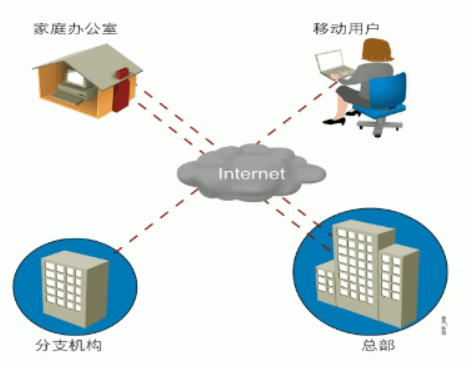
网络功能和优点
- 数据和应用程序
- 资源
- 网络存储
- 备份设备
作用范围分类
- 广域网(WAN,Wide Area Network)
- 城域网(MAN,Metropolitan Area Network)
- 局域网(LAN,Local Area Network)
常见的网络物理组件
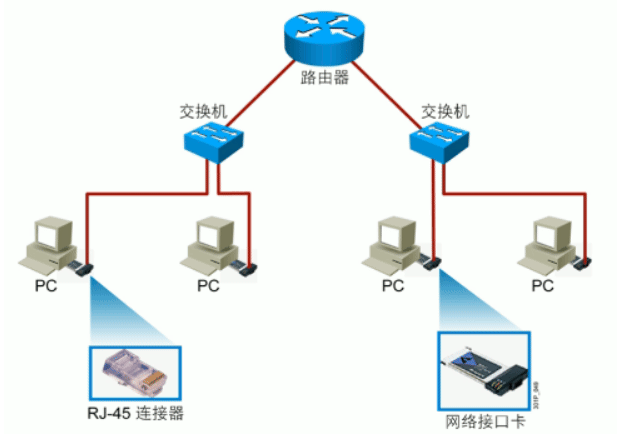
网络应用程序
各种网络应用
- Web 浏览器（Chrome、IE、Firefox等）
- 即时消息（QQ、微信、钉钉等）
- 电子邮件（Outlook、foxmail 等）
- 协作（视频会议、VNC、Netmeeting、WebEx 等）
- web网络服务（apache，nginx，IIS）
- 文件网络服务（ftp ，nfs，samba）
- 数据库服务（ MySQL，MariaDB，MongoDB)
- 中间件服务（Tomcat，JBoss）
- 安全服务（Netfilter）
应用程序对网络的要求
- 批处理应用程序
- FTP、TFTP、库存更新
- 无需直接人工交互
- 带宽很重要，但并非关键性因素
- 交互式应用程序
- 库存查询、数据库更新
- 人机交互
- 因为用户需等待响应，所以响应时间很重要，但并非关键性因素，除非要等待很长时间
- 实时应用程序
- VoIP、视频
- 人与人的交互
- 端到端的延时至关重要
网络的特征
- 速度
- 成本
- 安全性
- 可用性
- 可扩展性
- 可靠性
- 拓扑
速度(带宽)
网络拓扑
拓扑结构一般是指由点和线排列成的几何图形
计算机网络的拓扑结构是指一个网络的通信链路和计算机结点相互连接构成的几何图形
拓扑分类
- 物理拓扑描述了物理设备的布线方式
- 逻辑拓扑描述了信息在网络中流动的方式
拓扑结构分类
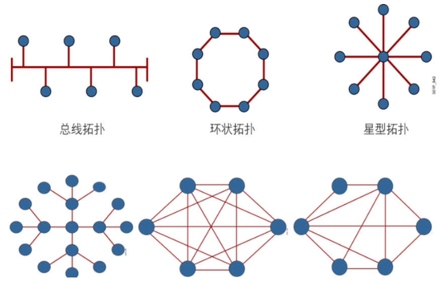
- 总线拓扑：所有设备均可接收信号
- 星型拓扑：通过中心点传输，单一故障点
- 扩展星型拓扑：比星型拓扑的复原能力更强
- 环拓扑：信号绕环传输，单一故障点
- 双环拓扑：信号沿相反方向传输，比单环的复原能力更强
- 全网状拓扑：容错能力强，实施成本高
- 部分网状拓扑：在容错能力与成本之间寻求平衡
网络标准
网络标准和分层
旧模型：专有产品，由一个厂商控制应用程序和嵌入的软件
基于标准的模型：多厂商软件，分层方法
层次划分的必要性
计算机网络是由许多硬件、软件和协议交织起来的复杂系统。由于网络设计十分 复杂，如何设计、组织和实现计算机网络是一个挑战，必须要采用科学有效的方 法
层次划分的方法
- 网络的第一层应当具有相对独立的功能
- 梳理功能之间的关系，使一个功能可以为实现另一个功能提供必要的服务，从 而形成系统的层次结构
- 为提高系统的工作效率，相同或相近的功能仅在一个层次中实现，而且尽可能 在较高的层次中实现
- 每一层只为相邻的上一层提供服务
层次划分的优点
- 各层之间相互独立，每一层只实现一种相对独立的功能，使问题复杂程度降低
- 灵活性好，各层内部的操作不会影响其他层
- 结构上可分割开，各层之间都可以采用最合适的技术来实现
- 易于实现和维护，因为整个系统已被分解成相对独立的子系统
- 能促进标准化工作，因为每一层的功能及其提供的服务都有了精确的说明
开放系统互联 OSI
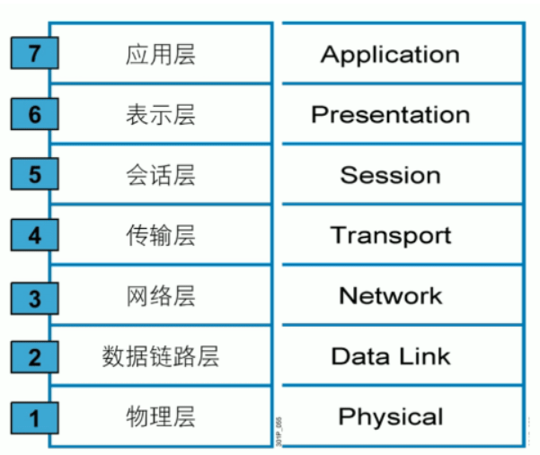
在制定计算机网络标准方面，起着重大作用的两大国际组织是：国际电信联盟电 信标准化部门，与国际标准组织（ISO），虽然它们工作领域不同，但随着科学 技术的发展，通信与信息处理之间的界限开始变得比较模糊，这也成了国际电信 联盟电信标准化部门和ISO共同关心的领域。1984年，ISO发布了著名的OSI(Open System Interconnection)标准，它定义了网络互联的7层框架，物理层、数据链 路层、网络层、传输层、会话层、表示层和应用层），即OSI开放系统互连参考 模型
OSI 模型的七层结构
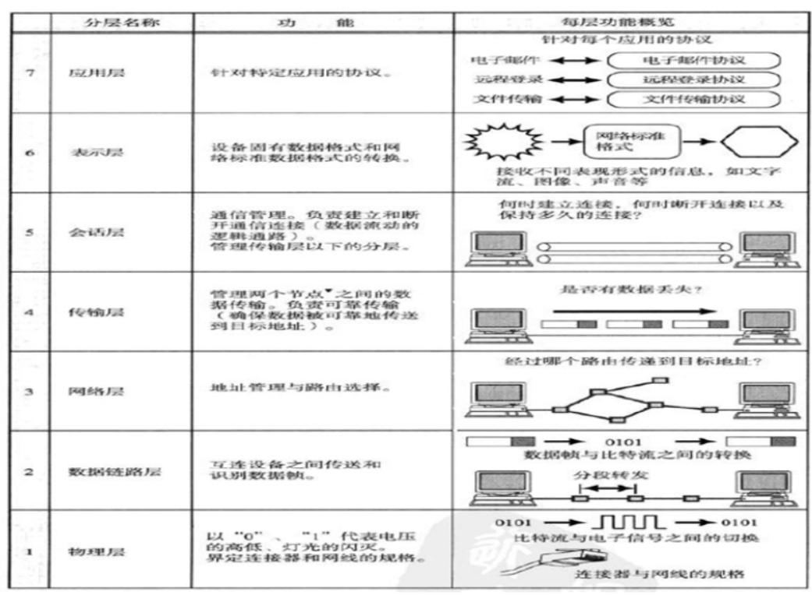
- 第7层 应用层
- 应用层（Application Layer）提供为应用软件而设的接口，以设置与另一应 用软件之间的通信。例如:HTTP、HTTPS、FTP、TELNET、SSH、SMTP、POP3、 MySQL等
- 第6层 表示层
- 主条目：表示层（Presentation Layer）把数据转换为能与接收者的系统格式 兼容并适合传输的格式
- 第5层 会话层
- 会话层（Session Layer）负责在数据传输中设置和维护电脑网络中两台电脑 之间的通信连接。
- 第4层 传输层
- 传输层（Transport Layer）把传输表头（TH）加至数据以形成数据包。传输 表头包含了所使用的协议等发送信息。例如:传输控制协议（TCP）等。
- 第3层 网络层
网络层（Network Layer）决定数据的路径选择和转寄，将网络表头（NH）加 至数据包，以形成报文。网络表头包含了网络数据。例如:互联网协议（IP） 等。
代表：路由器
- 第2层 数据链接层
数据链路层（Data Link Layer）负责网络寻址、错误侦测和改错。当表头和 表尾被加至数据包时，会形成信息框（Data Frame）。数据链表头（DLH）是 包含了物理地址和错误侦测及改错的方法。数据链表尾（DLT）是一串指示数 据包末端的字符串。例如以太网、无线局域网（Wi-Fi）和通用分组无线服务 （GPRS）等。分为两个子层：
逻辑链路控制（logical link control，LLC）子层和介质访问控制（Media access control，MAC）子层
代表：交换机，网卡
- 第1层 物理层
物理层（Physical Layer）在局部局域网上传送数据帧（Data Frame），它负 责管理电脑通信设备和网络媒体之间的互通。包括了针脚、电压、线缆规范、 集线器、中继器、网卡、主机接口卡等
代表：集线器hub，网线
网络的通信过程
数据封装和数据解封
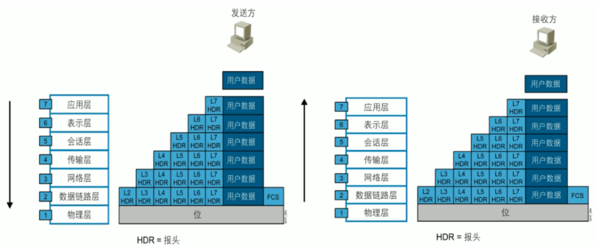
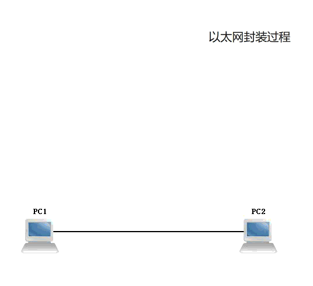
协议数据单元 PDU
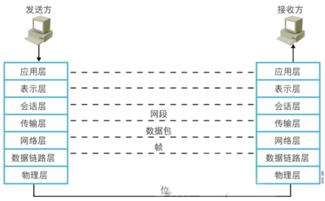
PDU: Protocol Data Unit,协议数据单元是指对等层次之间传递的数据单位
- 物理层的 PDU是数据位 bit
- 数据链路层的 PDU是数据帧 frame
- 网络层的PDU是数据包 packet
- 传输层的 PDU是数据段 segment
- 其他更高层次的PDU是消息 message
统称为数据报文、数据包，只不过在不同的层有自己的专业术语
三种通讯模式
- unicast 单播，1对1
- broadcast 广播，目标所有
- multicast 多播，组播，目标设备多个
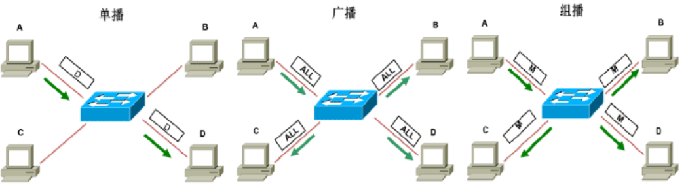
# ip a 2: eth0: <BROADCAST（广播）,MULTICAST（多播）,UP,LOWER_UP> mtu 1500 qdisc pfifo_fast state UP group default qlen 1000 link/ether 52:54:00:12:84:94 brd ff:ff:ff:ff:ff:ff inet 10.0.1.86/22 brd 10.0.3.255 scope global noprefixroute eth0 valid_lft forever preferred_lft forever inet6 fe80::5054:ff:fe12:8494/64 scope link valid_lft forever preferred_lft forever #可以看到当前的网卡 eth0 即支持广播也支持多播
冲突域和广播域
冲突域：两个网络设备同时发送数据,如果发生了冲突,则两个设备处于同一个冲 突域,反之,则各自处于不同的冲突域
广播域：一个网络设备发送广播，另一个设备收到了,则两个设备处于同一个广 播域,反之,则各自处于不同的广播域
冲突域和广播域的区别
冲突域
【概念】连接在同一导线上的所有工作站的集合，或者说是同一物理网段上所有 节点的集合或以太网上竞争同一带宽的节点集合。
【设备】第二层设备能划分冲突域。即交换机的每一个端口就是一个冲突域。
- 集线器Hub是物理层设备，不能划分冲突域。所以Hub下面连接的所有主机组成 一个冲突域。
冲突域指的是会产生冲突的最小范围，在计算机和计算机通过设备互联时，会建 立一条通道，如果这条通道只允许瞬间一个数据报文通过，那么在同时如果有两 个或更多的数据报文想从这里通过时就会出现冲突了。
冲突域的大小可以衡量设备的性能，多口hub的冲突域也只有一个，即所有的端 口上的数据报文都要排队等待通过。
而交换机就明显的缩小了冲突域的大小，使到每一个端口都是一个冲突域，即一 个或多个端口的高速传输不会影响其它端口的传输，因为所有的数据报文不同都 按次序排队通过，而只是到同一端口的数据才要排队。
广播域
【概念】接收同样广播消息的节点的集合。简单的说如果站点发出一个广播信号， 所有能接收收到这个信号的设备范围称为一个广播域。
【设备】第三层设备能划分广播域。即路由器的每一个端口就是一个广播域。
如果一个数据报文的目标地址是这个网段的广播地址或者目标计算机的MAC地址 是FF-FF-FF-FF-FF-FF，那么这个数据报文就会被这个网段的所有计算机接收并 响应，这就叫做广播。
通常广播用来进行ARP寻址等用途，但是广播域无法控制也会对网络健康带来严 重影响，主要是带宽和网络延迟。这种广播所能覆盖的范围就叫做广播域了，二 层的交换机是转发广播的，所以不能分割广播域，而路由器一般不转发广播，所 以可以分割或定义广播域。
网络互连设备可以将网络划分为不同的冲突域、广播域。但是，由于不同的网络 互连设备可能工作在OSI模型的不同层次上。因此，它们划分冲突域、广播域的 效果也就各不相同。
如中继器工作在物理层，网桥和交换机工作在数据链路层，路由器工作在网络层， 而网关工作在OSI模型的上三层。而每一层的网络互连设备要根据不同层次的特 点完成各自不同的任务。
区别 ：
- Hub设备既不隔离冲突，也不隔离广播。
- 交换机隔离冲突，但不隔离广播。
- 路由器不仅隔离冲突，而且隔离广播。
- 在同一冲突域的设备必在同一广播域。
- 全双工模式下不会发生冲突。
计算例题
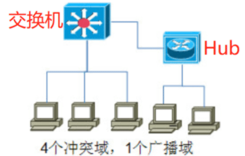
分析：没有路由器等第三层设备，所以只有一个广播域；第二次设备交换机，4 个端口直连，有4个冲突域。
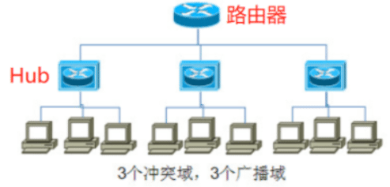
分析：路由器的3个端口连接3个Bub,3个广播域；每个Hub下面的所有主机组成一个冲突域
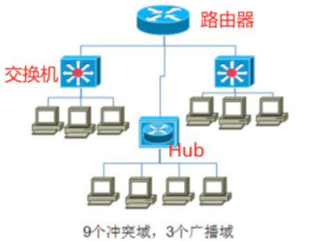
分析：路由器3个端口，3个广播域；每个交换机3个端口连接3太主机共6个冲突 域，Hub下面所有主机组成一个冲突域。
关键： 路由器到交换机之间还是存在冲突域的，所以到两个交换机分别有2个冲突域。（6+1+2)
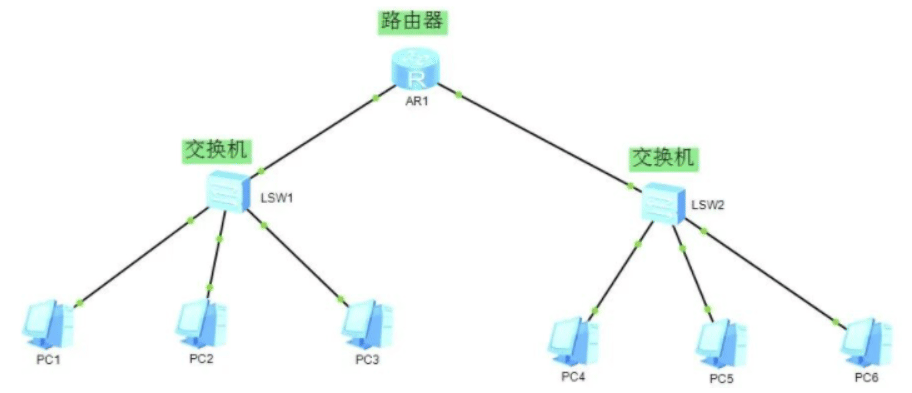
- 答：2个广播域，8个冲突域。
三种通讯机制
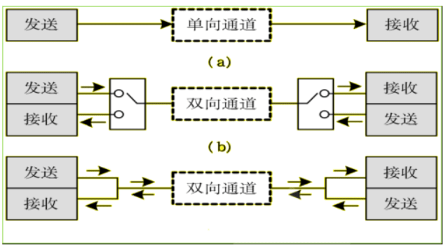
- 单工通信：只有一个方向的通信
- 半双工通信：通信双方都可以发送和接收信息，但不能同时发送，也不能同时接收
- 全双工通信：通信双方可以同时发送和同时接收
范例：查看双工和速度
[root@localhost ~]# mii-tool eth0 eth0: negotiated 100baseTx-FD, link ok [root@localhost ~]# mii-tool -v eth0 eth0: negotiated 100baseTx-FD, link ok # 当前网卡状态没问题 product info: vendor 00:07:32, model 17 rev 5 basic mode: autonegotiation enabled basic status: autonegotiation complete, link ok capabilities: 100baseTx-FD 100baseTx-HD 10baseT-FD 10baseT-HD advertising: 100baseTx-FD 100baseTx-HD 10baseT-FD 10baseT-HD flow-control link partner: 100baseTx-FD 100baseTx-HD 10baseT-FD 10baseT-HD Tx: 双绞线 FD： 全双工 HD：半双工 capabilities: 100baseTx-FD(支持1000兆全双式模式) 100baseTx-HD（支持百兆半双工） 10baseT-FD 10baseT-HD [root@centos8 ~]#ethtool -i eth0 driver: vmxnet3 version: 1.4.16.0-k-NAPI firmware-version: expansion-rom-version: bus-info: 0000:03:00.0 supports-statistics: yes supports-test: no supports-eeprom-access: no supports-register-dump: yes supports-priv-flags: no [root@centos8 ~]#ethtool eth0 Settings for eth0: Supported ports: [ TP ] Supported link modes: 1000baseT/Full 10000baseT/Full Supported pause frame use: No Supports auto-negotiation: No Supported FEC modes: Not reported Advertised link modes: Not reported Advertised pause frame use: No Advertised auto-negotiation: No # 是否协商用全双工还是半双工 Advertised FEC modes: Not reported Speed: 10000Mb/s # 目前状态 Duplex: Full Port: Twisted Pair PHYAD: 0 Transceiver: internal Auto-negotiation: off MDI-X: Unknown Supports Wake-on: uag Wake-on: d Link detected: yes # 当前网卡状态没问题 #1000baseT/Full： 全双工 [root@centos8 ~]#mii-tool eth0 SIOCGMIIPHY on 'eth0' failed: Operation not supported #网络断开的状态 [root@centos8 ~]#mii-tool -v eth1 eth1: no link Link detected: no [root@centos8 ~]#ip link 3: eth1: <NO-CARRIER,BROADCAST,MULTICAST,UP> mtu 1500 qdisc fq_codel state DOWN
局域网 Local Area Network
概述
特点
- 网络为一个单位所拥有
- 地理范围和站点数目均有限
主要功能
资源共享和数据通信
优点
- 能方便地共享昂贵的外部设备、主机以及软件、数据。从一个站点可以访问全网
- 便于系统的扩展和逐渐演变，各设备的位置可灵活的调整和改变
- 提高系统的可靠性、可用性和易用性
标准
IEEE于（国际电子电气工程师协会）1980年2月成立了局域网标准委员会（简称 IEEE802委员会），专门从事局域网标准化工作，并制定了IEEE802标准。802标 准所描述的局域网参考模型只对应OSI参考模型的数据链路层与物理层，它将数 据链路层划分为逻辑链路层LLC子层和介质访问控制MAC子层.
LLC子层负责向其上层提供服务MAC子层的主要功能包括数据帧的封装/卸装，帧 的寻址和识别，帧的接收与发送，链路的管理，帧的差错控制等。MAC子层的存 在屏蔽了不同物理链路种类的差异性。
局域网标准
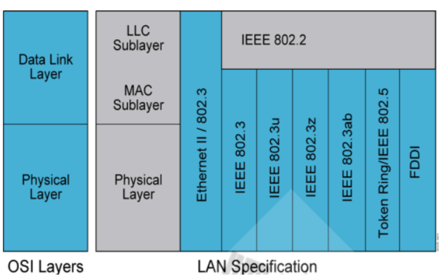
（1） IEEE 802.1标准 局域网体系结构、网络互连、以及网络管理和性能测试 （2）IEEE 802.2标准 逻辑链路控制LLC子层功能与服务 （3）IEEE 802.3标准 带冲突检测的载波侦听多路访问CSMA/CD总线介质访问控制子层与物理层规范 （4）IEEE 802.4标准 令牌总线（Token Bus）介质访问控制子层与物理层规范 （5）IEEE 802.5标准 令牌环（Token Ring）介质访问控制子层与物理层规范 （6）IEEE 802.6标准 城域网MAN介质访问控制子层与物理层规范 （7）IEEE 802.7标准 宽带网络技术 （8）IEEE 802.8标准 光纤传输技术 （9）IEEE 802.9标准 综合语音与数据局域网（IVD LAN）技术 （10）IEEE 802.10标准 可互操作的局域网安全性规范（SILS） （11）IEEE 802.11标准 无线局域网技术 （12）IEEE 802.12标准 优先度要求的访问控制方法 （13）IEEE 802.13标准 未使用 （14）IEEE 802.14标准 交互式电视网 （15）IEEE 802.15标准 无线个人局域网（WPAN）的MAC子层和物理层规范。代表技术为蓝牙（Bluetooth） （16）IEEE 802.16标准 宽带无线局域网网络 （17）IEEE802.20标准 移动宽带无线接入系统(MBWA，Mobile Broadband Wireless Access) （18）IEEE 802.22标准 无线地域网络（Wireless Regional Area Networks，WRAN）
无线网络标准 中国国家无线网络标准：WAPI
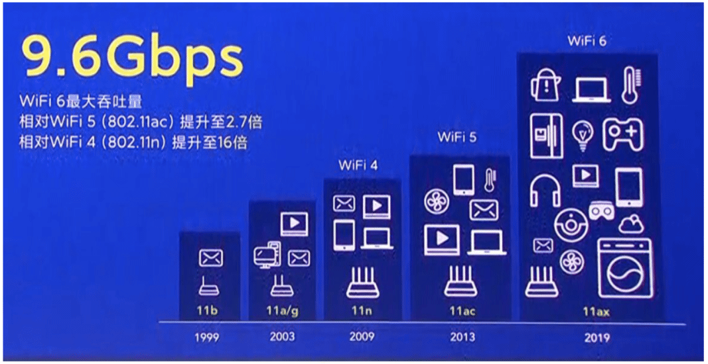
组网设备
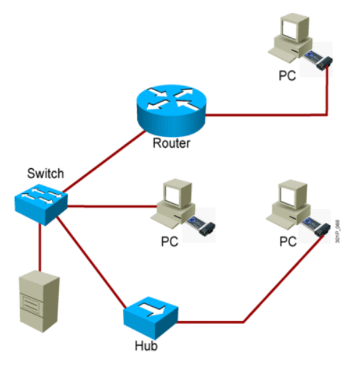
网络线缆和接口
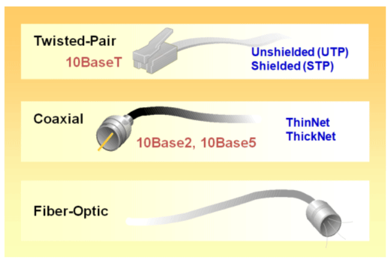
- 双绞线：俩俩搅合在一起。有屏蔽式双绞线和非屏蔽式双绞线，非屏蔽式双 绞线用得较多就是外面没有保持层。俩俩搅合在一起，作用抗干扰，因为线 和线之间如果是平行的，它们彼此之间传输数据时高低压变化会产生电磁干 扰，所以俩俩搅合在一起正好能抵消干扰。俩俩搅合在一起规律同一色系在 一起。RJ-45水晶头中线排序
- 同轴电缆：有线电视还在用，速度较慢。10Base2 中10表示10兆速度; base 表示基带(数字信号)传输；2表示最大设备的传输距离185米。传输距离超过 185米信号衰减就判断不出来了其高低电平就平了。基带表示数字信号，宽带 表示模拟信号
网线标准
上世纪80年代初，诞生了最早的网线标准（CAT）,这个标准一直沿用至今，主要 根据带宽和传输速率来区分，从一类网线CAT1-–—八类网线CAT8
1、一类网线：主要用于传输语音，不同于数据传输主要用于八十年代初之前的 电话线缆，已淘汰。
2、二类网线：传输带宽为1MHZ，用于语音传输，最高数据传输速率4Mbps，常见 于使用4Mbps规范令牌传递协议的旧的令牌网（Token Ring），已被淘汰
3、三类网线：该电缆的传输带宽16MHz，用于语音传输及最高传输速率为10Mbps 的数据传输，主要用于10BASE–T，被ANSI/TIA-568.C.2作为最低使用等级。
4、四类网线：该类电缆的传输频率为20MHz，用于语音传输和最高传输速率 16Mbps（指的是16Mbit/s令牌环）的数据传输，主要用于基于令牌的局域网和 10BASE-T/100BASE-T。最大网段长为100m，采用RJ形式的连接器，未被广泛采用。
5、五类线：可追溯到1995年，传输带宽为100MHz，可支持10Mbps和=100Mbps传 输速率=（虽然现实中与理论值有一定差距），主要用于双绞线以太网 （10BASE-T/100BASE-T），目前仍可使用，不过在新网络建设中已经很难看到。 最大传输距离100米
6、超五类线：标准于2001年被提出，传输带宽为100MHz，近距离情况下传输速 率已可达=1000Mbps=。它具有衰减小，串扰少，比五类线增加了近端串音功率和 测试要求，所以它也成为了当前应用最为广泛的网线
7、六类线：继CAT5e之后，CAT6标准被提出，传输带宽为250MHz，最适用于传输 速率为1Gbps的应用。改善了在串扰以及回波损耗方面的性能，这一点对于新一 代全双工的高速网络应用而言是极重要的，还有一个特点是在4个=双绞线中间加 了十字形的骨架=。
8、超六类线：超六类线是六类线的改进版，发布于2008年，同样是 ANSI/TIA-568C.2和ISO/IEC 11801超六类/EA级标准中规定的一种双绞线电缆， 主要应用于万兆位网络中。传输频率500 MHz，最大传输速度也可达到=10Gbps= ，在外部串扰等方面有较大改善。
9、 七类线：该线是ISO/IEC 11801 7类/F级标准中于2002年认可的一种双绞线， 它主要为了适应万兆以太网技术的应用和发展。但它不再是一种非屏蔽双绞线了， 而是一种=屏蔽双绞线=，所以它的传输频率至少可达600 MHz，传输速率可达10 Gbps。
10、超七类线:相对于CAT7最大区别在于，支持的频率带宽提升到了1000MHz，在 国内而言，七类网线已经有很少地方使用了，超七类就更加没有广泛的进入人们 的生活，目前使用范围最广的是超五类、六类等网线
11、 八类线CAT8：相关标准由美国通信工业协会（TIA）TR-43委员会在2016年 正式发布，支持2000MHz带宽，支持40Gbps以太网络，主要应用于数据中心
网线线序和规范
非屏蔽式双绞线Unshielded Twisted-Pair Cable UTP
T568B(用的较多)和T568A
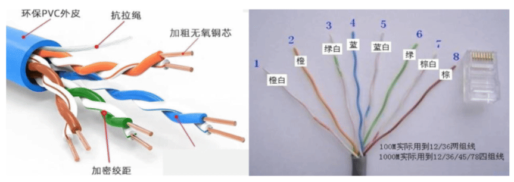
T568B：橙白、橙、绿白、蓝、蓝白、绿、棕白棕
橙蓝绿棕，蓝和绿前面线互换，蓝的前面不是蓝白是绿白，绿的前面是蓝白
RJ-45 Connector和Jack
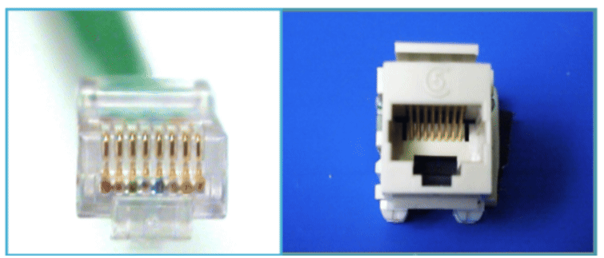
UTP直通线(Straight-Through)
两边线序一样 Straight-Through Cable
再边一样服务器就无法通信了，交换机没事
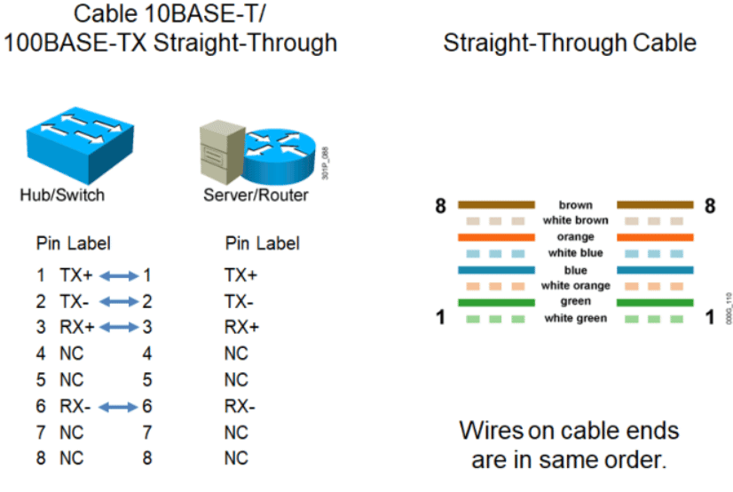
UTP交叉线(Crossover)
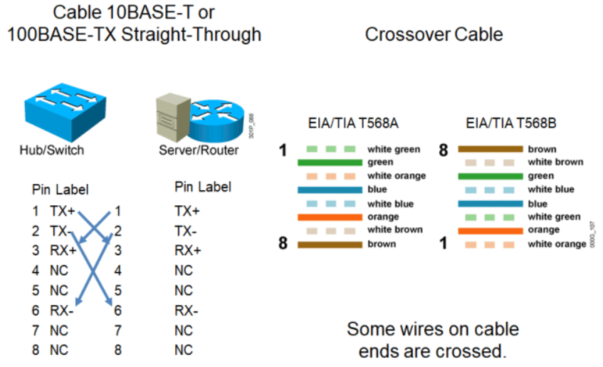
UTP 直通线和交叉线
目前的交换机服务器自动能识别
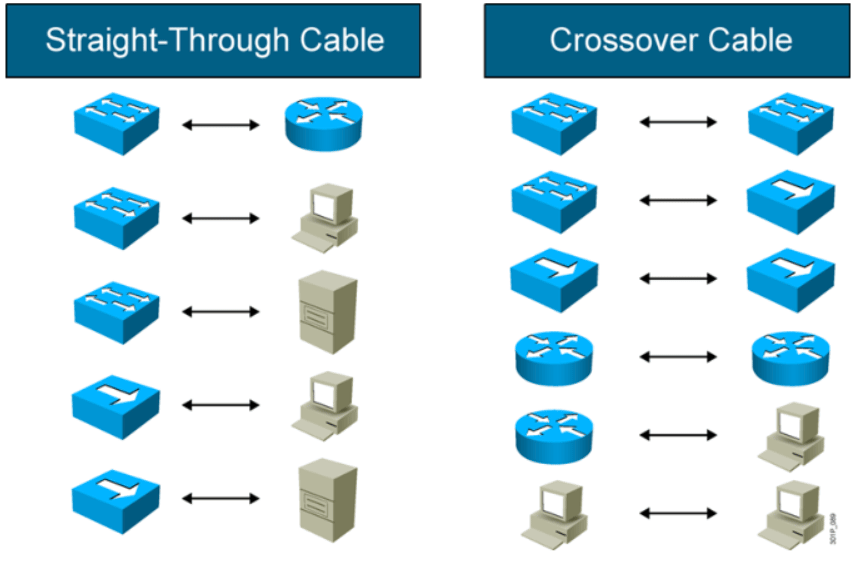
双绞线针脚定义
注：BI=双向数据 RX=接收数据 Receive Data TX=传送数据 Transmit Data
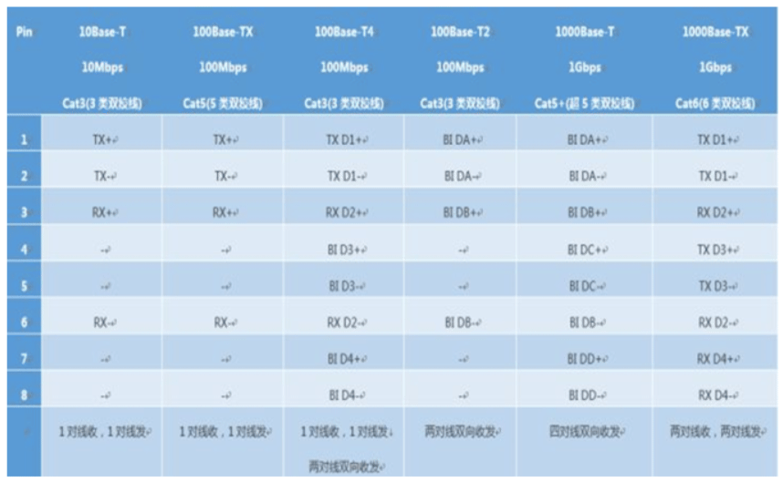
光纤和接口Fiber-Optic
- Short wavelength (1000BASE-SX) 最远几百米
- Long wavelength/long haul (1000BASE-LX/LH) 最远几公里
- Extended distance (1000BASE-ZX) 最远上百公里
网络适配器
网卡、光线模块
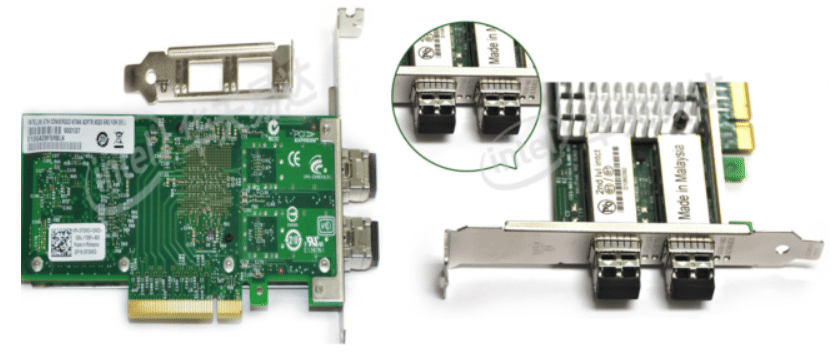
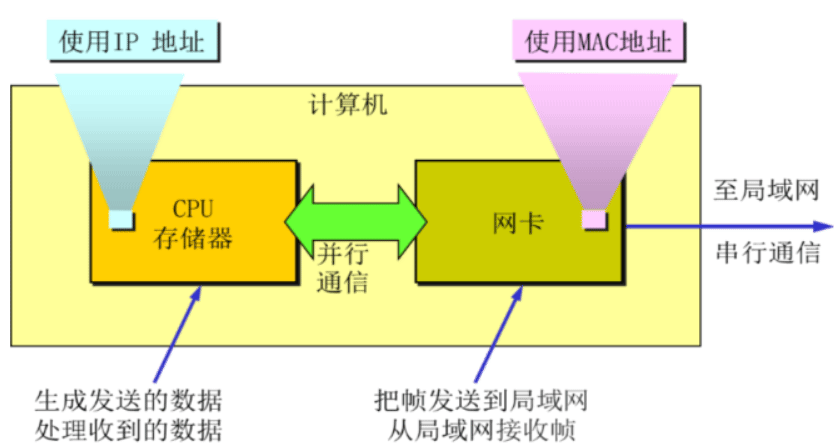
作用
进行串行/并行转换
计算机内部可以并行处理32位、64位数据，但在网络中传输是串行1位1位传
- 数据缓存 缓存到网卡的ram芯片，再复制到内核中
- 在计算机操作系统中安装设备驱动程序
- 实现以太网协议
类型
（1）按总线接口类型进行分类
分为ISA网卡、PCI网卡、PCI-X 网卡、PCMCIA网卡和USB网卡等几种类型
（2）按传输介质接口分类
细同轴电缆的BNC接口网卡、粗同轴电缆AUI接口网卡、以太网双绞线RJ-45接口 网卡、光纤F/O接口网卡、无线网卡等
（3）按传输速率（带宽）分类
10Mbps网卡、100Mbps以太网卡、10Mbps/100Mbps自适应网卡、1000Mbps千兆以 太网卡、40Gbps自适应网卡等
中继器和集线器
中继器 repeater
几乎看不到这种设备了
实际上是一种信号再生放大器，可将变弱的信号和有失真的信号进行整形与放大， 输出信号比原信号的强度将大大提高,中继器不解释、不改变收到的数字信息， 而只是将其整形放大后再转发出去
优点
- 易于操作
- 很短的等待时间
- 价格便宜
- 突破线缆的距离限制(100米)来扩展局域网段的距离
- 可用来连接不同的物理介质
缺点
- 采用中继器连接网络分支的数目要受具体的网络体系结构限制
- 中继器不能连接不同类型的网络
- 中继器没有隔离和过滤功能，无路由选择、交换、纠错／检错功能，一个分 支出现故障可能会影响到其他的每一个网络分支
- 使用中继器扩充网络距离是最简单最廉价的方法，但当负载增加时，网络性 能急剧下降，所以只有当网络负载很轻和网络时延要求不高的条件下才能使用
集线器 hub
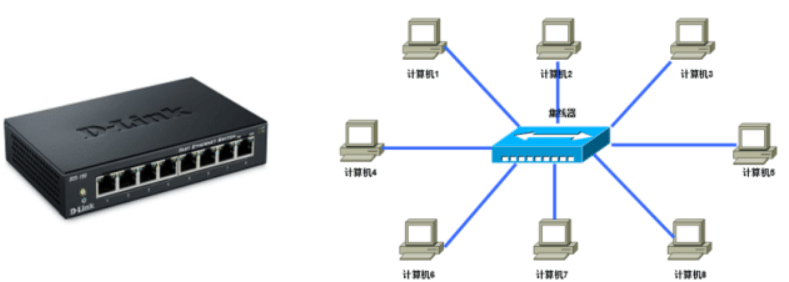
集线器（Hub）工作在物理层，是中继器的一种形式，是一种集中连接缆线的网 络组件，可以认为集线器是一个多端口的中继器，集线器能够提供多端口服务， 主要功能是对接收到的信号进行再生整形放大，以扩大网络的传输距离，同时把 所有节点集中在以它为中心的节点上
Hub并不记忆报文是由哪个MAC地址发出，哪个MAC地址在Hub的哪个端口
Hub的特点：
- 共享带宽
- 半双工
网桥和交换机
网桥Bridge
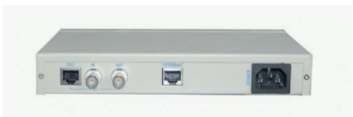
网桥（Bridge）也叫桥接器，是连接两个局域网的一种存储/转发设备，根据MAC 地址表对数据帧进行转发，可隔离碰撞域
网桥将网络的多个网段在数据链路层连接起来，并对网络数据帧进行管理
网桥的内部结构
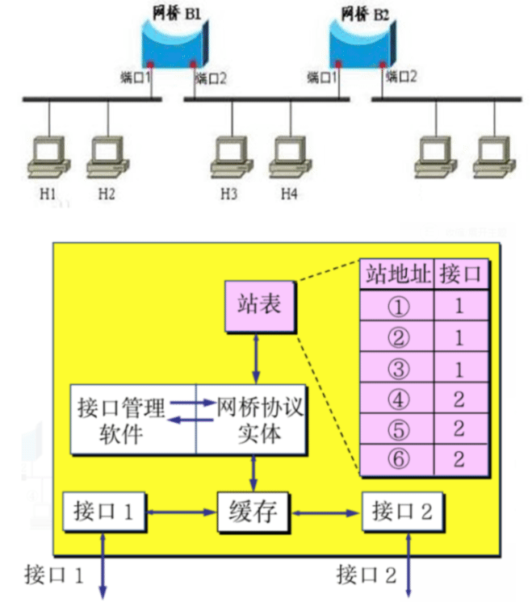
优点
- 过滤通信量
- 扩大了物理范围
- 提高了可靠性
- 可互连不同物理层、不同 MAC 子层和不同速率（如10 Mb/s 和 100 Mb/s以太 网）的局域网
缺点
- 存储转发增加了时延
- 在MAC 子层并没有流量控制功能
- 具有不同 MAC 子层的网段桥接在一起时时延更大
- 网桥只适合于用户数不太多(不超过几百个)和通信量不太大的局域网，否则有 时还会因传播过多的广播信息而产生网络拥塞。这就是所谓的广播风暴
交换机switch
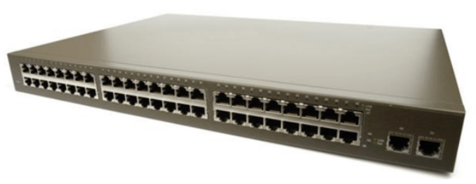
交换机是工作在OSI参考模型数据链路层的设备，外表和集线器相似
它通过判断数据帧的目的MAC地址，从而将数据帧从合适端口发送出去
交换机是通过MAC地址的学习和维护更新机制来实现数据帧的转发
内部结构
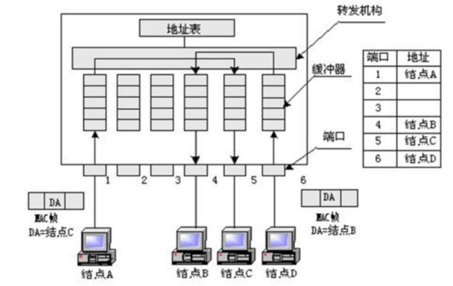
工作原理
和网桥工作原理一样
（1）交换机根据收到数据帧中的源MAC地址建立该地址同交换机端口的映射，并将其写入MAC地址表中
（2）交换机将数据帧中的目的MAC地址同已建立的MAC地址表进行比较，以决定由哪个端口进行转发
（3）如数据帧中的目的MAC地址不在MAC地址表中，则向所有端口转发。这一过程称为泛洪（flood）
（4）广播帧和组播帧向所有的端口转发
广播时由于地址表中没有广播地址，所以会泛洪
集线器与交换机的比较
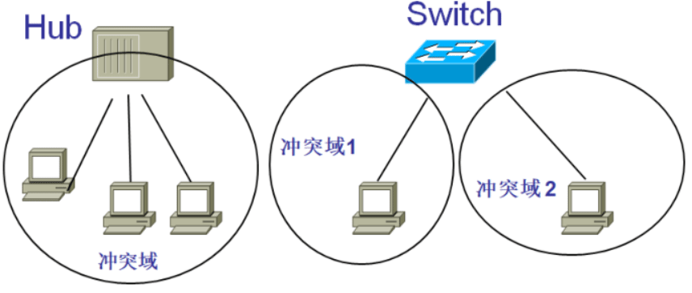
（1）交换机属于osi 2层 数据链路层 设备，而集线器属于物理层设备
（2）集线器属于osi 1层 物理层 备，在转发帧时，不对传输介质进行检测，
交换机在转发帧之前必须执行CSMA/CD 算法。若在发送过程中出现碰撞，就必须
停止发送和进行退避。所以交换机能隔离冲突，而集线器却只能增加冲突
（3） 交换机的每个端口可提供专用的带宽，而集线器的所有端口只能共享带宽
（4）集线器只能实现半双工传送，而交换机可支持全双工传送
（5）集线器和交换机都无法隔离广播域
集线器不能隔断冲突域、不能隔断广播域
交换机解决了冲突域的问题，无法解决广播域问题，需要路由器解决，隔断广播
路由器 router
解决跨网段通信问题。
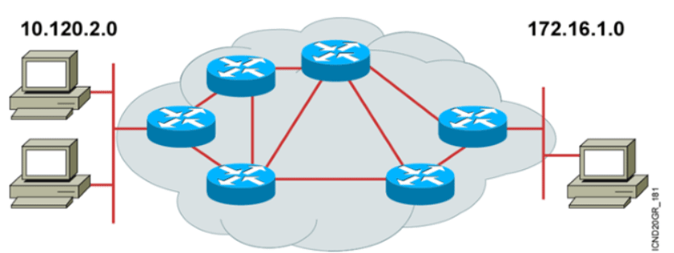
OSI 3层 网络层 设备
为了实现路由,路由器需要做下列事情:
- 分隔广播域和冲突域
- 选择路由表中到达目标最好的路径
- 维护和检查路由信息
- 连接广域网
- 路由:把一个数据包从一个设备发送到不同网络里的另一个设备上去。这些工 作依靠路由器来完成。路由器只关心网络的状态和决定网络中的最佳路径。路 由的实现依靠路由器中的路由表来完成
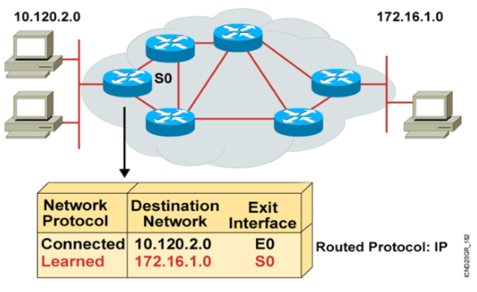
以太网技术
必须要掌握的
概述
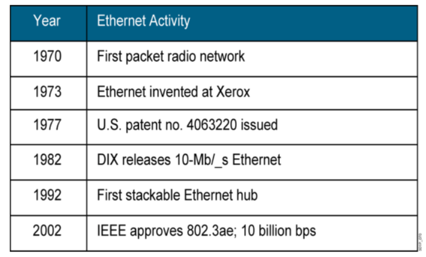
国际上局域网标准
802.3，实际上标准是以太网
以太网（Ethernet）是一种产生较早且使用相当广泛的局域网，由美国 Xerox（施乐）公司的Palo Alto研究中心（简称为PARC）于20世纪70年代初期开 始研究并于1975年研制成功
以太网MAC帧格式
2代以网和以往的以太网有些区别
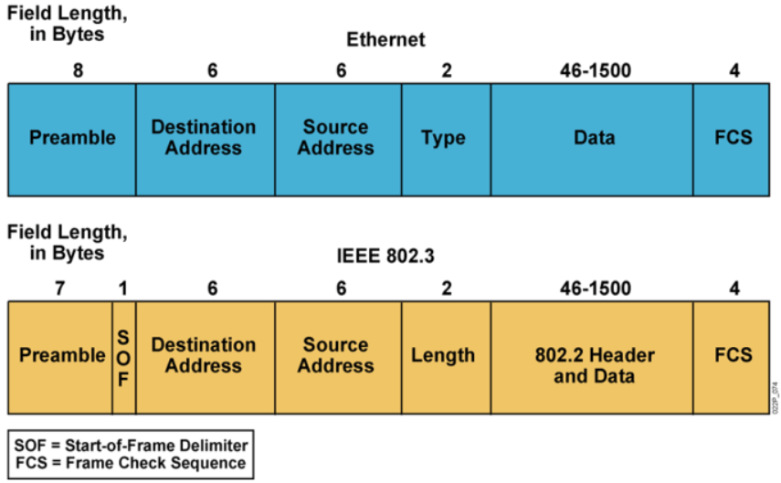
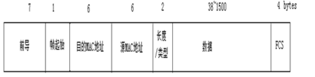
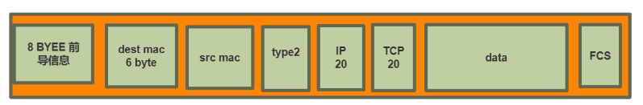
前导(7字节)：实现帧的同步 帧起始(1) ：表示帧的开始 目的MAC地址(6) ： 源MAC地址(6) ： 类型(2) ：以太网中帧的类型，体现上层协议的类型 数据(38~1500): IP20字节 + TCP20字节+数据 FCS(4) ：帧的校验序列，计算帧是否损坏丢失。
windows管理员身份运行wireshark抓包软件
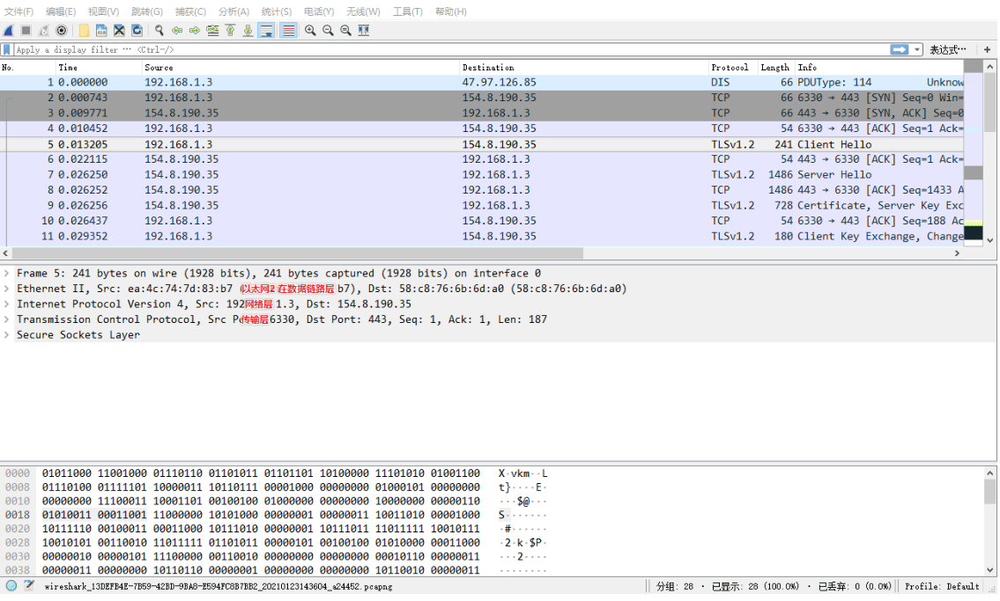
MAC地址
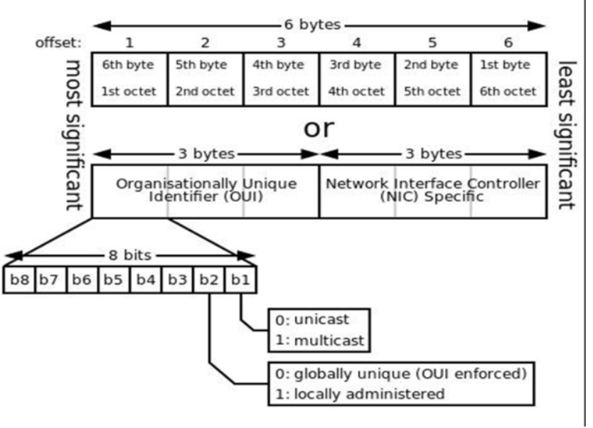
在局域网中，硬件地址又称为物理地址或MAC地址（因为这种地址用在MAC帧中）
IEEE 802标准为局域网规定了一种48位的全球地址（一般都简称为”地址”)， 是局域网中每一台计算机固化在网卡ROM中的地址
IEEE 的注册管理机构 RA 负责向厂家分配 地址字段的前三个字节(即高位 24 位)
地址字段中的后三个字节(即低位 24位)由厂家 自行指派 ，称为扩展标识符， 必须保证生产出的适配器没有重复地址
使用虚拟机注意：
我们在使用vmware虚拟机时，有时会直接复制一份虚拟机，那mac地址就是不唯 一的了，2台机器无法通信，这时就需要修改其中一台虚拟机中的mac地址。
各大厂商MAC识别码： https://standards-oui.ieee.org/oui/oui.txt
冲突检测的载波侦听多路访问CSMA/CD
早期以太网通信机制csma/cd
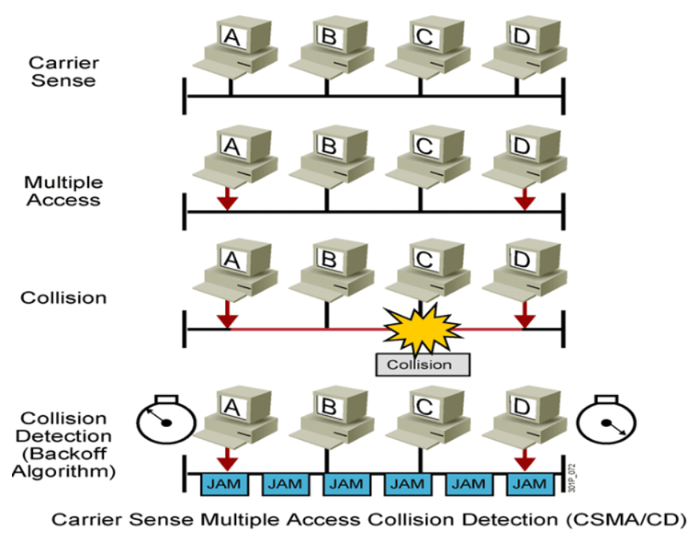
工作原理
- 先听后发：通信前先检测网络中是否有数据报文传输，如果没有人发再发
- 边发边听
- 冲突停止
- 延迟重发
现在网卡都是工作在交换机中的，交换机中是没有冲突的，它是一个接口一个冲突域。
虚拟局域网 VLAN
解决问题：把网络从逻辑上切成小的网络。
因为在没有 VLAN前，在局域网中连接网络设备很多都是用交换机连，但交换机 是2层设备不能起到隔离广播的功能，造成所有的设备连在一起就在一个广播域。
交换机上的技术
VLAN 原理
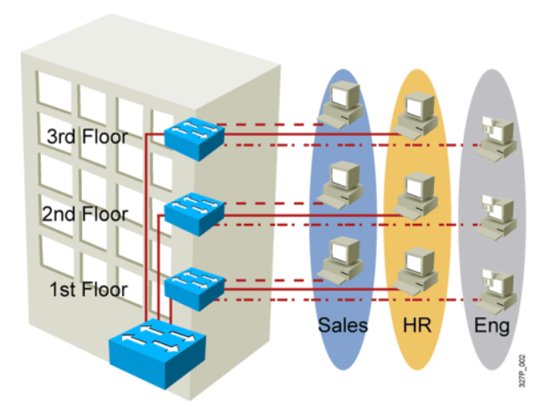
如果像上图都3个楼层都者交换机相连，交换机无法隔断广播的，工程部人员可 以访问HR人员主机上共享的资源
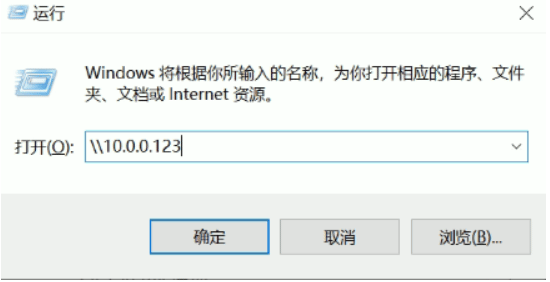
虚拟局域网 VLAN 是由一些局域网网段构成的与物理位置无关的逻辑组
这些网段具有某些共同的需求。每一个 VLAN的帧都有一个明确的标识符，指明 发送这个帧的工作站是属于哪一个VLAN。虚拟局域网其实只是局域网给用户提供 的一种服务，而并不是一种新型局域网
优点
（1）更有效地共享网络资源。如果用交换机构成较大的局域网，大量的广播报 文就会使网络性能下降。VLAN能将广播报文限制在本VLAN范围内，从而提升了网 络的效能
（2）简化网络管理。当结点物理位置发生变化时，如跨越多个局域网，通过逻 辑上配置VLAN即可形成网络设备的逻辑组，无需重新布线和改变IP地址等。这些 逻辑组可以跨越一个或多个二层交换机
（3）提高网络的数据安全性。一个VLAN中的结点接收不到另一个VLAN中其他结点的帧
虚拟局域网的实现技术 （1）基于端口的VLAN （2）基于MAC地址的VLAN
（3）基于协议的VLAN （4）基于网络地址的VLAN
范例：查看谁使用了共享资源
查看本地共享：我的电脑右键–>"管理"–>共享文件夹
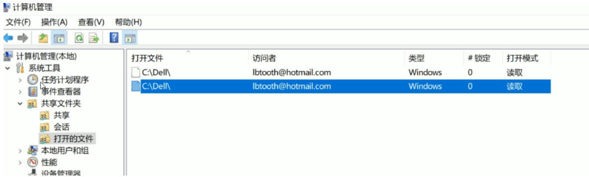
windows中用netstat -no| findstr :445查看是否有端口被访问，445共享服务 端口
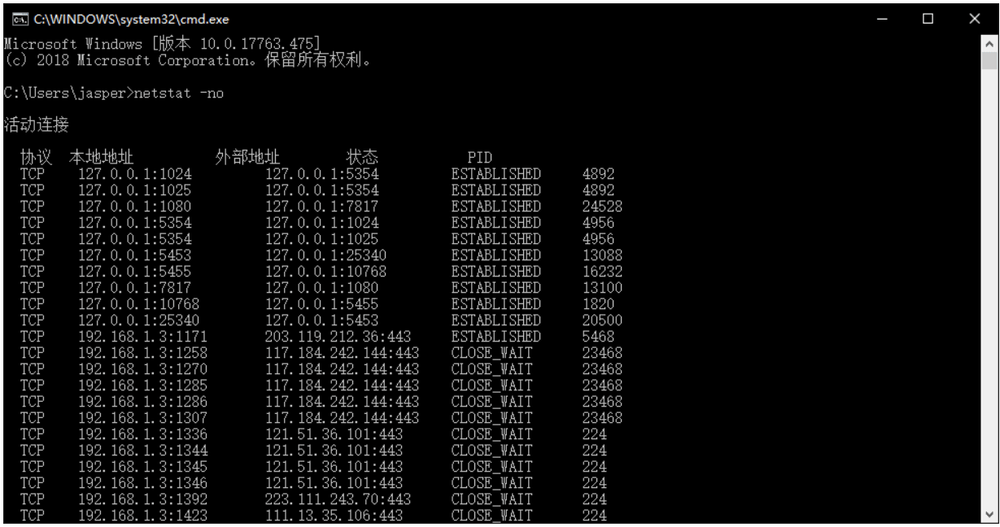
反向解析计算机名 ping -a IP
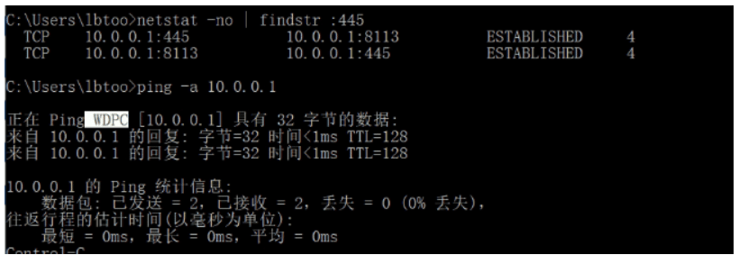
隔断广播域的方式
方法1 添加路由器
路由器上设置安全策略是否允许不同部门设备穿过
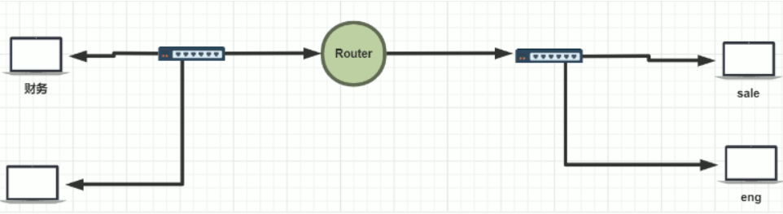
方法2 VLAN技术
在交换机上划分广播域，交换机上不同的口组合VLAN，相当于路由器隔离广播域的效果。
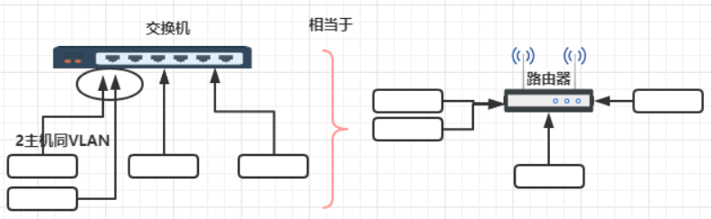
跨VLAN之通信需要添加路由设备 ，不同VLAN有一个口接入路由器，这样会浪
费一些交换端口，所以 后来有了三层交换机 有路由功能
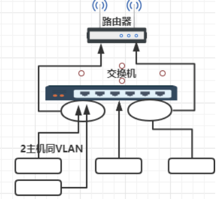
不用物理交换机机间访问，使用trunk协议共用VLAN，在数据链路层中IEEE 802.1Q帧结构标识VLAN VID
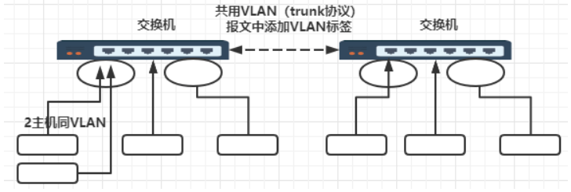
IEEE 802.1Q 帧结构
vlan 技术要修改以太网帧的数据结构，使用 trunk 协议完成。
trunk栈道，2 个交换机用一根网线连起来走公共的 trunk 网络，trunk 接口上 跑trunk 协议IEEE 802.1Q。
vlan 数据占 4 个字节，在目标地址与上层类型之间插入。真正用了 12位，表 示可以划分 2 的 12 次方即 4096 个vlan。但在云环境上不够用，所以现在用 VXLAN
IEEE 802.1Q 帧结构
VLAN 标签各字段含义
TPID：Tag Protocol Identifier（标签协议标识符），2Byte，表示帧类型，取 值为0x8100时表示IEEE 802.1Q的VLAN数据帧。如果不支持802.1Q的设备收到这 样的帧，会将其丢弃，各设备厂商可以自定义该字段的值。当邻居设备将TPID值 配置为非0x8100时，为了能够识别这样的报文，实现互通，必须在本设备上修改 TPID值，确保和邻居设备的TPID值配置一致
PRI：Priority，3bit，表示数据帧的802.1p（是IEEE 802.1Q的扩展协议）优先 级。取值范围为0～7，值越大优先级越高。当网络阻塞时，交换机优先发送优先 级高的数据帧
CFI：Canonical Format Indicator（标准格式指示位），1bit,表示MAC地址在 不同的传输介质中是否以标准格式进行封装，用于兼容以太网和令牌环网。CFI 取值为0表示MAC地址以标准格式进行封装，为1表示以非标准格式封装。在以太 网中，CFI的值为0
VID：VLAN ID，12bit，表示该数据帧所属VLAN的编号。VLAN ID取值范围是0～ 4095。由于0和4095 为协议保留取值，所以VLAN ID的有效取值范围是1～4094
VID表示12个位，也就是能表示交换机能管理4096个vlan，但在复杂的云环境中 不满足需求。解决可以用VXLAN
分层的网络架构
需要网络工程师来搭建
从网络规划角度讲
访问层：主机和网络连起来，即交换机和主机连起来
分布层：路由器功能，VLAN隔开
核心层：高速转发，核心交换机
架构一
汇聚交换机：3层交换机，有路由功能
架构二
TCP/IP 协议栈
TCP/IP 标准
TCP/IP 介绍
Transmission Control Protocol/Internet Protocol传输控制协议/因特网互联 协议 TCP/IP是一个Protocol Stack，包括TCP、IP、UDP、ICMP、RIP、TELNET、 FTP、SMTP、ARP等许多协议
最早发源于1969年美国国防部（缩写为DoD）的因特网的前身ARPA网项目，1983 年1月1日，TCP/IP取代了旧的网络控制协议NCP，成为今天的互联网和局域网的 基石和标准,由互联网工程任务组负责维护。
但局域网在 90 年代初还在 IPX/SPX 协议，是由 NAVELL网络开发的协议， NAVELL 公司用的操作系统是 netware操作系统，当时微软还未成为主流的操作 系统只是在家用pc上用。随着微软的技术更新，推出了针对企业的操作系统如 NT4.0，NT4.0 默认使用了 TCP/IP 协议，用微软的 NT4.0在局域网和互联网都 用的 TCP/IP协议，使得机器间通信非常容易，不需要做协议转换。而早期的局 域网 IPX/SPX协议连接互联网中间要安装网关，通过网关做协议转换才能连互联 网。90年代未期普通都采用了TCP/IP 协议。
Linux 在 1991 年诞生，2000 年后 linux 已经非常强大，服务器使用了 linux 系统并采用了 TCP/IP 协议。
国防高级研究计划局 DRPA 与 BBN 技术公司、斯坦福大学和伦敦大学学院签约， 在多个硬件平台上开发协议的操作版本。在协议开发过程中，数据包路由层的版 本号从版本1 进展到版本 4，后者于 1983 年安装在 ARPANET 中。它被称为互 联网协议版本4 （IPV4）作为协议，仍在互联网使用，连同其目前的继承，互联 网协议版本 6（IPV6）。
TCP/IP 规范-RFC 文档：https://www.ietf.org/rfc/rfc1180.html
TCP/IP 分层
共定义了四层，和OSI参考模型的分层有对应关系
RFC 文档： https://www.ietf.org/rfc/rfc1122#section-1.3.3
RFC 官方分为 四层：
- Application Layer 应用层
- Transport Layer 传输层
- Internet Layer 网络层
- Link Layer 链路层
TCP/IP 应用层
TCP/IP 通信过程
TCP/IP和OSI模型的比较
- 相同点 两者都是以协议栈的概念为基础 协议栈中的协议彼此相互独立 下层对上层提供服务
- 不同点 OSI是先有模型；TCP/IP是先有协议，后有模型 OSI是国际标准，适用于各种协议栈；TCP/IP实际标准，只适用于TCP/IP网络 层次数量不同
transport 层
TCP和UDP
TCP Transmission Control Protocol
TCP特性
- 工作在传输层
- 面向连接协议
- 全双工协议
- 半关闭：4 次挥手过程
- 错误检查
- 将数据打包成段，排序
- 确认机制
- 数据恢复，重传
- 流量控制，滑动窗口：包头中的窗口，可以一次传输多个包，提高效率
- 拥塞控制，慢启动和拥塞避免算法
更多关于tcp的内核参数，可参看man 7 tcp
TCP包头结构
TCP包头
固定部分20字节
- 源端口、目标端口：计算机上的进程要和其他进程通信是要通过计算机端口的， 而一个计算机端口某个时刻只能被一个进程占用，所以通过指定源端口和目标 端口，就可以知道是哪两个进程需要通信。源端口、目标端口是用16位表示的， 可推算计算机的端口个数为2^16个,即65536
- 序列号：表示本报文段所发送数据的第一个字节的编号。在TCP连接中所传送 的字节流的每一个字节都会按顺序编号。由于序列号由32位表示，所以每2^32 个字节，就会出现序列号回绕，再次从0开始
- 确认号：表示接收方期望收到发送方下一个报文段的第一个字节数据的编号。 也就是告诉发送方：我希望你（指发送方）下次发送的数据的第一个字节数据 的编号为此确认号
- 数据偏移：表示TCP报文段的首部长度，共4位，由于TCP首部包含一个长度可 变的选项部分，需要指定这个TCP报文段到底有多长。它指出TCP 报文段的数 据起始处距离 TCP报文段的起始处有多远。该字段的单位是32位(即4个字节为 计算单位），4位二进制最大表示15，所以数据偏移也就是TCP首部最大60字节
- URG：表示本报文段中发送的数据是否包含紧急数据。后面的紧急指针字段 （urgent pointer）只有当URG=1时才有效
- ACK ：表示是否前面确认号字段是否有效。只有当ACK=1时，前面的确认号 字段才有效。TCP规定，连接建立后，ACK必须为1,带ACK标志的TCP报文段称为 确认报文段
- PSH：提示接收端应用程序应该立即从TCP接收缓冲区中读走数据，为接收后续 数据腾出空间。如果为1，则表示对方应当立即把数据提交给上层应用，而不 是缓存起来，如果应用程序不将接收到的数据读走，就会一直停留在TCP接收 缓冲区中
- RST：如果收到一个RST=1的报文，说明与主机的连接出现了严重错误（如主机 崩溃），必须释放连接，然后再重新建立连接。或者说明上次发送给主机的数 据有问题，主机拒绝响应，带RST标志的TCP报文段称为复位报文段
- SYN ：在建立连接时使用，用来同步序号。当SYN=1，ACK=0时，表示这是一 个请求建立连接的报文段；当SYN=1，ACK=1时，表示对方同意建立连接。 SYN=1，说明这是一个请求建立连接或同意建立连接的报文。只有在前两次握 手中SYN才置为1，带SYN标志的TCP报文段称为同步报文段
- FIN ：表示通知对方本端要关闭连接了，标记数据是否发送完毕。如果 FIN=1，即告诉对方："我的数据已经发送完毕，你可以释放连接了"，带FIN标 志的TCP报文段称为结束报文段
- 窗口大小：表示现在允许对方发送的数据量，也就是告诉对方，从本报文段的 确认号开始允许对方发送的数据量，达到此值，需要ACK确认后才能再继续传 送后面数据，由Window size value * Window size scaling factor（此值在 三次握手阶段TCP选项Window scale协商得到）得出此值
- 校验和：提供额外的可靠性
- 紧急指针：标记紧急数据在数据字段中的位置
- 选项部分：其最大长度可根据TCP首部长度进行推算。TCP首部长度用4位表示， 选项部分最长为：(2^4-1)*4-20=40字节
TCP包头常见选项：
最大报文段长度MSS（Maximum Segment Size），通常1460字节
指明自己期望对方发送TCP报文段时那个数据字段的长度。比如：1460字节。 数据字段的长度加上TCP首部的长度才等于整个TCP报文段的长度。MSS不宜设 的太大也不宜设的太小。若选择太小，极端情况下，TCP报文段只含有1字节数 据，在IP层传输的数据报的开销至少有40字节（包括TCP报文段的首部和IP数 据报的首部）。这样，网络的利用率就不会超过1/41。若TCP报文段非常长， 那么在IP层传输时就有可能要分解成多个短数据报片。在终点要把收到的各个 短数据报片装配成原来的TCP报文段。当传输出错时还要进行重传，这些也都 会使开销增大。因此MSS应尽可能大，只要在IP层传输时不需要再分片就行。 在连接建立过程中，双方都把自己能够支持的MSS写入这一字段。MSS只出现在 SYN报文中。即：MSS出现在SYN=1的报文段中
MTU和MSS值的关系：MTU=MSS+IP Header+TCP Header
通信双方最终的MSS值=较小MTU-IP Header-TCP Header
窗口扩大 Window Scale
为了扩大窗口，由于TCP首部的窗口大小字段长度是16位，所以其表示的最大 数是65535。但是随着时延和带宽比较大的通信产生（如卫星通信），需要更 大的窗口来满足性能和吞吐率，所以产生了这个窗口扩大选项
时间戳 Timestamps
可以用来计算RTT(往返时间)，发送方发送TCP报文时，把当前的时间值放入时 间戳字段，接收方收到后发送确认报文时，把这个时间戳字段的值复制到确认 报文中，当发送方收到确认报文后即可计算出RTT。也可以用来防止回绕序号 PAWS，也可以说可以用来区分相同序列号的不同报文。因为序列号用32为表示， 每2^32个序列号就会产生回绕，那么使用时间戳字段就很容易区分相同序列号 的不同报文
man 7 tcp
TCP协议PORT
传输层通过port号，确定应用层协议，范围0-65535
维基百科：https://en.wikipedia.org/wiki/List_of_TCP_and_UDP_port_numbers
IANA互联网数字分配机构负责域名，数字资源，协议分配
0-1023：系统端口或特权端口(仅管理员可用)，众所周知，永久的分配给固定 的系统应用使用，
22/tcp(ssh), 80/tcp(http), 443/tcp(https)
1024-49151：用户端口或注册端口，但要求并不严格，分配给程序注册为某应 用使用，
1433/tcp(SqlServer), 1521/tcp(oracle),3306/tcp(mysql),11211/tcp/udp (memcached)
- 49152-65535：动态或私有端口，客户端随机使用端口，范围定 义：/proc/sys/net/ipv4/ip_local_port_range范例：调整客户端的动态端口范围
范例：linux 列出常用端口号
cat /etc/services
范例：windows 查找端口
tasklist | findstr Xshell # 列出 xshell 进程号 netstat -no | findstr 1476 # 根据进程号查找网络连接
范例：linux 自定义客户端端口范围
[root@centos8 ~]#cat /proc/sys/net/ipv4/ip_local_port_range 32768 60999 [root@centos8 ~]#echo 20000 62000 > /proc/sys/net/ipv4/ip_local_port_range [root@centos8 ~]#cat /proc/sys/net/ipv4/ip_local_port_range 20000 62000 # 常见的服务端口号 # vim /etc/services
范例：nc命令监听端口
[root@centos8 ~]#dnf -y install man-pages [root@centos8 ~]#man 2 socket [root@centos8 ~]#dnf -y install nc #服务器端 [root@centos8 ~]#ss -ntlu # 查看本地监听端口 [root@centos8 ~]#nc -l 22 Ncat: bind to :::22: Address already in use. QUITTING. [root@centos8 ~]#nc -l 9527 #监听 9527端口 I am centos7 I am centos8 #客户端 [root@centos7 ~]#nc 10.0.0.8 9527 I am centos7 I am centos8 #再开一个连接失败 [root@centos7 ~]#nc 10.0.0.8 9527 Ncat: Connection refused. [root@centos8 ~]#ss -nt State Recv-Q Send-Q Local Address:Port Peer Address:Port ESTAB 0 0 10.0.0.8:9527 10.0.0.7:40706 #服务器开启UDP的端口 [root@centos8 ~]#nc -l 7000 -u #客户端连接 [root@centos7 ~]#nc 10.0.0.8 7000 -u [root@centos8 ~]#ss -ntu # 查看端口 [wang@centos8 ~]$nc -l 1023 Ncat: bind to :::1023: Permission denied. QUITTING.
范例：找到端口冲突的应用程序
[root@centos8 ~]#nc -l 22 Ncat: bind to :::22: Address already in use. QUITTING. [root@centos8 ~]#ss -ntlp State Recv-Q Send-Q Local Address:Port Peer Address:Port LISTEN 0 128 0.0.0.0:22 0.0.0.0:* users:(("sshd",pid=699,fd=4)) LISTEN 0 128 [::]:22 [::]:* users:(("sshd",pid=699,fd=6)) [root@centos8 ~]#lsof -i :22 COMMAND PID USER FD TYPE DEVICE SIZE/OFF NODE NAME sshd 699 root 4u IPv4 26846 0t0 TCP *:ssh (LISTEN) sshd 699 root 6u IPv6 26848 0t0 TCP *:ssh (LISTEN) sshd 1287 root 5u IPv4 29875 0t0 TCP centos8.localdomain:ssh- >10.0.0.1:pc-mta-addrmap (ESTABLISHED) sshd 1300 root 5u IPv4 29875 0t0 TCP centos8.localdomain:ssh- >10.0.0.1:pc-mta-addrmap (ESTABLISHED)
范例：判断端口是否正在打开
[root@centos8 ~]#< /dev/tcp/127.0.0.1/80 [root@centos8 ~]#echo $? 0 [root@centos8 ~]#< /dev/tcp/127.0.0.1/8080 -bash: connect: Connection refused -bash: /dev/tcp/127.0.0.1/8080: Connection refused [root@centos8 ~]#echo $? 1
范例：利用重定向模拟浏览器访问网站
[root@centos8 ~]#exec 8<>/dev/tcp/www.baidu.com/80 # 打开本地文件描述符 访问baidu [root@centos8 ~]#ll /proc/$$/fd lrwx------ 1 root root 64 Apr 20 14:14 8 -> 'socket:[32777]' [root@centos8 ~]# ss -nt |grep 80 ESTAB 0 0 10.0.1.86:41430 182.61.200.7:80 [root@centos8 ~]#echo -e 'GET / HTTP/1.1\n' >& 8 # 模拟GET请求 [root@centos8 ~]#cat <& 8 #读取描述内容 上面动作快些，不然这里没有内容
TCP端口号通信过程
TCP序列和确认号
TCP确认和固定窗口
每次都要要确认效率较低，可以固定窗口，多个包确认一次
TCP滑动窗口 窗口大小是经过协商的
三次握手和四次挥手
建立连接
TCP三次握手
tcp的三次握手的过程和必要性（这里假设A是client，B是server）
- 第一次握手：A 发送请求，先把 TCP 包头中标记 SYN 标记为1，数据包的编 号即包头中的序号打上序号，如是第一个包则写成1，即 seq = 1。通俗讲 A 发送 SYN包（SYNC=j）连接请求到达B，并进入SYN_SEND状态，等待服务器B确 认
- 第二次握手：B 回应请求，TCP 包头中标记 SYN 为 1, ACK 为1，请求通信和 确认你来过来的信息，同时数据包的编号 seq = y，包头中确认号为 A 发来 包的序号加 1 即 ack = x + 1 希望下次发 x + 1。通俗讲 B 收到 SYN 包后， 也会发送一个 SYN 包给 A，这个包里面带有ACK=j+1 用来确认 A 的 SYN，和 B 自己的 SYN=k，B 进入 SYN_RECV 状态
- 第三次握手：A 发回应 让 B 确认刚才请求，标记 ACK = 1，包序号 x + 1， 确认号 y + 1。通俗讲 A 收到 B 的 SYN + ACK 包，向 B 发送确认包 ACK（ACK=k+1），发送完毕，A 和 B 进入 ESTABLISHED 状态，完成三次握手
范例：三次握手
#wireshark 抓包分析 (ip.src == 10.0.0.101 and ip.dst == 10.0.0.102) || (ip.dst == 10.0.0.101 and ip.src == 10.0.0.102)
TCP四次挥手
A 完整的断开连接：
- 第一次挥手：A->B，是ESTABLISHED状态；A向B发出释放连接请求的报文，其 中FIN（终止位）= 1，seq（序列号）=u；在A发送完之后，A的TCP客户端进入 FIN-WAIT-1（终止等待1）状态。此时A还是可以进行收数据的
- 第二次挥手：B->A：B在收到A的连接释放请求后，随即向A发送确认报文。其 中ACK=1，seq=v，ack（确认号）= u +1;在B发送完毕后，B的服务器端进入 CLOSE_WAIT（关闭等待）状态。此时A收到这个确认后就进入FIN-WAIT-2（终 止等待2）状态，等待B发出连接释放的请求。此时B还是可以发数据的
B 完整的断开连接：
- 第三次挥手：B->A：当B已经没有要发送的数据时，B就会给A发送一个释放连 接报文，其中FIN=1，ACK=1，seq=w，ack=u+1，在B发送完之后，B进入 LAST-ACK（最后确认）状态。
- 第四次挥手：A->B；当A收到B的释放连接请求时，必须对此发出确认，其中 ACK=1，seq=u+1,ack=w+1;A在发送完毕后，进入到TIME-WAIT（时间等待）状 态。B在收到A的确认之后，进入到CLOSED（关闭）状态。在经过时间等待计时 器设置的时间之后，A才会进入CLOSED状态。
注意：
- 客户端收到服务端断开请求，发送确认；客户端状态变为TIMED_WAIT #完成双 向传输连接关闭，等待所有分组消失 （报文最长时间的2倍）2MSL
- 特殊的状态 CLOSING 客户端向服务端发送了FIN但没有收到服务端的ACK而是 服务端FIN；进入CLOSING状态的接下来的流程和FIN_WAIT 2接下来的流程是一 样的 #双方同时尝试关闭传输连接，等待对方确认
有限状态机 FSM:Finite State Machine
虚线：服务器 实线：客户端
- CLOSED 没有任何连接状态
- LISTEN 侦听状态，等待来自远方TCP端口的连接请求
- SYN-SENT 在发送连接请求后，等待对方确认
- SYN-RECEIVED 在收到和发送一个连接请求后，等待对方确认
- ESTABLISHED 代表传输连接建立，双方进入数据传送状态
- FIN-WAIT-1 主动关闭,主机已发送关闭连接请求，等待对方确认
- FIN-WAIT-2 主动关闭,主机已收到对方关闭传输连接确认，等待对方发送关闭传输连接请求
- TIME-WAIT 完成双向传输连接关闭，等待所有分组消失
- CLOSE-WAIT 被动关闭,收到对方发来的关闭连接请求，并已确认
- LAST-ACK 被动关闭,等待最后一个关闭传输连接确认，并等待所有分组消失
- CLOSING 双方同时尝试关闭传输连接，等待对方确认
客户端先发送一个FIN给服务端，自己进入FIN_WAIT_1状态，这时等待接收服务 端报文，该报文会有三种可能：
- 只有服务端的ACK
- 只有服务端的FIN
- 基于服务端的ACK，又有FIN
1、只收到服务器的ACK，客户端会进入FIN_WAIT_2状态，后续当收到服务端的 FIN时，回应发送一个ACK，会进入到TIME_WAIT状态，这个状态会持续2MSL(TCP 报文段在网络中的最大生存时间, RFC1122标准的建议值是2min).客户端等待 2MSL，是为了当最后一个ACK丢失时，可以再发送一次。因为服务端在等待超时 后会再发送一个FIN给客户端，进而客户端知道ACK已丢失
2、只有服务端的FIN时，回应一个ACK给服务端，进入CLOSING状态，然后接收到 服务端的ACK时，进入TIME_WAIT状态
3、同时收到服务端的ACK和FIN，直接进入TIME_WAIT状态
客户端的典型状态转移
客户端通过connect系统调用主动与服务器建立连接connect系统调用首先给服务 器发送一个同步报文段，使连接转移到SYN_SENT状态
此后connect系统调用可能因为如下两个原因失败返回：
1、如果connect连接的目标端口不存在（未被任何进程监听），或者该端口仍被 处于TIME_WAIT状态的连接所占用，则服务器将给客户端发送一个复位报文段， connect调用失败。
2、如果目标端口存在，但connect在超时时间内未收到服务器的确认报文段，则 connect调用失败。connect调用失败将使连接立即返回到初始的CLOSED状态。如 果客户端成功收到服务器的同步报文段和确认，则connect调用成功返回，连接 转移至ESTABLISHED状态
当客户端执行主动关闭时，它将向服务器发送一个结束报文段，同时连接进入 FIN_WAIT_1状态。若此时客户端收到服务器专门用于确认目的的确认报文段，则 连接转移至FIN_WAIT_2状态。当客户端处于FIN_WAIT_2状态时，服务器处于 CLOSE_WAIT状态，这一对状态是可能发生半关闭的状态。此时如果服务器也关闭 连接（发送结束报文段），则客户端将给予确认并进入TIME_WAIT状态客户端从 FIN_WAIT_1状态可能直接进入TIME_WAIT状态（不经过FIN_WAIT_2状态），前提 是处于FIN_WAIT_1状态的服务器直接收到带确认信息的结束报文段（而不是先收 到确认报文段，再收到结束报文段）
处于FIN_WAIT_2状态的客户端需要等待服务器发送结束报文段，才能转移至 TIME_WAIT状态，否则它将一直停留在这个状态。如果不是为了在半关闭状态下 继续接收数据，连接长时间地停留在FIN_WAIT_2状态并无益处。连接停留在 FIN_WAIT_2状态的情况可能发生在：客户端执行半关闭后，未等服务器关闭连接 就强行退出了。此时客户端连接由内核来接管，可称之为孤儿连接（和孤儿进程 类似）
Linux为了防止孤儿连接长时间存留在内核中，定义了两个内核参数：
- /proc/sys/net/ipv4/tcp_max_orphans 指定内核能接管的孤儿连接数目
- /proc/sys/net/ipv4/tcp_fin_timeout 指定孤儿连接在内核中生存的时间
客户机端的三次握手和四次挥手状态转换
服务器端的三次握手和四次挥手状态转换
sync半连接和accept全连接队列
三次握手中的第一次握手后对方还没回来第 2 第 3个握手之前的状态，没完全 建立连接请求放入队列中，队列的最大值是有限制的。
/proc/sys/net/ipv4/tcp_max_syn_backlog #未完成连接队列大小，默认值128,建议调整大小为1024以上 /proc/sys/net/core/somaxconn #完成连接队列大小，默认值128,建议调整大小为1024以上
bind()函数监听本地端口
三次握手中syn_sent (client)–> syn_rcvd(server) –>established(client)
过程半连接， 半连接队列 记录 再到established(server)全连接，从半连接
队列中删除，进入 全连接队列
范例： 单边连接导致交易超时
1、分析单边连接产生的原因
TCP建立连接三次握手的过程中，若全连接队列满，将导致单边连接。
全连接队列大小由系统参数 net.core.somaxconn 及 listen(somaxconn,backlog)的 backlog 取最小值决定。somaxconn 是 Linux 内核的参数，默认值是128；backlog 在创建 Socket 时设置，Dubbo2.5.9 中默 认 backlog 值是50。因此，生产环境全连接队列是 50。通过 ss 命令（Socket Statistics)也查得全连接队列大小为 50。
ss -tnp State Recv-Q Send-Q Local Address:Port Peer Address:Port ESTAB 0 50 10.0.3.205:22 10.16.202.178:53982users:(("xx",pid=33493,fd=3),("xx",pid=33491,fd=3))
观察 TCP 连接队列情况，证实存在全连接队列溢出的现象。
即：全连接队列容量不足导致大量单边连接产生。因在本验证场景下，订阅提供 方的消费方数量过多，当提供方重启后，注册中心向消费方推送提供方上线通知， 所有消费方几乎同时与提供方重建连接，导致全连接队列溢出。
2、分析单边连接影响范围
单边连接影响范围多为消费方首笔交易，偶发为首笔开始连续失败 2-3 笔。
TCP超时重传
异常网络状况下（开始出现超时或丢包），TCP控制数据传输以保证其承诺的可 靠服务TCP服务必须能够重传超时时间内未收到确认的TCP报文段。为此，TCP模 块为每个TCP报文段都维护一个重传定时器，该定时器在TCP报文段第一次被发送 时启动。如果超时时间内未收到接收方的应答，TCP模块将重传TCP报文段并重置 定时器。至于下次重传的超时时间如何选择，以及最多执行多少次重传，就是 TCP的重传策略
与TCP超时重传相关的两个内核参数：
- /proc/sys/net/ipv4/tcp_retries1，指定在底层IP接管之前TCP最少执行的重 传次数，默认值是3
- /proc/sys/net/ipv4/tcp_retries2，指定连接放弃前TCP最多可以执行的重传 次数，默认值15（一般对应13～30min）
拥塞控制
网络中的带宽、交换结点中的缓存和处理机等，都是网络的资源。在某段时间， 若对网络中某一资源的需求超过了该资源所能提供的可承受的能力，网络的性能 就会变坏。此情况称为拥塞
TCP为提高网络利用率，降低丢包率，并保证网络资源对每条数据流的公平性。 即所谓的拥塞控制
TCP拥塞控制的标准文档是RFC 5681，其中详细介绍了拥塞控制的四个部分：慢 启动（slow start）、拥塞避免（congestion avoidance）、快速重传（fast retransmit）和快速恢复（fast recovery）。拥塞控制算法在Linux下有多种实 现，比如reno算法、vegas算法和cubic算法等。它们或者部分或者全部实现了上 述四个部分
当前所使用的拥塞控制算法 /proc/sys/net/ipv4/tcp_congestion_control
内核TCP参数优化
参看帮助： man tcp
编辑文件/etc/sysctl.conf，加入以下内容：然后执行 sysctl -p 让参数生效。
net.ipv4.tcp_fin_timeout = 2 net.ipv4.tcp_tw_reuse = 1 net.ipv4.tcp_tw_recycle = 1 net.ipv4.tcp_syncookies = 1 net.ipv4.tcp_keepalive_time = 600 net.ipv4.ip_local_port_range = 2000 65000 net.ipv4.tcp_max_syn_backlog = 16384 net.ipv4.tcp_max_tw_buckets = 36000 net.ipv4.route.gc_timeout = 100 net.ipv4.tcp_syn_retries = 1 net.ipv4.tcp_synack_retries = 1 net.ipv4.tcp_max_orphans = 16384 net.core.somaxconn = 16384 net.core.netdev_max_backlog = 16384
作用说明：
- net.ipv4.tcp_fin_timeout 表示套接字由本端要求关闭，这个参数决定了它保持在FIN-WAIT-2状态的时间，默认值是60秒。 该参数对应系统路径为：/proc/sys/net/ipv4/tcp_fin_timeout 60
- net.ipv4.tcp_tw_reuse 表示开启重用。允许将TIME-WAIT sockets重新用于新的TCP连接，默认值为0，表示关闭。 该参数对应系统路径为：/proc/sys/net/ipv4/tcp_tw_reuse 0
- net.ipv4.tcp_tw_recycle 表示开启TCP连接中TIME-WAIT sockets的快速回收。 该参数对应系统路径为：/proc/sys/net/ipv4/tcp_tw_recycle，默认为0，表示关闭。 提示：reuse和recycle这两个参数是为防止生产环境下Web、Squid等业务服务器time_wait网络状态数量过多设置的。
- net.ipv4.tcp_syncookies 表示开启SYN Cookies功能。当出现SYN等待队列溢出时，启用Cookies来处理，可防范少量SYN攻击，这个参数也可以不添加。 该参数对应系统路径为：/proc/sys/net/ipv4/tcp_syncookies,默认值为1
- net.ipv4.tcp_keepalive_time 表示当keepalive启用时，TCP发送keepalive消息的频度。默认是2小时，建议改为10分钟。 该参数对应系统路径为：/proc/sys/net/ipv4/tcp_keepalive_time,默认为7200秒。
- net.ipv4.ip_local_port_range 该选项用来设定允许系统打开的端口范围，即用于向外连接的端口范围。 该参数对应系统路径为：/proc/sys/net/ipv4/ip_local_port_range 32768 61000
- net.ipv4.tcp_max_syn_backlog 表示SYN队列的长度，即半连接队列长度，默认为1024，建议加大队列的长度为8192或更多，这样可以容纳更多等待连接的网络连接数。 该参数为服务器端用于记录那些尚未收到客户端确认信息的连接请求最大值。 该参数对象系统路径为：/proc/sys/net/ipv4/tcp_max_syn_backlog
- net.ipv4.tcp_max_tw_buckets 表示系统同时保持TIME_WAIT套接字的最大数量，如果超过这个数值，TIME_WAIT套接字将立刻被清除并打印警告信息。 默认为180000，对于Apache、Nginx等服务器来说可以将其调低一点，如改为5000~30000，不通业务的服务器也可以给大一点，比如LVS、Squid。 此项参数可以控制TIME_WAIT套接字的最大数量，避免Squid服务器被大量的TIME_WAIT套接字拖死。 该参数对应系统路径为：/proc/sys/net/ipv4/tcp_max_tw_buckets
- net.ipv4.tcp_synack_retries 参数的值决定了内核放弃连接之前发送SYN+ACK包的数量。 该参数 对应系统路径为：/proc/sys/net/ipv4/tcp_synack_retries,默认值为5
- net.ipv4.tcp_syn_retries 表示在内核放弃建立连接之前发送SYN包的数量。 该参数对应系统路径为：/proc/sys/net/ipv4/tcp_syn_retries,默认值为6
- net.ipv4.tcp_max_orphans 用于设定系统中最多有多少个TCP套接字不被关联到任何一个用户文件句柄上。 如果超过这个数值，孤立连接将被立即被复位并打印出警告信息。 这个限制只有为了防止简单的DoS攻击。不能过分依靠这个限制甚至认为减少这个值，更多的情况是增加这个值。该参数对应系统路径为：/proc/sys/net/ipv4/tcp_max_orphans ，默认值8192
- net.core.somaxconn 同时发起的TCP的最大连接数，即全连接队列长度，在高并发请求中，可能会导致链接超时或重传，一般结合并发请求数来调大此值。 该参数对应系统路径为：/proc/sys/net/core/somaxconn ，默认值是128
- net.core.netdev_max_backlog 表示当每个网络接口接收数据包的速率比内核处理这些包的速率快时，允许发送到队列的数据包最大数。 该参数对应系统路径为：/proc/sys/net/core/netdev_max_backlog，默认值为1000
UDP User Datagram Protocol
UDP特性
- 工作在传输层
- 提供不可靠的网络访问
- 非面向连接协议
- 有限的错误检查
- 传输性能高
- 无数据恢复特性
更多关于udp的内核参数，可参看man 7 udp
UDP包头
PS: TCP 和 UDP 协议是独立的，所以可以有相同的端口号。
Internet层
Internet Control Message Protocol(ICMP)
范例: 利用icmp协议判断网络状态
# ping 223.5.5.5 PING 223.5.5.5 (223.5.5.5) 56(84) bytes of data. 64 bytes from 223.5.5.5: icmp_seq=1 ttl=115 time=6.33 ms 64 bytes from 223.5.5.5: icmp_seq=2 ttl=115 time=6.25 ms 64 bytes from 223.5.5.5: icmp_seq=3 ttl=115 time=6.20 ms 64 bytes from 223.5.5.5: icmp_seq=4 ttl=115 time=6.15 ms 64 bytes from 223.5.5.5: icmp_seq=5 ttl=115 time=5.50 ms ^C --- 223.5.5.5 ping statistics --- 5 packets transmitted, 5 received, 0% packet loss, time 4003ms rtt min/avg/max/mdev = 5.502/6.090/6.334/0.303 ms #对方主机无法连接 [root@centos7 ~]#ping 10.0.0.81 PING 10.0.0.81 (10.0.0.81) 56(84) bytes of data. From 10.0.0.7 icmp_seq=1 Destination Host Unreachable From 10.0.0.7 icmp_seq=2 Destination Host Unreachable #目标端口不可达，可能是防火墙原因 [root@centos7 ~]#ping 10.0.0.8 PING 10.0.0.8 (10.0.0.8) 56(84) bytes of data. From 10.0.0.8 icmp_seq=1 Destination Port Unreachable From 10.0.0.8 icmp_seq=2 Destination Port Unreachable #名称服务未知，可能是 dns 解析问题 [root@centos8 ~]#ping www.you.org ping: www.you.org: Name or service not known #默认 ICMP 数据报文包的大小为 64 个字节，可以指定大小，最大 65507。 #但以太网数据帧的大小为 46-1500 位，设置 65507 会把它切成小包 [root@centos8 ~]#ping -s 65508 10.0.0.8 Error: packet size 65508 is too large. Maximum is 65507 #-f flood 实现网络的攻击 [root@centos8 ~]#ping -s 65507 -f 10.0.0.8 # 最大发送65507 字节的包 -f 尽CPU所能 PING 172.16.21.111 (172.16.21.111) 65507(65535) bytes of data. ........................................................ 64 bytes from： 从对方主机回应的64字节的报文 icmp_seq：icmp编号，顺序累加 ttl=64： 数据包的生存时间，你可以去改它，有的系统是256有的是128有的是64也有32的，当一个数据包经过一个路由的时候这个时间就会减一，当TTL＝1的时候数据包还没有到达目的地的时候，数据包就会被丢弃了 time=0.307 ms： 回应报文花费时间 rtt min/avg/max/mdev：一般关注平均值
type类型 0是请求报文，8是回应报文
Address Resolution Protocol(ARP)
ARP
ARP 地址解析协议由互联网工程任务组（IETF）在1982年11月发布的RFC 826中描述制定，是根据IP地址获取物理地址的一个TCP/IP协议。
主机发送信息时将包含目标IP地址的ARP请求广播到局域网络上的所有主机，并 接收返回消息，以此确定目标的物理地址；收到返回消息后将该IP地址和物理地 址存入本机ARP缓存中并保留一定时间，下次请求时直接查询ARP缓存以节约资源。 地址解析协议是建立在网络中各个主机互相信任的基础上的，局域网络上的主机 可以自主发送ARP应答消息，其他主机收到应答报文时不会检测该报文的真实性 就会将其记入本机ARP缓存
同网段的ARP
跨网段的ARP
范例：ARP 表
[root@you ~]#ip neigh 192.168.1.110 dev eth0 lladdr 60:02:b4:e3:8a:c0 STALE 192.168.1.156 dev eth0 lladdr 50:01:d9:8a:1d:3f STALE 192.168.1.114 dev eth0 lladdr 40:8d:5c:e1:97:34 STALE 192.168.1.118 dev eth0 lladdr 94:65:2d:38:44:82 STALE [root@you ~]#arp -n Address HWtype HWaddress Flags Mask Iface 192.168.1.110 ether 60:02:b4:e3:8a:c0 C eth0 192.168.1.156 ether 50:01:d9:8a:1d:3f C eth0 192.168.1.114 ether 40:8d:5c:e1:97:34 C eth0 192.168.1.118 ether 94:65:2d:38:44:82 C eth0
范例：分析 arp 数据
# tcpdump -i eth0 arp -nn tcpdump: verbose output suppressed, use -v or -vv for full protocol decode listening on eth0, link-type EN10MB (Ethernet), capture size 262144 bytes 11:44:53.836190 ARP, Request who-has 169.254.128.8 tell 10.0.4.12, length 28 11:44:53.836246 ARP, Reply 169.254.128.8 is-at fe:ee:8f:bf:86:99, length 28
范例：ARP静态绑定可以防止ARP欺骗
[root@centos8 ~]#arp -s 10.0.0.6 00:0c:29:32:80:38 [root@centos8 ~]#arp -n Address HWtype HWaddress Flags Mask Iface 10.0.0.6 ether 00:0c:29:32:80:38 CM eth0 10.0.0.7 ether 00:0c:29:32:80:38 C eth0 10.0.0.1 ether 00:50:56:c0:00:08 C eth0
范例：kali 系统实现 arp 欺骗上网流量劫持
#启动路由转发功能,转发数据报文 [root@kali ~]# echo 1 > /proc/sys/net/ipv4/ip_forward #安装包 [root@kali ~]# apt-get install dsniff #欺骗目标主机，本机是网关 [root@kali ~]# arpspoof -i eth0 -t 被劫持的目标主机IP 网关IP #欺骗网关，本机是目标主机 [root@kali ~]# arpspoof -i eth0 -t 网关IP 被劫持的目标主机IP
Gratuitous ARP
Gratuitous ARP也称为免费ARP，无故ARP。Gratuitous ARP不同于一般的ARP请 求，它并非期待得到ip对应的mac地址，而是当主机启动的时候，将发送一个 Gratuitous arp请求，即请求自己的ip地址的mac地址
免费ARP可以有两个方面的作用：
- 验证IP是否冲突：一个主机可以通过它来确定另一个主机是否设置了相同的 IP地址
- 更换物理网卡：如果发送ARP的主机正好改变了物理地址（如更换物理网卡）， 可以使用此方法通知网络中其它主机及时更新ARP缓存
Reverse Address Resolution Protocol(RARP)
RARP 即将MAC转换成IP
Internet Protocol(IP)
Internet 协议特征
- 运行于 OSI 网络层
- 面向无连接的协议
- 独立处理数据包
- 分层编址
- 尽力而为传输
- 无数据恢复功能
IP PDU 报头
IP PDU 报头格式
固定部分20字节，可变长部分不超过40字节
- 版本:占4位,指 IP 协议的版本目前的IP协议版本号为4，6版本将为主流
首部长度:占4位,可表示的最大数值是15个单位，一个单位为4字节，因此IP的 首部长度的最大值是60字节
区分服务:占8位,用来获得更好的服务,在旧标准中叫做服务类型,但实际上一 直未被使用过.后改名为区分服务.只有在使用区分服务(DiffServ)时,这个字 段才起作用.一般的情况下不使用
- 总长度:占16位,指首部和数据之和的长度,单位为字节,因此数据报的最大长度 为65535 字节.总长度必须不超过最大传送单元 MTU
- 标识:占16位,它是一个计数器,通常，每发送一个报文，该值会加1， 也用于数据包分片，在同一个包的若干分片中，该值是相同的
标志(flag):占3位,目前只有后两位有意义
DF： Don't Fragment中间的一位，只有当 DF=0 时才允许分片
MF： More Fragment最后一位，MF=1表示后面还有分片,MF=0 表示最后一个分 片 IP PDU 报头
- 片偏移:占13位,指较长的分组在分片后，该分片在原分组中的相对位置.片偏 移以8个字节为偏移单位
- 生存时间:占8位,记为TTL (Time To Live)数据报在网络中可通过的路由器数 的最大值,TTL 字段是由发送端初始设置一个8 bit字段.推荐的初始值由分配 数字 RFC 指定,当前值为 64.发送 ICMP回显应答时经常把 TTL 设为最大值 255
- 协议:占8位,指出此数据报携带的数据使用何种协议以便目的主机的IP层将数 据部分上交给哪个处理过程, 1表示为 ICMP 协议, 2表示为 IGMP 协议, 6表 示为 TCP 协议, 17表示为 UDP协议
- 首部检验和:占16位,只检验数据报的首部不检验数据部分.这里不采用 CRC检 验码而采用简单的计算方法
- 源地址和目的地址:都各占4字节,分别记录源地址和目的地址
经过路由器数=初始值 - TTL
C:\Users\jasper>ping www.whitehouse.gov 正在 Ping e4036.dscb.akamaiedge.net [23.195.194.51] 具有 32 字节的数据: 来自 23.195.194.51 的回复: 字节=32 时间=211ms TTL=49 C:\Users\jasper>tracert -d www.whitehouse.gov 通过最多 30 个跃点跟踪 到 e4036.dscb.akamaiedge.net [23.195.194.51] 的路由: 1 1 ms 1 ms 1 ms 192.168.1.1 2 3 ms 3 ms 3 ms 10.39.128.1 3 8 ms 5 ms 5 ms 211.136.88.141 4 6 ms 5 ms 5 ms 221.179.171.41 5 * 6 ms 6 ms 111.24.3.13 6 7 ms 7 ms 7 ms 111.24.2.250 7 10 ms 8 ms 9 ms 221.176.21.190 8 24 ms 126 ms 12 ms 221.183.52.1 9 94 ms 21 ms 20 ms 221.183.55.113 10 154 ms 125 ms 40 ms 223.120.22.22 11 168 ms 60 ms * 223.120.2.13 12 * 54 ms * 223.120.2.42 13 53 ms 51 ms 51 ms 223.120.2.118 14 45 ms 45 ms 54 ms 134.159.128.213 15 53 ms * * 202.84.157.38 16 240 ms 228 ms 230 ms 202.84.157.38 17 * * 222 ms 202.84.143.41 18 * 328 ms * 210.57.59.66 19 212 ms 212 ms 211 ms 23.195.194.51 跟踪完成。
范例：发现IP冲突的主机
[root@centos8 ~]#arping 10.0.0.6 ARPING 10.0.0.6 from 10.0.0.8 eth0 Unicast reply from 10.0.0.6 [00:0C:29:E0:2F:37] 0.779ms Unicast reply from 10.0.0.6 [00:0C:29:32:80:38] 0.798ms Unicast reply from 10.0.0.6 [00:0C:29:32:80:38] 0.926ms Unicast reply from 10.0.0.6 [00:0C:29:32:80:38] 0.864ms ^CSent 3 probes (1 broadcast(s)) Received 4 response(s)
范例：禁用 ipv6
#默认启动了 ipv6 # ip a 1: lo: <LOOPBACK,UP,LOWER_UP> mtu 65536 qdisc noqueue state UNKNOWN group default qlen 1000 link/loopback 00:00:00:00:00:00 brd 00:00:00:00:00:00 inet 127.0.0.1/8 scope host lo valid_lft forever preferred_lft forever inet6 ::1/128 scope host valid_lft forever preferred_lft forever 2: eth0: <BROADCAST,MULTICAST,UP,LOWER_UP> mtu 1500 qdisc mq state UP group default qlen 1000 link/ether 52:54:00:17:75:51 brd ff:ff:ff:ff:ff:ff inet 10.0.4.12/22 brd 10.0.7.255 scope global eth0 valid_lft forever preferred_lft forever inet6 fe80::5054:ff:fe17:7551/64 scope link valid_lft forever preferred_lft forever #修改内核配置 #vim /etc/sysctl.conf #加下面 2 行 net.ipv6.conf.all.disable_ipv6 = 1 net.ipv6.conf.default.disable_ipv6 = 1 #sysctl -p #查看ip # ip a 1: lo: <LOOPBACK,UP,LOWER_UP> mtu 65536 qdisc noqueue state UNKNOWN group default qlen 1000 link/loopback 00:00:00:00:00:00 brd 00:00:00:00:00:00 inet 127.0.0.1/8 scope host lo valid_lft forever preferred_lft forever 2: eth0: <BROADCAST,MULTICAST,UP,LOWER_UP> mtu 1500 qdisc mq state UP group default qlen 1000 link/ether 52:54:00:17:75:51 brd ff:ff:ff:ff:ff:ff inet 10.0.4.12/22 brd 10.0.7.255 scope global eth0 #注意禁用 ipv6 可能会影响一些服务的启动，如ssh, postfix, mysql等 # vim /etc/ssh/sshd_config #AddressFamily any # 此行改为下面行 AddressFamily inet #systemctl restart sshd #vim /etc/postfix/main.cf #inet-interfaces = localhost # 此行改为下面 inet-interfaces = 127.0.0.1 #systemctl restart postfix
主机到主机的包传递完整过程
思科官方图解
左边A：192.168.3.1 与 右边B: 192.168.3.2进行网络通信 http服务
1.A业务层与应用层发消息要与B建立可靠连接(程序里写明使用TCP连接)。发送 数据报文给B，与B建立TCP 3次握手。完整的报文中不清楚的是B的MAC地址
2.拿到B的MAC地址：网络层找到B的MAC
3.拿到B的MAC地址：网络层ARP缓存找B的MAC，没有则ARP广播
4.拿到B的MAC地址：网络层ARP广播，我是A192.168.3.1谁是B 192.168.3.2
5.拿到B的MAC地址：网络层ARP广播，所有的计算机都会收到
6.拿到B的MAC地址：网络层ARP广播，B收到广播，学习到A的地址和对应MAC，写 到自己的ARP缓存中
7.拿到B的MAC地址：B收到广播，回应
8.拿到B的MAC地址：B收到广播，回应，发送自己的ARP响应报文
9.拿到B的MAC地址：B收到广播，回应，发送自己的ARP响应报文，自己的MAC地址和IP地址
10.拿到B的MAC地址：A收到B的ARP回应报文
11.拿到B的MAC地址：A收到B的ARP回应报文，从中拿到B的MAC地址，整个数据报文信息就能补全了。
12.A与B三次握手：第一次，A SYN
13.A与B三次握手：第二次，B 回应 SYN ACK
14.A与B三次握手：第三次，A收到B报文，解报文得到B的SYN ACK
15.A与B三次握手：第三次，A返回给B，A 自己的 ACK
16.A与B数据通信：开始数据通信
17.A与B数据通信：A封闭数据报文发送给B
17.A与B数据通信：B拆数据报文得到数据data
18.A与B数据通信：B回应报文给A
ARP之前，需要判断路由，判断IP是否在自己网段。
2个主机程序进行通信
1. 知道对方IP，可能是直接或间接方式 2. 是否在同一个网段？路由？ 在同一网段直接ARP找到对方MAC，不在同一网段将利用路由器找到对方MAC 3. ARP IP --MAC 4. 三次握手(TCP) 5. 通信
IP地址
IP地址组成
它们可唯一标识 IP 网络中的每台设备，每台主机（计算机、网络设备、外围设 备）必须具有唯一的地址
IP地址由两部分组成
- 网络ID：标识网络，每个网段分配一个网络ID，处于高位
- 主机 ID：标识单个主机，由组织分配给各设备，处于低位
IPv4地址格式：点分十进制记法
IP地址分类
- A类
0 0000000 - 0 1111111.X.Y.Z : 0-127.X.Y.Z
网络 ID位是最高8位，最高位为 0，可变的只有 7 位，主机 ID 是 24 位低位
网络数：126=2^7-2 即 2^ 可变是的网络ID位数 -(0 和 127 不能要)
每个网络中的主机数：2^24-2=16777214 即 2^主机 id 的位数 - (全为 0的 网络地址和 全为 1 的广播地址)
默认子网掩码：255.0.0.0
私网地址：10.0.0.0
范例:114.114.114.114,8.8.8.8,1.1.1.1，58.87.87.99，119.29.29.29
- B类
10 000000 - 10 111111.X.Y.Z：128-191.X.Y.Z
网络ID位是最高16位,主机ID是16位低位
网络数：2^14=16384
每个网络中的主机数：2^16-2=65534
默认子网掩码：255.255.0.0
私网地址：172.16.0.0-172.31.0.0
范例:180.76.76.76，172.16.0.1
- C类
110 0 0000 - 110 1 1111.X.Y.Z: 192-223.X.Y.Z
网络ID位是最高24位,主机ID是8位低位
网络数：2^21=2097152
每个网络中的主机数：2^8-2=254
默认子网掩码：255.255.255.0
私网地址：192.168.0.0-192.168.255.0
范例: 223.6.6.6
- D类
- 组（多）播，1110 0000 - 1110 1111.X.Y.Z: 224-239.X.Y.Z
- E类
- 保留未使用，240-255
公式： 网段数：2^可变网络ID的位数 主机数：2^主机ID的位数-2=2^(32-网络ID的位数) 1-126 A 128-191 B 192-223 C
上面分类的方式太僵化，之后出现了无类分配方式
无类分配方式：IP地址主机ID的位数、网络ID的位数可以根据生产需要分配
公共和私有IP地址
私有IP地址：不直接用于互联网，通常在局域网中使用
- A 类私有 IP 地址：10.0.0.0 到 10.255.255.255
- B 类私有 IP 地址：172.16.0.0 到 172.31.255.255
- C 类私有 IP 地址：192.168.0.0 到 192.168.255.255
公共IP地址：互联网上设备拥有的唯一地址
- A 类公共 IP 地址：1.0.0.0 到 9.255.255.255 、11.0.0.0 到 126.255.255.255
- B 类公共 IP 地址：128.0.0.0 到 172.15.255.255、172.32.0.0 到 191.255.255.255
- C 类公共 IP 地址：192.0.0.0 到 192.167.255.255、192.169.0.0 到 223.255.255.255
范例：网卡地址从32位变10进制，一样能ping通
ping 10.0.0.7 echo 'ibase=2; 1010000000000000000000000111' |bc # 167772167 ping ping 可以通
特殊地址
0.0.0.0
0.0.0.0不是一个真正意义上的IP地址。它表示所有不清楚的主机和目的网络
255.255.255.255
限制广播地址。对本机来说，这个地址指本网段内(同一广播域)的所有主机
127.0.0.1～127.255.255.254
本机回环地址，主要用于测试。在传输介质上永远不应该出现目的地址 为”127.0.0.1”的数据包
224.0.0.0到239.255.255.255
组播地址，224.0.0.1特指所有主机，224.0.0.2特指所有路由器。224.0.0.5 指OSPF路由器，地址多用于一些特定的程序以及多媒体程序
169.254.x.x
如果Windows主机使用了DHCP自动分配IP地址，而又无法从DHCP服务器获取地 址，系统会为主机分配这样地址
保留地址
范例: 172.16.0.0 网络中的两个地址:172.16.0.0 172.16.255.255
子网掩码
CIDR：无类域间路由，目前的网络已不再按A，B，C类划分网段，可以任意指定网段的范围
CIDR 无类域间路由表示法：IP/网络ID位数，如：172.16.0.100/16
netmask子网掩码：32位或128位（IPv6）的数字，和IP成对使用，用来确认IP地 址中的网络ID和主机ID，对应网络ID的位为1，对应主机ID的位为0,范 例:255.255.255.0，表现为连续的高位为1，连续的低位为0
子网掩码的八位
00000000 0 10000000 128 11000000 192 11100000 224 11110000 240 11111000 248 11111100 252 11111110 254 11111111 255
相关公式：
如：子网掩码为 255.240.0.0
网络 ID: 找全为 1 的，255 是 8 位， 240 是 4 位， 共 12 bit
主机 ID：32 - 12（网络 ID） = 20 bit
主机数：2^主机 ID 的位数 - 2 = 2^(32-网络ID的位数) - 2 2^20
CIDR 无类域间路由表示法：IP/网络ID位数，IP/12
1. 主机数＝ 2^主机ID位数-2 =2^(32-网络ID的位数)-2 2. 网络数=2^网络ID中可变的位数 3. 网络ID=IP与netmask # 可以用来判断当前主机在哪个网段，和0相与为0，和1相与为原值
二进制和十进制转换 2^0=1=1 2^1=2=10 2^3=8=1000 2^4=16=10000 2^5=32 2^6=64 2^7=128=10000000 2^8=256=100000000 2^9=512 2^10=1024 2^11=2048 2^12=4096
范例：一个主机：203.101.123.163/28
1. netmask: 255.255.255.11110000 即 255.255.255.240 2. 主机数：2^(32-网络ID的位数) 即 2^(32 - 28) - 2 3. IP 范围： 163 = 128 + 32 + 2 + 1 = 1010 0011 根据 netmask 前 28 位为网络 ID echo 'obase=2;163' |bc # 163的二进制 10100011 网络ID 203.101.123.1010 0000 即 203.101.123.160 主机ID 0000 最小 ip 203.101.123.1010 0001 即 203.101.123.161 最大 ip 203.101.123.1010 1110 即 203.101.123.(160+(2^3+2^+2^1)) 203.101.123.174
判断对方主机是否在同一个网段：
用自已的子网掩码分别和自已的IP及对方的IP相与，比较结果，相同则同一网络， 不同则不同网段
范例: netmask: 255.255.224.0,网络ID位:19 主机ID位:13,主机数=2^13-2=8190
范例：判断A和B是否在网一个网段?
A: 192.168.1.100 netmask:255.255.255.0
B: 192.168.2.100 netmask:255.255.0.0
假设A要和B通信，A知道自己的IP和子网掩码，知道B的IP，不清楚B的子网掩码 A: 192.168.1.100 A的netmask:255.255.255.0 网络ID：192.168.1.0 B: 192.168.2.100 A的netmask:255.255.255.0 网络ID：192.168.2.0 A-->B 1. A网络ID 192.168.1 ^ 24 11000000.10101000.00000001.01100000 11111111.11111111.11111111.00000000 A的netmask 相与 192.168.1.0 2. B网络ID 192.168.2 ^ 24 11000000.10101000.00000010.01100000 11111111.11111111.11111111.00000000 A的netmask 相与 192.168.1.0 3. AB网络比较，A用自己的子网掩码计算，不同则不同网段。A在网络通讯时认为B不可到达，刚放弃ARP，直接走网关 B-->A 假设B访问A，计算后B认为A和自己是同一网段。B会发送ARP请求
划分子网
划分子网：将一个大的网络（主机数多，主机 ID位多）划分成多个小的网络 （主机数少，主机 ID 位少），网络ID位数变多，网络ID 位向主机 ID 位借 N 位，将划分成 2^N 个子网。
可变长度子网掩码
Subnet地址
范例：
中国移动10.0.0.0/8， 给32个各省公司划分对应的子网 公式： 一个网络的最多的主机数：2^主机ID位数-2=2^(32-网络ID的位数) 网络（段）数：2^网络ID中可变的位数 网络ID：IP与netmask # 可以用来判断当前主机在哪个网段，和0相与为0，和1相与为原值 划分子网：将大网分成若干个小网，网络ID向主机ID借N位，将划分为2^N次方个子网 1）每个省公司的子网的netmask？ 2^5>=32 借5位网络ID 8+5=13 255.11111000.0.0 255.248.0.0 2)每个省公司的子网的主机数有多少？ 2^(32-13)-2=524286 3）河南省得到第10个子网，网络ID？ 10.00000 000.0.0/13 10.01001 000.0.0/13 # 第10个子网 网络ID+9 10.72.0.0/13 4）河南省得到第10个子网的最小IP和最大的IP？ 10.01001 000.0.1 10.01001 111.11111111.11111110 10.72.0.1---10.79.255.254 5）所有子网中最大，最小的子网的netid？ 10.00000 000.0.0/13 10.0.0.0/13 10.11111 000.0.0/13 10.248.0.0/13
范例：
中国移动10.0.0.0/8 给32个各省公司划分对应的子网,河南省得到第10个子网,再给省内的16个地市划分子 网 1）每个市公司的子网的netmask？ 2）每个市公司的子网的主机数有多少？ 3）各地市的最小netid和最大的netid？ 4）洛阳市第2个子网，最小IP和最大IP？
优化IP地址分配
合并超网：将多个小网络合并成一个大网，主机ID位向网络ID位借位
作用：路由表优化
范例：
8个C类网段 220.78.168.0/24 220.78.169.0/24 220.78.170.0/24 220.78.171.0/24 220.78.172.0/24 220.78.173.0/24 220.78.174.0/24 220.78.175.0/24 220.78.10101 000.0 220.78.168.0/24 220.78.10101 001.0 220.78.169.0/24 220.78.10101 010.0 220.78.170.0/24 ...... 220.78.10101 110.0 220.78.174.0/24 220.78.10101 111.0 220.78.175.0/24 合并成 220.78.168.0/21
跨网络通信
跨网络通信：路由,选择路径
路由分类：
- 主机路由 精确固定
- 网络路由 到达网段路径
- 默认路由
优先级：精度越高，优先级越高
动态主机配置协议 DHCP
server udp 67
client udp 68
网络配置
基本网络配置
将Linux主机接入到网络，需要配置网络相关设置
一般包括如下内容：
- 主机名
- IP/netmask
- 路由：默认网关
- DNS服务器 主DNS服务器 次DNS服务器 第三个DNS服务器
CentOS 6 之前版本网卡名称
接口命名方式：CentOS 6 以太网：eth[0,1,2,…] ppp：ppp[0,1,2,…]
网络接口识别并命名相关的udev配置文件： /etc/udev/rules.d/70-persistent-net.rules
查看网卡： dmesg |grep –i eth ethtool -i eth0
卸载网卡驱动： modprobe -r e1000 rmmod e1000
装载网卡驱动： modprobe e1000
范例：临时修改网卡名称
[root@centos6 ~]#ip link set eth0 down [root@centos6 ~]#ip link set eth0 name abc [root@centos6 ~]#ip link set abc up
网络配置命令
网络配置方式
静态指定:
ifconfig, route, netstat
ip: object {link, addr, route}, ss, tc
system-config-network-tui，setup
配置文件
- 动态分配：DHCP: Dynamic Host Configuration Protocol
ifconfig命令
来自于net-tools包，建议使用 ip 代替
默认不能显示第二地址，只能显示主地址。指明标签(接口别名)就能够显示了
[root@centos7 ~] eth0 = 10.0.1.86 # rpm -qf `which ifconfig` net-tools-2.0-0.25.20131004git.el7.x86_64 [root@centos7 ~] eth0 = 10.0.1.86 # rpm -qi net-tools ... ... Most of them are obsolete. For replacement check iproute package.
# 默认只会显示激活状态的网卡信息 ifconfig [interface] ifconfig -a # 显示所有接口，包括inactive状态的接口； # 启用/关闭网卡 ifconfig IFACE [up|down] ifup/ifdown命令 # 实现地址配置 ifconfig interface [aftype] options | address ... ifconfig IFACE IP/netmask [up] ifconfig IFACE IP netmask NETMASK # 删除指定接口网卡的地址： ifconfig INTERFACE 0
注意：立即生效
启用混杂模式：[-]promisc混杂模式；减号是去掉此功能,直接加表示进入混杂 模式
范例：网卡状态
# CentOS 7 [root@centos7 ~]# ifconfig eno16777736: flags=4163<UP,BROADCAST,RUNNING,MULTICAST> mtu 1500 inet 192.168.1.110 netmask 255.255.255.0 broadcast 192.168.1.255 inet6 fe80::20c:29ff:fefc:81b2 prefixlen 64 scopeid 0x20<link> ether 00:0c:29:fc:81:b2 txqueuelen 1000 (Ethernet) RX packets 159 bytes 19117 (18.6 KiB) RX errors 0 dropped 0 overruns 0 frame 0 TX packets 116 bytes 14163 (13.8 KiB) TX errors 0 dropped 0 overruns 0 carrier 0 collisions 0 eno16777736: flags=4163<UP,BROADCAST,RUNNING,MULTICAST> mtu 1500 eno16777736: 网卡接口名称： flags=4163标志位，UP表示网卡启用激活状态 UP：激活状态 BROADCAST：支持广播功能 MULTICAST：执行组播(即多播)功能 RUNNING：启动状态 mtu 1500：支持网卡最大的传输单位1500字节； inet 192.168.1.110 netmask 255.255.255.0 broadcast 192.168.1.255 inet 192.168.1.110：网络地址 netmask 255.255.255.0 ：子网掩码 broadcast 192.168.1.255：广播地址 ether 00:0c:29:fc:81:b2 txqueuelen 1000 (Ethernet) ether 00:0c:29:fc:81:b2：以太网地址 txqueuelen 1000 (Ethernet)：传输队列长度 RX packets 159 bytes 19117 (18.6 KiB)：此次网卡激活后接搜到的报文数量，总大小 RX errors 0 dropped 0 overruns 0 frame 0：接收时错误、丢失、溢出、帧的数量 TX packets 116 bytes 14163 (13.8 KiB)：传出的数据报文，一共字节 TX errors 0 dropped 0 overruns 0 carrier 0 collisions 0传输的错误、丢包、溢出、帧 注意：这里需要关注的是errors\drooped数量 # CentOS 6 [root@centos6 ~]# ifconfig eth0 Link encap:Ethernet HWaddr 00:0C:29:FB:24:6E inet addr:192.168.1.113 Bcast:192.168.1.255 Mask:255.255.255.0 inet6 addr: fe80::20c:29ff:fefb:246e/64 Scope:Link UP BROADCAST RUNNING MULTICAST MTU:1500 Metric:1 RX packets:794092 errors:0 dropped:0 overruns:0 frame:0 TX packets:13268 errors:0 dropped:0 overruns:0 carrier:0 collisions:0 txqueuelen:1000 RX bytes:51277004 (48.9 MiB) TX bytes:12174059 (11.6 MiB)
范例: 网卡配置
[root@centos8 ~]#ifconfig eth0 10.0.0.68 netmask 255.255.0.0 #清除eth0上面的IP地址 [root@centos8 ~]#ifconfig eth0 0.0.0.0/0 #启用和禁用网卡 [root@centos8 ~]#ifconfig eth0 down [root@centos8 ~]#ifconfig eth0 up #对一个网卡设置多个IP地址 [root@centos8 ~]#ifconfig eth0:1 172.16.0.8/24 # CIDR表示法 [root@centos8 ~]#ifconfig eth0: flags=4163<UP,BROADCAST,RUNNING,MULTICAST> mtu 1500 inet 10.0.0.8 netmask 255.0.0.0 broadcast 10.255.255.255 eth0:1: flags=4163<UP,BROADCAST,RUNNING,MULTICAST> mtu 1500 inet 172.16.0.8 netmask 255.255.255.0 broadcast 172.16.0.255 ether 00:0c:29:45:a8:a1 txqueuelen 1000 (Ethernet) [root@centos8 ~]#ifconfig eth0:1 down [root@centos8 ~]#ifconfig
范例: 统计当前网卡流量
[root@centos7 ~] eth0 = 10.0.1.86 # ifconfig -s Iface MTU RX-OK RX-ERR RX-DRP RX-OVR TX-OK TX-ERR TX-DRP TX-OVR Flg eth0 1500 1031184542 0 52 0 1108770 0 0 0 BMRU ping -f 10.0.1.86 -s 65507 #攻击 -s 最大发送65507 字节的包 -f 尽CPU所能 watch ifconfig -s eth0 # 动态监听网络流量
route命令
判断网络问题，路由是很重要的一环。只要是和网络通信的主机都有路由表。
路由分类：
- 主机路由 精确固定
- 网络路由 到达网段路径
- 默认路由 目标为任意网络， 0.0.0.0/0
优先级：精度越高，优先级越高
路由表主要构成:
- 目标网络Destination:
- 目标网络ID,表示可以到达的目标网络ID,0.0.0.0/0 表示所有未知网络,又称为默认路由,优先级最低
- 子网掩码Genmask:
- 目标网络对应的netmask
- 接口Iface:
- 到达对应网络,应该从当前主机哪个网卡发送出来
- 网关Gateway:
- 到达非直连的网络，将数据发送到临近(下一个)路由器的临近本主机的接口 的IP地址，下一跳next hop
- 如果是直连网络,gateway是0.0.0.0
- Metric: 开销cost,值越小,路由记录的优先级最高
路由配置规则
- 直连网络，自动会配置路由
- 回还地址 lo 除外。lo网段中的地址在本机都是可以访问通的。可以手动设 置lo的路由
- 相隔的网络，距离自己最近的路由网卡接口做网关，即连接相通的目标地址做网关
什么时间配置默认路由
- 对于计算机来讲他不是路由器，计算机是整个网络的边界后面没有东西了就是 一台电脑只有一条出口，那可以只配置默认路由
- 对路由器来讲，要看路由器是不是网络的边界也可以合并配置为默认路由，否 则为多条路由
路由表管理命令
查看路由表：
# linux route route -n # 以数字形式显示，而不要反解。若有很多路由信息的时候，反向解析为主机名和端口名会占用很多资源开销 #windows route print
范例:路由表主要构成
# route -n Kernel IP routing table Destination Gateway Genmask Flags Metric Ref Use Iface 0.0.0.0 10.0.0.1 0.0.0.0 UG 100 0 0 eth0 10.0.0.0 0.0.0.0 255.255.252.0 U 100 0 0 eth0 # 直连网段，会自动配置路由 Destination：target 目标地址，如果是0.0.0.0，其后Gateway代表默认网关地址； Gateway：下一跳，网关地址 Genmask：目标网络掩码地址 Flags：路由标志； U (route is up)：up，表示启用状态 H (target is a host)：目标地址是一个主机地址 G (use gateway)：使用一个网关 R (reinstate route for dynamic routing)：为路由恢复动态路径选择 D (dynamically installed by daemon or redirect) M (modified from routing daemon or redirect) A (installed by addrconf) C (cache entry) ! (reject route) G：表示是一个网关，但不一定是目标网关，只有目标地址是0.0.0.0的才是默认网关 Metric：度量值；到达网络所需开销； Ref：Number of references to this route. (Not used in the Linux kernel.) Use：Count of lookups for the route Iface：通过本主机的哪块网卡接口对发送数据
添加：route add
route add [-net|-host|default] target [netmask Nm] [gw GW] [[dev] If]
[gw GW] ：gw为关键字，GW表示真正的下一跳地址
下一跳必须与自己的某块网卡在同一网段内，且存在
[[dev] If] ：进由哪块网卡，可以省略，能自动判断
删除：route del
route del [-net|-host] target [gw Gw] [netmask Nm] [[dev] If]
范例：配置路由
#主机路由 目标：192.168.1.3 网关：172.16.0.1 route add -host 192.168.1.3 gw 172.16.0.1 dev eth0 #网络路由 目标：192.168.0.0 网关：172.16.0.1 route add -net 192.168.0.0 netmask 255.255.255.0 gw 172.16.0.1 dev eth0 # 传统形式 route add -net 192.168.0.0/24 gw 172.16.0.1 dev eth0 # CIDR 无类域间路由表示法 route add -net 192.168.8.0/24 dev eth1 metric 200 # 如果2条都能到达目标，选择metric，没有加网关可以认为与目标在一个网段内 #默认路由，网关：172.16.0.1 #默认路由即未知网络，不知道的路由按默认路由的路径走 route add -net 0.0.0.0 netmask 0.0.0.0 gw 172.16.0.1 # 方式1 传统形式 route add -net 0.0.0.0/0 gw 172.16.0.1 # 方式2 CIDR表示法 route add default gw 172.16.0.1 # 方式3 推荐写法 #删除主机路由条目 目标：192.168.1.3 网关：172.16.0.1 route del -host 192.168.1.3 #删除网络路由条目 目标：192.168.0.0 网关：172.16.0.1 route del -net 192.168.0.0 netmask 255.255.255.0 gw 172.16.0.1 route del -net 192.168.0.0/24 gw 172.16.0.1
范例：实现静态路由 环境：
四台主机： A --NAT-- R1 --net1-- R2 --net0-- B A主机： eth0 10.0.0.123/8 NAT模式 Gw 10.0.0.200 R1主机： eth0 10.0.0.200/8 NAT模式 eth1 192.168.0.200/24 仅主机模式 R2主机： eth0 172.16.0.200/16 桥接模式 eth1 192.168.0.201/24 仅主机模式 B主机： eth0 172.16.0.123/16 桥接模式 Gw 172.16.0.200
#配置A主机 ifconfig eth0 10.0.0.123/8 route add -net 10.0.0.0/8 dev eth0 #直连路由不用管，会自动生成 route add default gw 10.0.0.200 dev eth0 #配置R1 #ifconfig eth0 10.0.0.200/8 #ifconfig eth1 192.168.0.200/24 #或写到文件中 cat > ifcfg-eth0 DEVICE=eth0 NAME=eth0 BOOTPROTO=static IPADDR=10.0.0.200 PREFIX=8 ONBOOT=yes cat > ifcfg-eth1 DEVICE=eth1 NAME=eth1 BOOTPROTO=static IPADDR=192.168.0.200 PREFIX=24 ONBOOT=yes service restart network route add -net 10.0.0.0/8 dev eth0 #直连路由不用管，会自动生成 route add -net 192.168.0.0/24 dev eth1 #直连路由不用管，会自动生成 route add -net 172.16.0.0/16 gw 192.168.0.201 dev eth1 # 正常网卡看到数据报文，是自己的就接收，不是就抛弃。所以需要加转发，转发数据报文 echo 1 > /proc/sys/net/ipv4/ip_forward #配置R2 ifconfig eth0 172.16.0.200/16 ifconfig eth1 192.168.0.201/24 #直连路由不用管，会自动生成 route add -net 192.168.0.0/24 dev eth1 #直连路由不用管，会自动生成 route add -net 172.16.0.0/16 dev eth0 route add -net 10.0.0.0/8 gw 10.0.0.200 dev eth1 echo 1 > /proc/sys/net/ipv4/ip_forward #配置B ifconfig eth0 172.16.0.123/16 route add -net 172.16.0.0/16 dev eth0 #直连路由不用管，会自动生成 route add default gw 172.16.0.200 dev eth0 #测试 #1.确保直连网络能通 #2.A ping B 不通， #在 r1 上 tcpdump -i eth0 -nn icmp 有发给 b 的包 #在 r1 上 tcpdump -i eth1 -nn icmp 没有发给 b 的包 #这是因为没有设置路由转发，默认路由器自动开启转发 #在r1 和 r2 开启路由转发 echo 1 > /proc/sys/net/ipv4/ip_forward #3.A 追踪路由 #mtr 172.16.0.123 #tracepath 172.16.0.123 #traceroute 172.16.0.123
范例：多路由实现
3个路由器、2 个交换机把客户机 A B 连接到网络中，同时交换机连接着路由器。 分别在 3 个路由器上配置路由表 R1 直连的网段：到 A 172.16.0.0/16，到 R2 eth0 172.18.0.0/16 R2 直连的网段：到 R1 eth1 172.18.0.0/16，到 R3 eth0 172.20.0.0/16 R3 直连的网段：到 B 172.22.0.0/16，到 R2 eth1 172.20.0.0/16 直连网络的路由是不用添加的，会自动添加 添加非直连路由： #R1 #直连网段不用管，添加不直连的网段 route add -net 172.20.0.0/16 gw 172.18.0.201 dev eth1 route add -net 172.22.0.0/16 gw 172.18.0.201 dev eth1 route add default gw 172.18.0.201 dev eth1 #R2 route add -net 172.16.0.0/16 gw 172.18.0.200 dev eth0 route add -net 172.22.0.0/16 gw 172.20.0.201 dev eth1 #R3 route add default gw 172.20.0.200 dev eth0
实验时同网络的网卡在一个vmware虚拟网段
上图A访问B
检查过程： 从A ping B 不通 检查 R1 eth0有接收到ping， 但R1 eth1 没转发出去 tcpdump -i eth0 -nn icmp # 有 tcpdump -i eth0 -nn icmp # 没有转发到B的ping包 解决：# 正常网卡看到数据报文，是自己的就接收，不是就抛弃。所以需要在路由器上加转发，转发数据报文 [root@router ~]#echo 1 > /proc/sys/net/ipv4/ip_forward # 跟踪一下路由 traceroute 172.22.0.100 # 慢 tracepath 172.22.0.100 # 慢 mtr 172.22.0.100 # 比traceroute快些
范例：单臂路由
A B 用同一个交换机，各自在不同网段
由于AB在不同网段，通信过程不走ARP协议，所以无法连通。解决方法底层使用路由解决
# 方法1 添加一个路由设备，形成单臂路由 R1: ip a a 7.7.7.200/24 dev eth0:7 ip a a 8.8.8.200/24 dev eth0:8 echo 1 > /proc/sys/net/ipv4/ip_forward A: ip route add default via 7.7.7.200 B: ip route add default via 8.8.8.200 # 方法2 本地设置默认网关，让其能发ARP协议 ip route add default dev eth0 # 没有指定网关，只要是未知网段就行eth0发出去
配置动态路由
在大型网络中，手动配置路由不现实
通过守护进程获取动态路由，安装 quagga 包,通过命令 vtysh 配置
支持多种路由协议：
- RIP：Routing Information Protocol，路由信息协议
- OSPF：Open Shortest Path First，开放式最短路径优先，会考虑带宽(企业 内部用的比较多)
- BGP：Border Gateway Protocol，边界网关协议 （互联网用的比较多）
netstat命令
来自于net-tools包，建议使用 ss 代替
显示网络连接：
netstat [--tcp|-t] [--udp|-u] [--raw|-w] [--listening|-l] [--all|-a] [-- numeric|-n] [--extend|-e[--extend|-e]] [--program|-p]
常用选项
-t: tcp协议相关 -u: udp协议相关 -w: raw socket相关 -l: 处于监听状态 -a: 所有状态 -n: 以数字显示IP和端口 -e：扩展格式 -p: 显示相关进程及PID
常用组合：
-tan, -uan, -tnl, -unl
显示路由表：
netstat {--route|-r} [--numeric|-n]
-r: 显示内核路由表
-n: 数字格式
显示接口统计数据
netstat {--interfaces|-I|-i} [iface] [--all|-a] [--extend|-e] [--program|-p] [-
-numeric|-n]
netstat -i
netstat –I=IFACE
ifconfig -s IFACE
范例:显示接口的统计数据
# netstat -Ieth0 Kernel Interface table Iface MTU RX-OK RX-ERR RX-DRP RX-OVR TX-OK TX-ERR TX-DRP TX-OVR Flg eth0 1500 1098450850 0 52 0 2805717 0 0 0 BMRU # ifconfig -s eth0 Iface MTU RX-OK RX-ERR RX-DRP RX-OVR TX-OK TX-ERR TX-DRP TX-OVR Flg eth0 1500 1098453216 0 52 0 2805757 0 0 0 BMRU [root@centos8 ~]#netstat -nt Active Internet connections (w/o servers) Proto Recv-Q Send-Q Local Address Foreign Address State tcp 0 52 10.0.0.8:22 10.0.0.1:4927 ESTABLISHED Proto：协议 Recv-Q：接收队列长度 Send-Q：发送队列长度 Local Address：本机地址 Foreign Address：远程地址 State：状态
ip命令
来自于iproute包，可用于代替ifconfig
后面有很多子命令形成工具集的功能。
ip 命令说明：
ip [ OPTIONS ] OBJECT { COMMAND | help }
说明：
OBJECT := { link | addr | route | netns }管理对象
注意： OBJECT可简写，各OBJECT的子命令也可简写；
ip link 网络设备配置
ip link set - change device attributes 修改设备属性
类似于ifconfig命令功能
dev NAME (default)：指明要管理的设备，dev关键字可省略；
up和down：激活或禁用指定接口，相当于 ifup/ifdown
multicast on或multicast off：启用或禁用多播功能；
name NAME：重命名接口
mtu NUMBER：设置MTU的大小，默认为1500；
netns PID：ns为namespace，用于将接口移动到指定的网络名称空间；只能CentOS 7 上做；
promisc { on | off } ：是否开启混杂模式
ip link show - display device attributes 显示二层设备属性
也可以 ip link list显示 ip link help - 显示简要使用帮助 show [dev IFACE] [up]：：指定接口 ，up 仅显示处于激活状态的接口
ip link add NAME type TYPE 增加设备
范例：
#禁用网卡 ip link set eth1 down #网卡改名 ip link set eth1 name wangnet #启用网卡 ip link set wangnet up
#创建物理直连网卡，桥接模式 ip link add link eth0 xu-macvtap0 type macvtap mode bridge #ip link set macvtap0 address 1a:2b:3c:4d:5e:6a up ip link set xu-macvtap0 up ip link show type macvtap #用于kvm虚拟机网卡 # 创建虚拟网卡mytap01， 配置上IP并激活 #tunctl -u `whoami` -t $1 ip tuntap add mytap01 mode tap user `whoami` && ip link set hd1 up ip addr add 10.100.21.134/32 dev mytap01 ip tuntap show # 创建桥 br="br-in" #brctl addbr $switch && brctl stp $switch on ip link add $br type bridge stp_state 1 && ip link set $br up ip link show type bridge #关联桥 ip link set mytap01 master $br ip addr flush dev mytap01 && ip addr add 10.100.21.134/32 dev $br && ip link set $br up ip link show master $br #创建网卡对 ip link add veth1.0 type veth peer name veth1.1 #VETH(虚拟以太网网卡)设备是成对的，两个设备间数据是互通的，前面是第1段后面是第2段。
范例：
# ip link show 显示二层设备属性 [root@centos7 ~]# ip link show 1: lo: <LOOPBACK,UP,LOWER_UP> mtu 65536 qdisc noqueue state UNKNOWN mode DEFAULT link/loopback 00:00:00:00:00:00 brd 00:00:00:00:00:00 2: eno16777736: <BROADCAST,MULTICAST,UP,LOWER_UP> mtu 1500 qdisc pfifo_fast state UP mode DEFAULT qlen 1000 link/ether 00:0c:29:fc:81:b2 brd ff:ff:ff:ff:ff:ff qdisc：队列 pfifo_fast ：队列类型pfifo_fast 先进先出队列 state UP：状态 mode DEFAULT qlen 1000：支持的队列长度 # ip link set 修改设备属性关掉多播： [root@centos7 ~]# ip link set eno16777736 multicast off [root@centos7 ~]# ip link show 1: lo: <LOOPBACK,UP,LOWER_UP> mtu 65536 qdisc noqueue state UNKNOWN mode DEFAULT link/loopback 00:00:00:00:00:00 brd 00:00:00:00:00:00 2: eno16777736: <BROADCAST,UP,LOWER_UP> mtu 1500 qdisc pfifo_fast state UP mode DEFAULT qlen 1000 link/ether 00:0c:29:fc:81:b2 brd ff:ff:ff:ff:ff:ff
ip 地址管理
# 1. ip地址的添加和地址删除 ip addr { add | del } IFADDR dev STRING [label LABEL] [scope {global|link|host}] [broadcast ADDRESS] [label LABEL]：添加地址时指明网卡别名 [scope {global|link|host}]：指明作用域,global: 全局可用.link: 仅链接可用,host: 本机可用 [broadcast ADDRESS]：指明广播地址 # 2. ip地址查看 ip address show 或 ip addr list # 3. ip地址清空 ip addr flush
范例：
#网卡别名 ip addr add 172.16.100.100/16 dev eth0 label eth0:0 ip addr del 172.16.100.100/16 dev eth0 label eth0:0 #清除网络地址 ip addr flush dev eth0
管理路由
ip route 用法
相对于route输出的格式化，ip route显示的内容可以将已生成的规则可以直接 复制使用。
#添加路由： ip route add TARGET via GW dev IFACE src SOURCE_IP TARGET: 主机路由：IP 网络路由：NETWORK/MASK #添加网关： ip route add default via GW dev IFACE #删除路由： ip route del TARGET ip route del `ip route |tail -1` #显示路由： ip route show|list #清空路由表： ip route flush [dev IFACE] [via PREFIX] # 替换路由 ip route replace TARGET via GW dev IFACE src SOURCE_IP
范例：
ip route add 192.168.0.0/24 via 172.16.0.1 ip route add 192.168.1.100 via 172.16.0.1 ip route add 192.168.3.0/24 via 10.0.0.1 dev eth0 src 10.0.20.100 #添加路由，指明从接口那个ip出去 ip route add default via 172.16.0.1 ip route flush dev eth0
管理网络名称空间
ip netns list：列出所有的netns ip netns add NAME：创建指定的netns ip netns del NAME：删除指定的netns ip netns exec NAME COMMAND：在指定的netns中运行命令
范例：ip netns 管理网络名称空间
将接口移动到指定的网络名称空间 ip netns add mynet ip link set eno16777736 netns mynet ip netns exec mynet ip link show #在虚拟网络中的使用命令查看 ip netns del mynet #删除虚拟网络空间后，其里网卡设备也就还原原位置了；
ss 命令
来自于iproute包，代替netstat，netstat 通过遍历 /proc来获取socket信息， ss 使用 netlink与内核tcp_diag 模块通信获取 socket 信息
格式：
ss [OPTION]... [FILTER]
选项：
-t: tcp协议相关 -u: udp协议相关 -w: 裸套接字相关 -x：unix sock相关 -l: listen状态的连接 -a: 所有 -n: 数字格式 -p: 相关的程序及PID -e: 扩展的信息 -m：内存用量 -o：计时器信息 过滤器：只看某种状态的连接
格式说明
FILTER : [ state TCP-STATE ] [ EXPRESSION ] 状态过滤功能
TCP的常见状态：
tcp finite state machine:
LISTEN: 监听
ESTABLISHED：已建立的连接
FIN_WAIT_1
FIN_WAIT_2
SYN_SENT
SYN_RECV
CLOSED
established：代表一个打开的连接
syn-sent：再发送连接请求后等待匹配的连接请求
syn-recv：再收到和发送一个连接请求后等待对方对连接请求的确认
fin-wait-1：等待远程TCP连接中断请求，或先前的连接中断请求的确认
fin-wait-2：从远程TCP等待连接中断请求
time-wait：等待足够的时间以确保远程TCP接收到连接中断请求的确认
closed:：没有任何连接状态
close-wait：等待从本地用户发来的连接中断请求
last-ack：等待原来的发向远程TCP的连接中断请求的确认
listen：侦听来自远方的TCP端口的连接请求
closing：等待远程TCP对连接中断的确认
all : 所有以上状态
connected : 除了listen and closed的所有状态
synchronized :所有已连接的状态除了syn-sent
bucket : 显示状态为maintained as minisockets,如：time-wait和syn-recv.
big : 和bucket相反.
EXPRESSION:
dport =
sport =
ss使用IP地址筛选
ss src ADDRESS_PATTERN
ss dst ADDRESS_PATTERN
src：表示来源
dst：表示目的
ADDRESS_PATTERN：表示地址规则
如下：
ss src 120.33.31.1 # 列出来之20.33.31.1的连接 ＃ 列出来至120.33.31.1,80端口的连接 ss src 120.33.31.1:http ss src 120.33.31.1:80
ss使用端口筛选
ss dport OP PORT 远程端口和一个数比较；ss sport OP PORT本地端口和一个 数比较。 OP 可以代表以下任意一个:
<= or le : 小于或等于端口号 >= or ge : 大于或等于端口号 == or eq : 等于端口号 != or ne : 不等于端口号 < or gt : 小于端口号 > or lt : 大于端口号
常用组合：
-tan, -tanl, -tanlp, -uan
范例：常见用法
#显示本地打开的所有端口 ss -l #显示每个进程具体打开的socket ss -pl #显示所有tcp socket ss -t -a #显示所有的UDP Socekt ss -u -a #显示所有已建立的ssh连接 ss -o state established '( dport = :ssh or sport = :ssh )' #显示所有已建立的HTTP连接 ss -o state established '( dport = :http or sport = :http )' [root@centos8 ~]#ss -no state established '( dport = :21 or sport = :21 )' #列出当前socket详细信息 ss -s
范例
链接状态检查： ss -ant | awk '{name[$1]++}END{for(n in name)print n,name[n]}' 当前访问IP ss -an | awk '{split($NF,A,":");a[A[1]]++}END{for(i in a) print i,a[i]}' |grep '^[0-9]' |sort -nr -k2,2 结合产品 [root@hd-test-all-01 nhd_server]# netstat -n |grep '^tcp' |tail -n1 tcp 0 0 ::ffff:192.168.1.150:3306 ::ffff:192.168.1.150:40712 ESTABLISHED [root@hd-test-all-01 nhd_server]# netstat -n |grep '^tcp' |head -n1 tcp 0 0 192.168.1.150:6379 192.168.1.150:46096 ESTABLISHED [root@hd-test-all-01 nhd_server]# netstat -n | awk '/^tcp/ {n=split($(NF-1),array,":"); if(n<=2) IP[array[1]]++; else IP[array[4]]++; stat[$NF]++; ++snum} END {for(i in IP){printf("%-20s %s\n", i, IP[i]); num++}printf("%-20s %s\n","TOTAL_IP",num); for(s in stat)printf("%-20s %s\n",s, stat[s]); printf("%-20s %s\n","TOTAL_LINK",snum);}' |tail -n10 192.168.1.35 1 192.168.1.100 4 192.168.1.26 2 192.168.1.44 30 TOTAL_IP 36 TIME_WAIT 65 CLOSE_WAIT 1 FIN_WAIT2 5 ESTABLISHED 1138 TOTAL_LINK 1209
拓展：netstat工作原理
[root@game-ticket-job-798fc84d58-bd7r4 net]# ss -tnl State Recv-Q Send-Q Local Address:Port Peer Address:Port LISTEN 0 100 *:10095 *:* LISTEN 0 100 *:18082 *:* LISTEN 0 4096 *:9993 *:* [root@game-ticket-job-798fc84d58-bd7r4 net]# cat tcp |head -n3 sl local_address rem_address st tx_queue rx_queue tr tm->when retrnsmt uid timeout inode 0: 00000000:276F 00000000:0000 0A 00000000:00000000 00:00000000 00000000 0 0 92486795 1 0000000000000000 100 0 0 10 0 1: 00000000:46A2 00000000:0000 0A 00000000:00000000 00:00000000 00000000 0 0 92479401 1 0000000000000000 100 0 0 10 0 [root@game-ticket-job-798fc84d58-bd7r4 net]# cat tcp |head -n4 sl local_address rem_address st tx_queue rx_queue tr tm->when retrnsmt uid timeout inode 0: 00000000:276F 00000000:0000 0A 00000000:00000000 00:00000000 00000000 0 0 92486795 1 0000000000000000 100 0 0 10 0 1: 00000000:46A2 00000000:0000 0A 00000000:00000000 00:00000000 00000000 0 0 92479401 1 0000000000000000 100 0 0 10 0 2: 00000000:2709 00000000:0000 0A 00000000:00000000 00:00000000 00000000 0 0 92486189 1 0000000000000000 100 0 0 10 0 [root@game-ticket-job-798fc84d58-bd7r4 net]# printf '%d\n' 0x46A2 18082 [root@game-ticket-job-798fc84d58-bd7r4 net]# printf '%d\n' 0x2709 9993 [root@game-ticket-job-798fc84d58-bd7r4 net]# printf '%d\n' 0x276F 10095
网络配置文件
网络基本配置文件
IP、MASK、GW、DNS相关的配置文件：
#centos 系统 /etc/sysconfig/network-scripts/ifcfg-IFACE
说明参考：
/usr/share/doc/initcripts-*/sysconfig.txt
```bash #===一般选项 NAME= # 描述。此配置文件应用到的设备，随便写，一般与设备名一致，可选 nmcli connection命令会显示这的名字 DEVICE= # 设备名，跟网卡名匹配 BOOTPROTO= # 激活此设备时使用的地址配置协议，常用的动态：dhcp, 静态：static, none, bootp IPADDR= # 指明IP地址 PREFIX= # 网络ID的位数, 如:24 与NETMASK等价 CentOS 7+ GATEWAY= # 默认网关 路由器的地址 DNS1= # 名称解析服务地址，第一个DNS服务器地址 DNS2= # 第二个DNS服务器地址 ONBOOT= # 在系统引导时是否激活此设备yes,no NETMASK= # 子网掩码；如:255.255.255.0，可以 PREFIX 代替 #===附加选项 TYPE= # 接口类型，常见的有Ethernet, Bridge UUID= # 此设备的惟一标识 HWADDR= # 对应的设备的MAC地址 DOMAIN= # 主机不完整时，自动搜索的域名后缀 USERCTL= # 普通用户是否可控制此设备 DEFROUTE= # 是不设置为默认路由; 默认 yes； PEERDNS= # 如果BOOTPROTO的值为"dhcp"，YES将允许dhcp server分配的dns服务器信息直接覆盖至/etc/resolv.conf文件，NO不允许修改resolv.conf PEERROUTES= # 自动获取路由。server分配的dns服务器指向覆盖本地手动指定的DNS服务器指向；默认为允许； NM_CONTROLLED= # NM是NetworkManager的简写，此网卡是否接受NM控制; 在CentOS 6上networkManager不完善，集群、虚拟化桥接在此网络服务下无法使用 PROXY_METHOD=none # 代理方式：关闭状态 BROWSER_ONLY=no # 只是浏览器：否 IPV4_FAILURE_FATAL=no # 是不开启IPV4致命错误检测：否 IPV6INIT=yes # IPV6是否自动初始化: 是[不会有任何影响, 现在还没用到IPV6] IPV6_AUTOCONF=yes # IPV6是否自动配置：是[不会有任何影响, 现在还没用到IPV6] IPV6_DEFROUTE=yes # IPV6是否可以为默认路由：是[不会有任何影响, 现在还没用到IPV6] IPV6_FAILURE_FATAL=no # 是不开启IPV6致命错误检测：否 IPV6_ADDR_GEN_MODE=stable-privacy # IPV6地址生成模型：stable-privacy [这只一种生成IPV6的策略] ```
常用配置
DEVICE=eth0 NAME=eth0 BOOTPROTO=static IPADDR=10.0.1.86 PREFIX=24 GATEWAY=10.0.0.1 DNS1=223.6.6.6 DNS2=180.76.76.76 ONBOOT=yes
生效
#centos6\7 service network restart #centos7 systemctl restart network #centos8 nmcli connection reload #加载配置文件 nmcli connection up eth0
配置当前主机的主机名
#centos6 之前版本 /etc/sysconfig/network HOSTNAME= #centos7 以后版 /etc/hostname HOSTNAME
本地主机名数据库和IP地址的映射
优先于使用DNS前检查 getent hosts 查看/etc/hosts 内容
/etc/hosts
DNS域名解析
/etc/resolv.conf nameserver DNS_SERVER_IP1 nameserver DNS_SERVER_IP2 nameserver DNS_SERVER_IP3 search DOMAIN # DOMAIN的名字默认是从主机名来的，比如主机名为centos7.b.com DOMAIN就是b.com。也可以修改网卡配置项目DOMAIN # 最多有3台主机被当作DNS主机地址
范例：如何测试(host/nslookup/dig)：
# dig -t A FQDN #主机名解析，不经过hosts文件 FQDN --> IP # dig -x IP IP --> FQDN
修改 /etc/hosts和DNS的优先级
/etc/nsswitch.conf hosts: files dns
路由相关的配置文件
/etc/sysconfig/network-scripts/route-IFACE 两种风格： (1) TARGET via GW (推荐) 如：10.0.0.0/8 via 172.16.0.1 (2) 每三行定义一条路由 ADDRESS#=TARGET NETMASK#=mask GATEWAY#=GW
生效: systemctl restart network.service
网卡别名
将多个IP地址绑定到一个NIC上
每个IP绑定到独立逻辑网卡，即网络别名，命名格式： ethX:Y，如：eth0:1 、eth0:2、eth0:3
范例：ifconfig命令
ifconfig eth0:0 192.168.1.100/24 up ifconfig eth0:0 down
范例：ip 命令
ip addr add 172.16.1.1/16 dev eth0 ip addr add 172.16.1.2/16 dev eth0 label eth0:0 ip addr del 172.16.1.2/16 dev eth0 label eth0:0 ip addr flush dev eth0 label eth0:0
为每个设备别名生成独立的接口配置文件，格式为：ifcfg-ethX:xxx 范例：
[root@centos8 ~]#cat /etc/sysconfig/network-scripts/ifcfg-eth0:1 DEVICE=eth0:1 IPADDR=10.0.0.100 PREFIX=8 [root@centos8 ~]#ifconfig eth0: flags=4163<UP,BROADCAST,RUNNING,MULTICAST> mtu 1500 inet 10.0.0.8 netmask 255.255.255.0 broadcast 10.0.0.255 eth0:1: flags=4163<UP,BROADCAST,RUNNING,MULTICAST> mtu 1500 inet 10.0.0.100 netmask 255.0.0.0 broadcast 10.255.255.255
注意：
- 建议 CentOS 6 关闭 NetworkManager 服务
- 网卡别名必须使用静态地址
多网卡 bonding
将多块网卡绑定同一IP地址对外提供服务，可以实现高可用或者负载均衡。直接 给两块网卡设置同一IP地址是不可以的。通过bonding，虚拟一块网卡对外提供 连接，物理网卡的被修改为相同的MAC地址
Bonding 工作模式
共7种模式：0-6 Mode
mode=0，即：(balance-rr) Round-robin policy (轮询) 聚合数据报文按包轮询从物理接口转发。
负载均衡：所有链处于负载均衡状态，轮询方式往每条链路发送报文，这模式 的特点增加了带宽，同时支持容错能力，当有链路问题时，会把流量切换到正 常的链路上。
性能问题：一个连接或会话的数据包如果从不同的接口发出来的话，中途再经 过不同的链路，在客户端很有可能会出现数据包无序到达的问题，而无序到达 的数据包需要重新要求被发送，这样网络的吞吐量会下降，bound0在大压力的 网络传输下，性能增长的并不是很理想。
需要交换机进行端口绑定
mode=1，即(active-backup) Active-backup policy (主-备份策略) 只有 Active 状态的物理接口才能转发数据报文。
容错能力：只有一个 slave 是激活的(active)。也就是说同一时刻只有一个 网卡处于工作状态，其他的 slave都处于备份状态，只有在当前激活的 slave 故障后才有可能会变为激活的(active)。
无负载均衡：此算法的优点是可以提供高网络连接的可用性，但是他的资源利 用率比较低，只有一个接口处于工作状态，在有N 个网络接口的情况下，资源 利用率为 1/N。
mode=2，即：(balance-xor) XOR policy （平衡策略）聚合数据报文源目MAC、 源目 IP、源目端口进行异或 HASH运算得到一个值，根据该值查找接口转发数 据报文。
负载均衡：基于指定的传输 HASH 策略传输数据包
容错能力：这模式的特点增加了带宽，同时支持容错能力，当有链路出现问题 时，会把流量切换到正常的链路上。
性能问题：该模式将限制流量，以保证到达特定对端的流量总是从一个接口上 发出。既然目的地是通过MAC地址来决定的，因此该模式在本地网络配置下可 以工作得很好。如果所有流量是通过单个路由器，由于只有一个网关，源和目 标MAC都固定了，那么这个算法的线路就一直是同一条，那么这种模式就没有 多少意义了。
需要交换机配置为 port channel
mode=3，即：(broadcast) (广播策略)这种模式的特点是一个报文会复制两份 往 bound 下的两个接口分别发送出去。
当有对端交换机失效时，感觉不到任何downtime，但此法过于浪费资源；不过 这种模式有很好的容错机制。此模式适用于金融行业，因为他们需要高可靠性 的网络，不允许出现任何问题。
mode=4，即：(802.3ad) IEEE 802.3ad Dynamic link aggregation（IEEE 802.3ad 动态链接聚合）
在动态模式下，聚合组内的成员端口上均启用 LACP (链路控制汇聚协议)协议， 其端口状态通过该协议自动进行维护。
负载均衡：基于指定的传输 HASH 策略传输数据包。默认算法与 balance-xor 一样
容错能力：这模式的特点增加了带宽，同时支持容错能力，当有链路出问题， 会把流量切换到正常的链路上。对比balance-xor，这种模式定期发送 LACPDU 报文维护链路聚合状态，保证链路质量。
需要交换机支持 LACP 协议
mode=5，即：(balance-tlb) Adaptive transmit load balancing(适配器传输负载均衡)
在每个物理接口上根据当前的负载（根据速度计算）分配外出流量。如果正在 接收数据的物理接口出故障了，另一个物理接口接管该故障物理接口的MAC 地 址。
需要 ethtool 支持获取每个 slave 的速率。
mode=6，即：(balance-alb) Adaptive load balancing (适配器适应性负载均衡)
该模式包含了 balance-tlb 模式，同时加上针对 IPV4流量的接收负载均衡， 而且不需要任何 switch (交换机)的支持。接收负载均衡是通过 ARP 协商实 现的。bonding驱动截获本机发送的 ARP 应答，并把源硬件地址改写为 bond 中某个物理接口的唯一硬件地址，从而使得不同的对端使用不同的硬件地址进 行通信。
mod=6 与 mod=0 的区别：mod=6 先把 eth0 流量占满，再占eth1，eth2…； 而 mode=0 的话，会发现 2个口的流量都很稳定，基本一样的带宽。而 mod=6 会发现第一个口流量很高，第 2 个口只占了小部分流量。
说明
常用的模式为 0, 1, 3, 6 mode 1, 5, 6 不需要交换机配置 mode 0, 2, 3, 4 需要交换机配置 active-backup, balance-tlb, balance-alb 模式不需要交换机的任何特殊配置。其他绑定模式需要配置交换机以便整合链接。如：cisco 交换机需要在模式0, 2, 3 中使用 EtherChannel，但在模式 4 中需要 LACP 和 EtherChannel
Bonding配置
详细帮助：
/usr/share/doc/kernel-doc- version/Documentation/networking/bonding.txt https://www.kernel.org/doc/Documentation/networking/bonding.txt
创建bonding设备的配置文件
/etc/sysconfig/network-scripts/ifcfg-bond0 TYPE=bond DEVICE=bond0 BOOTPROTO=none IPADDR=10.0.0.100 PREFIX=8 #miimon指定链路监测时间间隔。如果miimon=100，那么系统每100ms 监测一次链路连接状态，如果有一条线路不通就转入另一条线路 BONDING_OPTS="mode=1 miimon=100" /etc/sysconfig/network-scripts/ifcfg-eth0 DEVICE=eth0 BOOTPROTO=none MASTER=bond0 SLAVE=yes ONBOOT=yes /etc/sysconfig/network-scripts/ifcfg-eth1 DEVICE=eth1 BOOTPROTO=none MASTER=bond0 SLAVE=yes ONBOOT=yes
查看bond0状态：
/proc/net/bonding/bond0 # mii-tool eth0 ; mii-tool eth1 #查看网卡是否连接 # ethtool eth0 ; ethtool eth1 #查看网卡是否连接
删除bond0
ifconfig bond0 down rmmod bonding
CentOS 7 以上版网络配置
CentOS 6之前，网络接口使用连续号码命名：eth0、eth1等,当增加或删除网卡 时，名称可能会发生变化
CentOS 7以上版使用基于硬件，设备拓扑和设置类型命名
网卡命名机制
systemd对网络设备的命名方式
- 如果Firmware或BIOS为主板上集成的设备提供的索引信息可用，且可预测则根据此索引进行命名，如：eno1
- 如果Firmware或BIOS为PCI-E扩展槽所提供的索引信息可用，且可预测，则根据此索引进行命名，如：ens1
- 如果硬件接口的物理位置信息可用，则根据此信息命名，如：enp2s0
- 如果用户显式启动，也可根据MAC地址进行命名，如：enx2387a1dc56
- 上述均不可用时，则使用传统命名机制
基于BIOS支持启用biosdevname软件
centos6上的，dell公司的没有得到普及
内置网卡：em1,em2 pci卡：pYpX Y：slot ,X:port
网卡组成格式
en: Ethernet 有线局域网 wl: wlan 无线局域网 ww: wwan无线广域网 o<index>: 集成设备的设备索引号 s<slot>: 扩展槽的索引号 x<MAC>: 基于MAC地址的命名 p<bus>s<slot>: enp2s1
使用网卡使用传统命名方式：
方法1：
# 1 编辑/etc/default/grub配置文件 GRUB_CMDLINE_LINUX="net.ifnames=0 biosdevname=0" # 如果是dell公司的网卡就多加这个biosdevname=0 # 2 为grub2生成其配置文件 grub2-mkconfig -o /etc/grub2.cfg # 3.修改网卡名称 cd /etc/sysconfig/network-scripts/ vi ifcfg-eno16777736 修改为 NAME=eth0 DEVICE=eth0 # 4 重启系统 robot
发现通过ssh连接不到 192.168.128.85
进入vmware控制台查看，还是显示原网卡名称，再查看网络服务状态，显示failed
如何解决？
进入目录 etc/udev/rules.d
[root@controller ~]# cd /etc/udev/rules.d/ 查看 90-eno-pix.rules # This file was automatically generated on systemd update SUBSYSTEM=="net", ACTION=="add", DRIVERS=="?*", ATTR{address}=="00:50:56:3a:78:ee", NAME="eno16777736" SUBSYSTEM=="net", ACTION=="add", DRIVERS=="?*", ATTR{address}=="00:0c:29:72:41:10", NAME="eno33554984"
看到还是之前的网卡名称
删掉此文件，或者改为正确的网卡名称，注意和mac对应，然后重启机器
这次成功了
方法2：
centos7 之后网卡的命名方式都改，要在安装系统的时候手动设置内核参数
- 光标选择 "Install CentOS 7"
- 点击 Tab，打开 kernel 启动选项后，增加 net.ifnames=0 biosdevname=0， 如下图所示
这个网卡的命名方式就是eth0 的方式。
主机名
配置文件:
/etc/hostname
默认没有此文件，通过DNS反向解析获取主机名，主机名默认为：localhost.localdomain
设置主机名
hostnamectl set-hostname centos7.you.com
删除文件/etc/hostname，恢复主机名localhost.localdomain
显示主机名信息
hostname hostnamectl status
网络配置工具 nmcli
图形工具：nm-connection-editor
字符配置 tui工具：
- nmtui
- nmtui-connect
- nmtui-edit
- nmtui-hostname
命令行工具：nmcli
以上工具都依赖NetworkManager服务，此服务是管理和监控网络设置的守护进程
centos6 推荐使用network ，centos7往后推荐使用NetworkManager服务
nmcli命令
nmcli命令相关术语
- 设备即网络接口
- 连接是对网络接口的配置，一个网络接口可有多个连接配置，但同时只有一个 连接配置生效
格式：
nmcli [ OPTIONS ] OBJECT { COMMAND | help }
device - show and manage network interfaces
nmcli device help
connection - start, stop, and manage network connections
nmcli connection help
显示的比ip命令更一些
修改IP地址等属性：
nmcli connection modify IFACE [+|-]setting.property value setting.property: ipv4.addresses ipv4.gateway ipv4.dns1 ipv4.method manual |auto
修改配置文件执行生效：
nmcli con reload nmcli con up con-name
| nmcli con mod | ifcfg*-** 文件 |
|---|---|
| ipv4.method manual | BOOTPROTO=none |
| ipv4.method auto | BOOTPROTO=dhcp |
| ipv4.addresses 192.168.2.1/24 | IPADDR=192.168.2.1 PREFIX=24 |
| ipv4.gateway 172.16.0.200 | GATEWAY=192.0.2.254 |
| ipv4.dns 8.8.8.8 | DNS0=8.8.8.8 |
| ipv4.dns-search example.com | DOMAIN=example.com |
| ipv4.ignore-auto-dns true | PEERDNS=no |
| connection.autoconnect yes | ONBOOT=yes |
| connection.id eth0 | NAME=eth0 |
| connection.interface-name eth0 | DEVICE=eth0 |
| 802-3-ethernet.mac-address . . . | HWADDR= . . . |
范例：
#查看帮助 nmcli con add help #使用nmcli配置网络 nmcli con show # 或 nmcli connection #显示所有活动连接 nmcli con show --active #显示网络连接配置 nmcli con show "System eth0" #显示设备状态 nmcli dev status #显示网络接口属性 nmcli dev show eth0 #创建新连接default，IP自动通过dhcp获取 nmcli con add con-name default type Ethernet ifname eth0 #删除连接 nmcli con del default #创建新连接static ，指定静态IP，不自动连接 nmcti con add con-name static \ ifname eth0 autoconnect no type Ethernet \ ipv4.addresses 172.25.X.10/24 ipv4.gateway 172.25.X.254 #启用static连接配置 nmcli con up static #启用default连接配置 nmcli con up default #修改连接设置 nmcli con mod "static" connection.autoconnect no nmcli con mod "static" ipv4.dns 172.25.X.254 nmcli con mod "static" +ipv4.dns 8.8.8.8 nmcli con mod "static" -ipv4.dns 8.8.8.8 nmcli con mod "static" ipv4.addresses "172.16.X.10/24 172.16.X.254" nmcli con mod "static" +ipv4.addresses 10.10.10.10/16 #DNS设置存放在/etc/resolv.conf，PEERDNS=no 表示当IP通过dhcp自动获取时，dns仍是手动设置，不自动获取等价于下面命令 nmcli con mod "system eth0" ipv4.ignore-auto-dns yes
范例：vmware增加的网卡配置
nmcli connection # 查看当前网络状态 可以看到增的网卡写到内存中 # 将新增网卡从内存写入到文件，并改网卡名 nmcli connection modify Wired\ connection\ 1 con-name eth1-home # 改ip、网关地址、dns地址 nmcli connection modify eth1-home ipv4.addresses 192.168.0.100/24 ipv4.gateway 192.168.0.1 ipv4.dns 223.6.6.6 ipv4.method manual # 生效，重启加载网卡 nmcli connection reload nmcli connection up eth1-hhome # 再添加网卡 nmcli connection add con-name eth1-work ipv4.method manual ipv4.addresses 172.16.0.100/16 ifname eth0 type Ethernet # 生效，重启加载网卡 nmcli connection reload nmcli connection up eth1-work # 希望谁生效就加载谁 # 查看 mcli connection # 可以看到eth1-home已经顶替下来了
nmcli实现bonding
#添加bonding接口 nmcli con add type bond con-name mybond0 ifname bond0 mode active-backup #添加从属接口 nmcli con add type bond-slave ifname ens7 master bond0 nmcli con add type bond-slave ifname ens3 master bond0 #注：如无为从属接口提供连接名，则该名称是接口名称加类型构成 #要启动绑定，则必须首先启动从属接口 nmcli con up bond-slave-eth0 nmcli con up bond-slave-eth1 #启动绑定 nmcli con up mybond0
网络组 Network Teaming
从 centos7 开始使用，代替早期的 bond
网络组：是将多个网卡聚合在一起方法，从而实现冗错和提高吞吐量
网络组不同于旧版中bonding技术，提供更好的性能和扩展性
网络组由内核驱动和teamd守护进程实现
多种方式 runner
- broadcast
- roundrobin
- activebackup
- loadbalance
- lacp (implements the 802.3ad Link Aggregation Control Protocol)
网络组特点
- 启动网络组接口不会自动启动网络组中的port接口
- 启动网络组接口中的port接口总会自动启动网络组接口
- 禁用网络组接口会自动禁用网络组中的port接口
- 没有port接口的网络组接口可以启动静态IP连接
- 启用DHCP连接时，没有port接口的网络组会等待port接口的加入
#创建网络组接口 nmcli con add type team con-name CNAME ifname INAME [config JSON] CNAME 连接名 INAME 接口名 JSON 指定runner方式,格式：'{"runner": {"name": "METHOD"}}' METHOD 可以是broadcast, roundrobin, activebackup, loadbalance, lacp #创建port接口 nmcli con add type team-slave con-name CNAME ifname INAME master TEAM CNAME 连接名,连接名若不指定，默认为team-slave-IFACE INAME 网络接口名 TEAM 网络组接口名 #断开和启动 nmcli dev dis INAME nmcli con up CNAME INAME 设备名 CNAME 网络组接口名或port接口
网络组示例
nmcli con add type team con-name myteam0 ifname team0 config '{"runner": {"name": "loadbalance"}}' ipv4.addresses 192.168.1.100/24 ipv4.method manual nmcli con add con-name team0-eth1 type team-slave ifname eth1 master team0 nmcli con add con-name team0-eth2 type team-slave ifname eth2 master team0 nmcli con up myteam0 nmcli con up team0-eth1 nmcli con up team0-eth2 teamdctl team0 state ping -I team0 192.168.0.254 nmcli dev dis eth1 teamdctl team0 state nmcli con up team0-port1 nmcli dev dis eth2 teamdctl team0 state nmcli con up team0-port2 teamdctl team0 state
管理网络组配置文件
/etc/sysconfig/network-scripts/ifcfg-team0 DEVICE=team0 DEVICETYPE=Team TEAM_CONFIG="{\"runner\": {\"name\": \"broadcast\"}}" BOOTPROTO=none IPADDR0=172.16.0.100 PREFIX0=24 NAME=team0 ONBOOT=yes
管理网络组配置文件
/etc/sysconfig/network-scripts/ifcfg-team0-eth1 DEVICE=eth1 DEVICETYPE=TeamPort TEAM_MASTER=team0 NAME=team0-eth1 ONBOOT=yes
删除网络组
nmcli connection down team0 teamdctl team0 state nmcli connection show nmcli connectioni delete team0-eth0 nmcli connectioni delete team0-eth1 nmcli connection show
网桥
vmware 中
NAT 相当于 hub 集线顺，连接多个虚拟机，再和 windows 虚拟网卡 vwnet8一 般是 10.0.0.1 连接。
vmnet1 仅主机，多虚拟机连在 vmnet1 上，再连到 windows 中还一块虚拟网卡 vmnet1 地址 192.168.10.1/24
vmnet 0 桥接，vmnet0 与 windows 物理主机的网卡连通。
桥接原理
桥接：把一台机器上的若干个网络接口”连接”起来。其结果是，其中一个网口 收到的报文会被复制给其他网口并发送出去。以使得网口之间的报文能够互相转 发。网桥就是这样一个设备，它有若干个网口，并且这些网口是桥接起来的。与 网桥相连的主机就能通过交换机的报文转发而互相通信。
主机A发送的报文被送到交换机S1的eth0口，由于eth0与eth1、eth2桥接在一起， 故而报文被复制到eth1和eth2，并且发送出去，然后被主机B和交换机S2接收到。 而S2又会将报文转发给主机C、D
配置实现网桥
公有网桥Public Bridge与私有虚拟网桥的步骤基本相同，唯一区别是把宿主 host的网卡加入到Bridge中。
A(10.0.0.5) –vmnet1–centos7 –vmnet8–B(10.0.0.8)
配置文件方式：永久生效，但配置较繁琐
cd /etc/sysconfig/network-scripts/ cp ifcfg-eth0 ifcfg-br0 # 1. 创建桥设备文件 cat >ifcfg-br0<<\EOF TYPE=Bridge DEVICE=br0 BOOTPROTO=none NM_CONTROLLED=no ONBOOT=yes IPADDR=172.20.20.10 PREFIX=16 GATEWAY=172.20.0.2 DNS1=8.8.8.8 IPV6INIT=no USERCTL=no EOF # 2. 修改物理网卡文件 cat >ifcfg-eth0<<\EOF TYPE=Ethernet BOOTPROTO=static DEVICE=eth0 ONBOOT=yes NM_CONTROLLED=no BRIDGE=br0 IPV6INIT=no USERCTL=no EOF # 3. 重启网络 systemctl restart network
方法1：工具包：bridge-utils
目前 CentOS 8 无此包
yum install bridge-utils #查看网桥 brctl show #查看CAM(content addressable memory内容可寻址存储器)表 brctl showmacs br0 #添加和删除网桥 brctl addbr | delbr br0 #添加和删除网桥中网卡 brctl addif | delif br0 eth0 #默认br0 是down,必须启用 ifconfig br0 up #启用STP [root@centos7 ~]#brctl show bridge name bridge id STP enabled interfaces br0 8000.000c297e67a3 no eth1 eth2 [root@centos7 ~]#brctl stp br0 on [root@centos7 ~]#brctl show bridge name bridge id STP enabled interfaces br0 8000.000c297e67a3 yes eth1 eth2
注意：NetworkManager只支持以太网接口接口连接到网桥，不支持聚合接口
范例：
yum install bridge-utils brctl show #查看网桥 brctl showmacs br0 #查看CAM(content addressable memory内容可寻址存储器)表 #0. 准备网卡，可以是物理网卡或虚拟网卡 #1. 手动创建桥 brctl addbr br0 #添加网桥 brctl stp br0 on #启用STP #2. 添加一个物理网上到这个桥上 brctl addif br0 eth0 #添加网桥中网卡 brctl addif br0 eth1 #3. br0分配地址和路由 #yum install -y net-tools #ifconfig命令 ifconfig br0 up #默认br0 是down,必须启用 ifconfig eth0 0 up # ifconfig eth0 0.0.0.0 #物理网卡处于混杂模式，不用配置IP ifconfig br0 IP/NETMASK up #只需要给网桥配置一个IP即可 route add default gw IP # 删除创建的桥，恢复网络 route del default # 删除默认路由 brctl delif br0 eth0 #删除网桥中网卡 brctl delbr br0 #删除网桥 ifdown eth0 ifup eth0 systemctl restart network
方法2： 工具包 iproute
#0. 准备网卡，可以是物理网卡或虚拟网卡 ip tuntap add $1 mode tap user `whoami` ip link set $1 up # ip tuntap show #1. 手动创建桥 #yum install -y iproute ip link add name br0 type bridge stp_state 1 # 创建网桥并开启STP # ip link show type bridge #2. 添加一个物理网上到这个桥上 ip link set eth0 master br0 #eth0只能绑定一个master # ip link show master $br # ip link set eth0 nomaster # 解除绑定 #3. br0分配地址和路由 ip addr flush dev eth0 # 清空网卡地址 ip addr add 172.20.20.12/16 dev br0 && ip link set br0 up ip route add default via 172.20.20.1 #ip link show && ip route show #ip link show type bridge && ip link show master br0 # 删除创建的桥，恢复网络 ip route del default ip link set $local_network nomaster # 删除网桥中网卡 ip link set $bridge down ip link delete dev $bridge ip link set $local_network down # 关闭网卡 ip link set $local_network up systemctl restart network
方法3：nmcli命令创建软件网桥
nmcli con add con-name mybr0 type bridge ifname br0 nmcli con modify mybr0 ipv4.addresses 192.168.0.100/24 ipv4.method manual nmcli con add con-name br0-port0 type bridge-slave ifname eth0 master br0
查看配置文件
cat /etc/sysconfig/network-scripts/ifcfg-br0 cat /etc/sysconfig/network-scripts/ifcfg-br0-port0
范例：
#1创建网桥 nmcli con add type bridge con-name br0 ifname br0 nmcli connection modify br0 ipv4.addresses 192.168.0.100/24 ipv4.method manual nmcli con up br0 #2加入物理网卡 nmcli con add type bridge-slave con-name br0-port0 ifname eth0 master br0 nmcli con add type bridge-slave con-name br0-port1 ifname eth1 master br0 nmcli con up br0-port0 nmcli con up br0-port1 #3查看网桥配置文件 cat /etc/sysconfig/network-scripts/ifcfg-br0 DEVICE=br0 STP=yes TYPE=Bridge BOOTPROTO=static IPADDR=192.168.0.100 PREFIX=24 cat /etc/sysconfig/network-scripts/ifcfg-br0-port0 TYPE=Ethernet NAME=br0-port0 DEVICE=eth0 ONBOOT=yes BRIDGE=br0 UUID=23f41d3b-b57c-4e26-9b17-d5f02dafd12d #4安装管理软件包： yum install bridge-utils brctl show #5删除br0 nmcli con down br0 rm /etc/sysconfig/network-scripts/ifcfg-br0* nmcli con reload
Ubuntu网络配置
主机名
修改主机名
root@ubuntu1804:~# hostnamectl set-hostname ubuntu1804.you.org root@ubuntu1804:~# cat /etc/hostname ubuntu1804.you.org root@ubuntu1804:~# hostname ubuntu1804.you.org root@ubuntu1804:~# echo $HOSTNAME ubuntu1804 root@ubuntu1804:~# exit logout wang@ubuntu1804:~$ sudo -i root@ubuntu1804:~# echo $HOSTNAME ubuntu1804.you.org
网卡名称
默认ubuntu的网卡名称和 CentOS 7 类似，如：ens33，ens38等
修改网卡名称为传统命名方式：
#修改配置文件为下面形式 root@ubuntu1804:~#vi /etc/default/grub GRUB_CMDLINE_LINUX="net.ifnames=0" #或者sed修改 root@ubuntu1804:~# sed -i.bak '/^GRUB_CMDLINE_LINUX=/s#"$#net.ifnames=0"#' /etc/default/grub #生效新的grub.cfg文件 root@ubuntu1804:~# grub-mkconfig -o /boot/grub/grub.cfg #或者 root@ubuntu1804:~# update-grub root@ubuntu1804:~# grep net.ifnames /boot/grub/grub.cfg linux /vmlinuz-4.15.0-96-generic root=UUID=51517b88-7e2b-4d4a-8c14-fe1a48ba153c ro net.ifnames=0 linux /vmlinuz-4.15.0-96-generic root=UUID=51517b88-7e2b-4d4a-8c14-fe1a48ba153c ro net.ifnames=0 linux /vmlinuz-4.15.0-96-generic root=UUID=51517b88-7e2b-4d4a-8c14-fe1a48ba153c ro recovery nomodeset net.ifnames=0 linux /vmlinuz-4.15.0-76-generic root=UUID=51517b88-7e2b-4d4a-8c14-fe1a48ba153c ro net.ifnames=0 linux /vmlinuz-4.15.0-76-generic root=UUID=51517b88-7e2b-4d4a-8c14-fe1a48ba153c ro recovery nomodeset net.ifnames=0 #重启生效 root@ubuntu1804:~# reboot
Ubuntu网卡配置
配置自动获取IP
范例：
root@ubuntu1804:~# cat /etc/netplan/01-netcfg.yaml # This file describes the network interfaces available on your system # For more information, see netplan(5). network: version: 2 renderer: networkd ethernets: eth0: dhcp4: yes
修改网卡配置文件后需执行命令生效：
root@ubuntu1804:~#netplan apply
配置静态IP
范例：
root@ubuntu1804:~#vim /etc/netplan/01-netcfg.yaml
network:
version: 2
renderer: networkd
ethernets:
eth0:
addresses: [192.168.8.10/24,10.0.0.10/8] #或者用下面两行,两种格式不能混用
- 192.168.8.10/24
- 10.0.0.10/8
gateway4: 192.168.8.1
nameservers:
search: [you.com, you.org]
addresses: [180.76.76.76, 8.8.8.8, 1.1.1.1]
查看ip和gateway
root@ubuntu1804:~#ip addr root@ubuntu1804:~#route -n
查看DNS
root@ubuntu1804:~#ls -l /etc/resolv.conf lrwxrwxrwx 1 root root 39 Dec 12 11:36 /etc/resolv.conf ->../run/systemd/resolve/stub-resolv.conf root@ubuntu1804:~# systemd-resolve --status # 使用专门的命令看 ... ... Current DNS Server: 180.76.76.76 DNS Servers: 8.8.8.8 1.1.1.1 DNS Domain: you.com you.org
配置多网卡静态IP和静态路由
root@ubuntu1804:~#vim /etc/netplan/01-netcfg.yaml # This file describes the network interfaces available on your system # For more information, see netplan(5). network: version: 2 renderer: networkd ethernets: eth0: dhcp4: no dhcp6: no addresses: [10.0.0.18/16] gateway4: 10.0.0.2 nameservers: addresses: [223.6.6.6] eth1: dhcp4: no dhcp6: no addresses: [10.20.0.18/16] routes: - to: 10.30.0.0/16 via: 10.20.0.1 - to: 10.40.0.0/16 via: 10.20.0.1 - to: 10.50.0.0/16 via: 10.20.0.1 - to: 10.60.0.0/16 via: 10.20.0.1 root@ubuntu1804:~#netplan apply root@ubuntu1804:~#route -n Kernel IP routing table Destination Gateway Genmask Flags Metric Ref Use Iface 0.0.0.0 10.0.0.2 0.0.0.0 UG 0 0 0 eth0 10.0.0.0 0.0.0.0 255.255.0.0 U 0 0 0 eth0 10.20.0.0 0.0.0.0 255.255.0.0 U 0 0 0 eth1 10.30.0.0 10.20.0.1 255.255.0.0 UG 0 0 0 eth1 10.40.0.0 10.20.0.1 255.255.0.0 UG 0 0 0 eth1 10.50.0.0 10.20.0.1 255.255.0.0 UG 0 0 0 eth1 10.60.0.0 10.20.0.1 255.255.0.0 UG 0 0 0 eth1 #或者每个网卡各自一个配置文件 root@ubuntu1804:/etc/netplan# ls 01-netcfg.yaml 02-eth1.yaml root@ubuntu1804:/etc/netplan# cat 01-netcfg.yaml network: version: 2 renderer: networkd ethernets: eth0: dhcp4: yes root@ubuntu1804:/etc/netplan# cat 02-eth1.yaml network: version: 2 renderer: networkd ethernets: eth1: addresses: - 10.20.0.11/16 - 192.168.0.11/24 gateway4: 10.0.0.2 nameservers: search: [you.com, you.org] addresses: [180.76.76.76, 8.8.8.8, 1.1.1.1] routes: - to: 10.30.0.0/16 via: 10.20.0.1 - to: 10.40.0.0/16 via: 10.20.0.1 - to: 10.50.0.0/16 via: 10.20.0.1 - to: 10.60.0.0/16 via: 10.20.0.1
单网卡桥接
root@ubuntu1804:~# apt install -y bridge-utils root@ubuntu1804:~# dpkg -L bridge-utils /sbin/brctl ...... # 配置文件，永久生效 root@ubuntu1804:~# cat /etc/netplan/01-netcfg.yaml # This file describes the network interfaces available on your system # For more information, see netplan(5). network: version: 2 renderer: networkd ethernets: eth0: dhcp4: yes eth1: dhcp4: no dhcp6: no eth2: dhcp4: no bridges: br0: dhcp4: no dhcp6: no addresses: [10.0.0.18/16] gateway4: 10.0.0.2 nameservers: addresses: [223.6.6.6] interfaces: - eth1 - eth2 root@ubuntu1804:~# netplan apply # 查看 root@ubuntu1804:~# ifconfig br0 br0: flags=4163<UP,BROADCAST,RUNNING,MULTICAST> mtu 1500 inet 10.0.0.18 netmask 255.255.0.0 broadcast 10.0.255.255 inet6 fe80::9cbe:1dff:fe85:6601 prefixlen 64 scopeid 0x20<link> ether 9e:be:1d:85:66:01 txqueuelen 1000 (Ethernet) RX packets 158 bytes 19534 (19.5 KB) RX errors 0 dropped 0 overruns 0 frame 0 TX packets 10 bytes 796 (796.0 B) TX errors 0 dropped 0 overruns 0 carrier 0 collisions 0 root@ubuntu1804:~# brctl show bridge name bridge id STP enabled interfaces br0 8000.9ebe1d856601 no eth1 eth2
多网卡桥接
root@ubuntu1804:~#vim /etc/netplan/01-netcfg.yaml # This file describes the network interfaces available on your system # For more information, see netplan(5). network: version: 2 renderer: networkd ethernets: eth0: dhcp4: no dhcp6: no eth1: dhcp4: no dhcp6: no bridges: br0: dhcp4: no dhcp6: no addresses: [10.0.0.18/16] gateway4: 10.0.0.1 nameservers: addresses: [223.6.6.6] interfaces: - eth0 br1: dhcp4: no dhcp6: no addresses: [10.10.0.18/16] routes: - to: 10.20.0.0/16 via: 10.10.0.1 - to: 10.30.0.0/16 via: 10.10.0.1 - to: 10.4.0.0/16 via: 10.10.0.1 - to: 10.50.0.0/16 via: 10.10.0.1 interfaces: - eth1 root@ubuntu1804:~# brctl show bridbr0 8000.96dbd15c1daf no eth0 br1 8000.9e02ab0faeb0 no eth1 root@ubuntu1804:~# ifconfig br0 br0: flags=4163<UP,BROADCAST,RUNNING,MULTICAST> mtu 1500 inet 10.0.0.18 netmask 255.255.0.0 broadcast 10.0.255.255 root@ubuntu1804:~# ifconfig br1 br1: flags=4163<UP,BROADCAST,RUNNING,MULTICAST> mtu 1500 inet 10.10.0.18 netmask 255.255.0.0 broadcast 10.10.255.255 root@ubuntu1804:~# route -n Kernel IP routing table Destination Gateway Genmask Flags Metric Ref Use Iface 0.0.0.0 10.0.0.1 0.0.0.0 UG 0 0 0 br0 10.0.0.0 0.0.0.0 255.255.0.0 U 0 0 0 br0 10.10.0.0 0.0.0.0 255.255.0.0 U 0 0 0 br1 10.20.0.0 10.10.0.1 255.255.0.0 UG 0 0 0 br1 10.30.0.0 10.10.0.1 255.255.0.0 UG 0 0 0 br1 10.50.0.0 10.10.0.1 255.255.0.0 UG 0 0 0 br1ge name bridge id STP enabled interfaces
双网卡绑定
支持多网卡绑定七种模式 第一种模式：mod=0，即：(balance-rr) Round-robin policy（平衡抡循环策略） 特点：传输数据包顺序是依次传输（即：第1个包走eth0，下一个包就走eth1...一直循环下去，直到最后一个传输完毕），此模式提供负载平衡和容错能力。 第二种模式：mod=1，即： (active-backup) Active-backup policy（主-备份策略） 特点：只有一个设备处于活动状态，当一个宕掉另一个马上由备份转换为主设备。mac地址是外部可见得，从外面看来，bond的MAC地址是唯一的，以避免switch(交换机)发生混乱。此模式只提供了容错能力；由此可见此算法的优点是可以提供网络连接的可用性，但是它的资源利用率较低，只有一个接口处于工作状态，在有N 个网络接⼝的情况下，资源利用率为1/N。 第三种模式：mod=2，即：(balance-xor) XOR policy（平衡策略） 特点：基于指定的传输HASH策略传输数据包。缺省的策略是：(源MAC地址 XOR 目标MAC地址) % slave数量。其他的传输策略可以通过xmit_hash_policy选项指定，此模式提供负载平衡和容错能力。 第四种模式：mod=3，即：broadcast（广播策略） 特点：在每个slave接口上传输每个数据包，此模式提供了容错能力。 第五种模式：mod=4，即：(802.3ad) IEEE 802.3ad Dynamic link aggregation（IEEE802.3ad 动态链接聚合） 特点：创建一个聚合组，它们共享同样的速率和双工设定。根据802.3ad规范将多个slave工作在同一个激活的聚合体下。 必要条件： 条件1：ethtool持获取每个slave的速率和双工设定。 条件2：switch(交换机)支持IEEE 802.3ad Dynamic link aggregation。 条件3：多数switch(交换机)需要经过特定配置才能支持802.3ad模式。 第六种模式：mod=5，即：(balance-tlb) Adaptive transmit load balancing（适配器传输负载均衡） 特点：不需要任何特别的switch(交换机)支持的通道bonding。在每个slave上根据当前的负载（根据速度计算）分配外出流量。如果正在接受数据的slave出故障了，另一个slave接管失败的slave的MAC地址。 该模式的必要条件： ethtool支持获取每个slave的速率 第七种模式：mod=6，即：(balance-alb) Adaptive load balancing（适配器适应性负载均衡） 特点：该模式包含了balance-tlb模式，同时加上针对IPV4流量的接收负载均衡(receive loadbalance,rlb)，而且不需要任何switch(交换机)的支持。
root@ubuntu1804:~# vim /etc/netplan/01-netcfg.yaml # This file describes the network interfaces available on your system # For more information, see netplan(5). network: version: 2 renderer: networkd ethernets: eth0: dhcp4: no dhcp6: no eth1: dhcp4: no dhcp6: no bonds: bond0: interfaces: - eth0 - eth1 addresses: [10.0.0.18/16] gateway4: 10.0.0.1 nameservers: addresses: [223.6.6.6,223.5.5.5] parameters: mode: active-backup mii-monitor-interval: 100 root@ubuntu1804:~# netplan apply root@ubuntu1804:~# ifconfig bond0 bond0: flags=5187<UP,BROADCAST,RUNNING,MASTER,MULTICAST> mtu 1500 inet 10.0.0.18 netmask 255.255.0.0 broadcast 10.0.255.255 root@ubuntu1804:~# ifconfig eth0 eth0: flags=6211<UP,BROADCAST,RUNNING,SLAVE,MULTICAST> mtu 1500 ether 2a:20:b7:a8:58:37 txqueuelen 1000 (Ethernet) root@ubuntu1804:~# ifconfig eth1 eth1: flags=6211<UP,BROADCAST,RUNNING,SLAVE,MULTICAST> mtu 1500 ether 2a:20:b7:a8:58:37 txqueuelen 1000 (Ethernet) root@ubuntu1804:~# cat /proc/net/bonding/bond0 Ethernet Channel Bonding Driver: v3.7.1 (April 27, 2011) Bonding Mode: fault-tolerance (active-backup) Primary Slave: None Currently Active Slave: eth1 MII Status: up MII Polling Interval (ms): 100 Up Delay (ms): 0 Down Delay (ms): 0 Slave Interface: eth1 MII Status: up Speed: 1000 Mbps Duplex: full Link Failure Count: 0 Permanent HW addr: 00:0c:29:34:df:9b Slave queue ID: 0 Slave Interface: eth0 MII Status: up Speed: 1000 Mbps Duplex: full Link Failure Count: 0 Permanent HW addr: 00:0c:29:34:df:91 Slave queue ID: 0 root@ubuntu1804:~#
双网卡绑定+桥接
网卡绑定用于提供网卡接口冗余以及高可用和端口聚合功能，桥接网卡再给需要 桥接设备的服务使用
root@ubuntu1804:~# cat /etc/netplan/01-netcfg.yaml # This file describes the network interfaces available on your system # For more information, see netplan(5). network: version: 2 renderer: networkd ethernets: eth0: dhcp4: no dhcp6: no eth1: dhcp4: no dhcp6: no bonds: bond0: interfaces: - eth0 - eth1 parameters: mode: active-backup mii-monitor-interval: 100 bridges: br0: dhcp4: no dhcp6: no addresses: [10.0.0.18/16] gateway4: 10.0.0.1 nameservers: addresses: [223.6.6.6,223.5.5.5] interfaces: - bond0 root@ubuntu1804:~# netplan apply root@ubuntu1804:~# brctl show root@ubuntu1804:~# ifconfig br0 root@ubuntu1804:~# route -n root@ubuntu1804:~# ifconfig
网卡的多组绑定
可以实现网卡的多组绑定，比如：eth0,eth1绑定至bond0,eth2和eth3绑定bond1
root@ubuntu1804:~#cat /etc/netplan/01-netcfg.yaml # This file describes the network interfaces available on your system # For more information, see netplan(5). network: version: 2 renderer: networkd ethernets: eth0: dhcp4: no dhcp6: no eth1: dhcp4: no dhcp6: no eth2: dhcp4: no dhcp6: no eth3: dhcp4: no dhcp6: no bonds: bond0: interfaces: - eth0 - eth1 addresses: [10.0.0.18/16] gateway4: 10.0.0.1 nameservers: addresses: [223.6.6.6,223.5.5.5] parameters: mode: active-backup mii-monitor-interval: 100 bond1: interfaces: - eth2 - eth3 addresses: [10.10.0.18/16] parameters: mode: active-backup mii-monitor-interval: 100 routes: - to: 10.20.0.0/16 via: 10.10.0.1 - to: 10.30.0.0/16 via: 10.10.0.1 - to: 10.40.0.0/16 via: 10.10.0.1 - to: 10.50.0.0/16 via: 10.10.0.1 root@ubuntu1804:~# netplan apply root@ubuntu1804:~# ifconfig root@ubuntu1804:~# route -n Kernel IP routing table Destination Gateway Genmask Flags Metric Ref Use Iface 0.0.0.0 10.0.0.1 0.0.0.0 UG 0 0 0 bond0 10.0.0.0 0.0.0.0 255.255.0.0 U 0 0 0 bond0 10.10.0.0 0.0.0.0 255.255.0.0 U 0 0 0 bond1 10.20.0.0 10.10.0.1 255.255.0.0 UG 0 0 0 bond1 10.30.0.0 10.10.0.1 255.255.0.0 UG 0 0 0 bond1 10.40.0.0 10.10.0.1 255.255.0.0 UG 0 0 0 bond1 10.50.0.0 10.10.0.1 255.255.0.0 UG 0 0 0 bond1 root@ubuntu1804:~# cat /proc/net/bonding/bond0
网卡多组绑定+多组桥接
root@ubuntu1804:~# cat /etc/netplan/01-netcfg.yaml # This file describes the network interfaces available on your system # For more information, see netplan(5). network: version: 2 renderer: networkd ethernets: eth0: dhcp4: no dhcp6: no eth1: dhcp4: no dhcp6: no eth2: dhcp4: no dhcp6: no eth3: dhcp4: no dhcp6: no bonds: bond0: interfaces: - eth0 - eth1 parameters: mode: active-backup mii-monitor-interval: 100 bond1: interfaces: - eth2 - eth3 parameters: mode: active-backup mii-monitor-interval: 100 bridges: br0: dhcp4: no dhcp6: no addresses: [10.0.0.18/16] gateway4: 10.0.0.1 nameservers: addresses: [223.6.6.6,223.5.5.5] interfaces: - bond0 br1: dhcp4: no dhcp6: no interfaces: - bond1 addresses: [10.10.0.18/16] routes: - to: 10.20.0.0/16 via: 10.10.0.1 - to: 10.30.0.0/16 via: 10.10.0.1 - to: 10.40.0.0/16 via: 10.10.0.1 - to: 10.50.0.0/16 via: 10.10.0.1 root@ubuntu1804:~# netplan apply root@ubuntu1804:~# brctl show root@ubuntu1804:~# route -n Kernel IP routing table Destination Gateway Genmask Flags Metric Ref Use Iface 0.0.0.0 0.0.0.1 0.0.0.0 UG 0 0 0 br0 10.0.0.0 0.0.0.0 255.255.0.0 U 0 0 0 br0 10.10.0.0 0.0.0.0 255.255.0.0 U 0 0 0 br1 10.20.0.0 10.10.0.1 255.255.0.0 UG 0 0 0 br1 10.30.0.0 10.10.0.1 255.255.0.0 UG 0 0 0 br1 10.40.0.0 10.10.0.1 255.255.0.0 UG 0 0 0 br1 10.50.0.0 10.10.0.1 255.255.0.0 UG 0 0 0 br1 root@ubuntu1804:~# ifconfig root@ubuntu1804:~# cat /proc/net/bonding/bond1 root@ubuntu1804:~#
虚拟网卡
网桥与网卡
如果你想要实现两台主机之间的通信，最直接的办法，就是把它们用一根网线连接起来；而如果你想要实现多台主机之间的通信，那就需要用网线，把它们连接在一台交换机上。 在 Linux 中，能够起到虚拟交换机作用的网络设备，是网桥（Bridge）。它是一个工作在数据链路层（Data Link）的设备，主要功能是根据 MAC 地址学习来将数据包转发到网桥的不同端口（Port）上。
主机之间需要 MAC 地址才能进行通信，这就是网络分层模型的基础知识了，可参考：
https://www.lifewire.com/layers-of-the-osi-model-illustrated-818017
虚拟网卡的实现原理
linux中每当启动一个虚拟机时，在hypervisor上都会显示一张虚拟网卡，这个 虚拟网卡不但能显现在虚拟机上，还显示在物理机上且上下建立关联关系。也就 是每个虚拟网络设备都有两段组成。
如果是通过隔离模式下，各guest间实现通信都要连接在虚拟交换机上，而实际 上是物理上对应网卡的另外一半的设备连接虚拟交换机
物理网卡收发数据的流程
物理网卡可以接收和发送数据：
- 收：外界向该物理网卡发送数据时，外界发送到网卡的数据最终会传输到内核 空间的网络协议栈中
- 发：本机要从物理网卡发送数据时，数据将从内核的网络协议栈传输到网卡， 网卡负责将数据发送出去
- 现在的网卡具备DMA能力，所以网卡和网络协议栈之间的数据传输由网卡负责， 而非由内核亲自占用CPU来执行读和写
这里可以将内核看作是一个封闭的加工厂，将物理网卡看作是加工厂的一扇门， 门的一端是加工厂，门的另一端是外界。物理网卡也一样，它的一端是内核空间 的网络协议栈，另一端是外界网络，物理网卡就是这两者之间以比特流方式收发 数据的硬件设备。
一般来说，数据的起点和终点是用户程序，所以多数时候的数据需要在用户空间 和内核空间(网络协议栈)再传输一次：
- 当用户进程的数据要发送出去时，数据从用户空间写入内核的网络协议栈，再 从网络协议栈传输到网卡，最后发送出去
- 当用户进程等待外界响应数据时，数据从网卡流入，传输至内核的网络协议栈， 最后数据写入用户空间被用户进程读取
在这些过程中， 内核和用户空间的数据传输由内核占用CPU来完成，内核和网
卡之间的数据传输由网卡的DMA来完成 ，不需要占用过多的CPU。
虚拟网卡设备
物理网卡需要通过网卡驱动在内核中注册后才能工作，它在内核网络协议栈和外 界网络之间传递数据，用户可以为物理网卡配置网卡接口属性，比如IP地址，这 些属性都配置在内核的网络协议栈中。
内核也可以直接创建虚拟的网卡，只要为虚拟网卡提供网卡驱动程序，使其在内 核中可以注册成为网卡设备，它就可以工作。
其实，从Linux内核3.x版本开始，物理网卡和虚拟网卡是平等的设备，它们都会 在注册时创建net_device数据结构来保存(物理或虚拟)设备信息。
相比于物理网卡负责内核网络协议栈和外界网络之间的数据传输，虚拟网卡的两 端则是=内核网络协议栈和用户空间=，它负责在内核网络协议栈和用户空间的程 序之间传递数据：
- 发送到虚拟网卡的数据来自于用户空间，然后被内核读取到网络协议栈中
- 内核写入虚拟网卡数据，数据来源是该网卡发送过来的数据，目的地是用户空间
虚拟网卡和物理网卡的对比
和物理网卡对比一下，物理网卡是硬件网卡，它位于硬件层，虚拟网卡则可以看 作是用户空间的网卡，就像用户空间的文件系统(fuse)一样。
物理网卡和虚拟网卡唯一的不同点在于物理网卡本身的硬件功能：物理网卡以比 特流的方式传输数据。
也就是说，内核会公平对待物理网卡和虚拟网卡，物理网卡能做的配置，虚拟网 卡也能做。比如可以为虚拟网卡接口配置IP地址、设置子网掩码，可以将虚拟网 卡接入网桥等等。
只有在数据流经物理网卡和虚拟网卡的那一刻，才会体现出它们的不同，即传输 数据的方式不同：物理网卡以比特流的方式传输数据，虚拟网卡则直接在内存中 拷贝数据(即，在内核之间和读写虚拟网卡的程序之间传输)。
正因为虚拟网卡不具备物理网卡以比特流方式传输数据的硬件功能，所以， 绝 不可能通过虚拟网卡向外界发送数据，外界数据也不可能直接发送到虚拟网卡上 。能够直接收发外界数据的，只能是物理设备。
虽然虚拟网卡无法将数据传输到外界网络，但却：
可以将数据传输到本机的另一个网卡(虚拟网卡或物理网卡)或其它虚拟设备(如虚拟交换机)上可以在用户空间运行一个可读写虚拟网卡的程序，该程序可将流经虚拟网卡 的数据包进行处理，这个用户程序就像是物理网卡的硬件功能一样，可以收 发数据(可将物理网卡的硬件功能看作是嵌入在网卡上的程序)，比如OpenVPN 就是这样的工具很多人会误解这样的用户空间程序，认为它们可以对数据进行 封装。比如认为OpenVPN可以在数据包的基础上再封装一层隧道IP首部，但这 种理解是错的。
一定请注意， 用户空间的程序是无法对数据包做任何封装和解封操作的，所有
的封装和解封都只能由内核的网络协议栈来完成。
使用OpenVPN之所以可以对数据再封装一层隧道IP层，是因为OpenVPN可以读取已 经封装过一次IP首部的数据，并将包含ip首部的数据作为普通数据通过虚拟网卡 再次传输给内核。因为内核接收到的是来自虚拟网卡的数据，所以内核会将其当 作普通数据从头开始封装(从四层封装到二层封装)。当数据从网络协议栈流出时， 就有了两层IP首部的封装。
换句话说，每一次看似由用户空间程序进行的额外封装，都意味着数据要从内核 空间到用户空间，再到内核空间。以OpenVPN为例：
tcp/ip stack --> tun --> OpenVPN --> tcp/ip stack --> Phyical NIC
其中tun是OpenVPN创建的一个三层虚拟网卡，tun设备在用户空间和内核空间之 间传递数据。
具体的openvpn数据封装和数据流向的细节。
虚拟网络设备 tap/tun 原理解析
linux的2种虚拟网络设备：TUN与TAP
在计算机网络中，TUN与TAP是操作系统内核中的虚拟网络设备。不同于普通靠硬 件网路板卡实现的设备，这些虚拟的网络设备全部用软件实现，并向运行于操作 系统上的软件提供与硬件的网络设备完全相同的功能；它们都属于网络设备，都 可以配置 IP，都归 Linux 网络设备管理模块统一管理。
作为网络设备，tap/tun 也需要配套相应的驱动程序才能工作。tap/tun驱动程 序包括两个部分，一个是字符设备驱动，一个是网卡驱动。这两部分驱动程序分 工不太一样，字符驱动负责数据包在内核空间和用户空间的传送，网卡驱动负责 数据包在TCP/IP 网络协议栈上的传输和处理
TAP 等同于一个以太网设备，它操作第二层数据包如以太网数据帧。虚拟机间 通信是靠MAC地址
TUN 模拟了网络层设备，操作第三层数据包比如IP数据封包；虚拟机间通信是 靠IP地址
操作系统通过TUN/TAP设备向绑定该设备的用户空间的程序发送数据，反之，用 户空间的程序也可以像操作硬件网络设备那样，通过TUN/TAP设备发送数据。在 后一种情况下，TUN/TAP设备向操作系统的网络栈投递（或“注入”）数据包， 从而模拟从外部接受数据的过程；
tap/tun提供了一台主机内用户空间的数据传输机制。它虚拟了一套网络接口， 这套接口和物理的接口无任何区别，可以配置IP，可以路由流量，不同的是，它 的流量只在主机内流通。
tap/tun 有些许的不同，tun 只操作三层的 IP 包，而 tap操作二层的以太网帧。
用户空间与内核空间的数据传输
在 Linux中，用户空间和内核空间的数据传输有多种方式，字符设备就是其中的 一种。tap/tun通过驱动程序和一个与之关联的字符设备，来实现用户空间和内 核空间的通信接口。
在 Linux 内核 2.6.x 之后的版本中，tap/tun 对应的字符设备文件分别为：
- tap：/dev/tap0
- tun：/dev/net/tun
设备文件即充当了用户空间和内核空间通信的接口。当应用程序打开设备文件时， 驱动程序就会创建并注册相应的虚拟设备接口，一般以tunX 或 tapX 命名。当 应用程序关闭文件时，驱动也会自动删除 tunX 和 tapX设备，还会删除已经建 立起来的路由等信息。
tap/tun设备文件就像一个管道，一端连接着用户空间，一端连接着内核空间。 当用户程序向文件/dev/net/tun 或 /dev/tap0 写数据时，内核就可以从对应的 tunX 或 tapX接口读到数据，反之，内核可以通过相反的方式向用户程序发送数 据。
tap/tun 和网络协议栈的数据传输
tap/tun通过实现相应的网卡驱动程序来和网络协议栈通信。一般的流程和物理 网卡和协议栈的交互流程是一样的，不同的是物理网卡一端是连接物理网络，而 tap/tun 虚拟网卡一般连接到用户空间。
如下图的示意图，我们有两个应用程序 A、B，物理网卡 eth0 和虚拟网卡 tun0 分别配置 IP：10.1.1.11 和 192.168.1.11，程序 A 希望构造数据包发往 192.168.1.0/24 网段的主机 192.168.1.1。
基于上图，我们看看数据包的流程：
- 应用程序 A 构造数据包，目的 IP 是 192.168.1.1，通过 socket A将这个 数据包发给协议栈。
- 协议栈根据数据包的目的 IP 地址，匹配路由规则，发现要从 tun0 出去。
- tun0 发现自己的另一端被应用程序 B 打开了，于是将数据发给程序 B.
- 程序 B 收到数据后，做一些跟业务相关的操作，然后构造一个新的数据包， 源IP 是 eth0 的 IP，目的 IP 是 10.1.1.0/24 的网关10.1.1.1，封装原来 的数据的数据包，重新发给协议栈。
- 协议栈再根据本地路由，将这个数据包从 eth0 发出。
后续步骤，当 10.1.1.1收到数据包后，会进行解封装，读取里面的原始数据包， 继而转发给本地的主机192.168.1.1。当接收回包时，也遵循同样的流程。
在这个流程中，应用程序 B 的作用其实是利用 tun0对数据包做了一层隧道封装。 其实 tun 设备的最大用途就是用于隧道通信的。
tap/tun 的区别
看到这里，你可能还不大明白 tap/tun 的区别。
tap 和 tun虽然都是虚拟网络设备，但它们的工作层次还不太一样。
- tap 是一个二层设备（或者以太网设备），只能处理二层的以太网帧；
- tun 是一个点对点的三层设备（或网络层设备），只能处理三层的 IP 数据包。
tap/tun 的应用
从上面的数据流程中可以看到，tun 设备充当了一层隧道，所以，tap/tun最常 见的应用也就是用于隧道通信，比如 VPN，包括 tunnel 和应用层的 IPsec等， 其中比较有名的两个开源项目是 openvpn 和 VTun。
常见用法：
#创建 tap/tun 设备 #使用命令创建tun、tap设备的方式有多种，比如openvpn --mktun、ip tuntap、tunctl等 ip tuntap add dev tap0 mod tap # 创建 tap ip tuntap add dev tun0 mod tun # 创建 tun openvpn --mktun --dev tun0 openvpn --mktun --dev tap0 tunctl -t tap0 # 默认创建tap设备 tunctl -n -t tap0 #删除 tap/tun 设备： ip tuntap del dev tap0 mod tap # 删除 tap ip tuntap del dev tun0 mod tun # 删除 tun PS: user 和 group 参数和 tunctl 的 -u、 -g 参数是一样的。 # 可以为tun/tap分配IP地址或配置其它属性 ifconfig tun0 10.0.0.33 up # 或者 ip link set tun0 up ip addr add 10.0.0.33/24 dev tun0
https://www.cnblogs.com/bakari/p/10449664.html
#创建桥 ip link add br0 type bridge stp_state on # 创建macvtap类型，直连物理网络，kvm virt-manager创建虚拟机用到过 ip link add link xu0 xu2 type macvtap mode bridge ip link show type macvtap # 创建tap类型(虚拟网卡)，手动桥下用到， ip tuntap add xu3 mode tap user root ip link set xu3 master xu0 ip tuntap show [root@node01 ~]# ip a 5: xu0: <BROADCAST,MULTICAST> mtu 1500 qdisc noop state DOWN group default qlen 1000 link/ether 4e:1e:15:04:21:a3 brd ff:ff:ff:ff:ff:ff 7: xu2@xu0: <BROADCAST,MULTICAST,M-DOWN> mtu 1500 qdisc noop state DOWN group default qlen 500 link/ether 36:6d:69:3c:82:27 brd ff:ff:ff:ff:ff:ff 8: xu3: <BROADCAST,MULTICAST> mtu 1500 qdisc noop master xu0 state DOWN group default qlen 1000 link/ether 4e:1e:15:04:21:a3 brd ff:ff:ff:ff:ff:ff [root@node01 ~]# brctl show bridge name bridge id STP enabled interfaces xu0 8000.4e1e150421a3 yes xu3
网络虚拟化技术tap+bridge
传统的linux网络虚拟化技术采用的是tap+bridge方式，将虚拟机连接到虚拟的 tap网卡，然后将tap网卡加入到bridge。bridge相当于用软件实现的交换机，这 种解决方案实际上就是用服务器的cpu通过软件模拟网络。
传统的tap+bridge虚拟化网络技术，这种技术有三个缺点：
- 每台宿主机内都存在bridge会使网络拓扑变复杂，相当于增加了交换机的级联层数；
- 同一宿主机上的虚拟机之间的流量直接在bridge完成交换，使流量监控、监管困难；
bridge是软件实现的二层交换技术，会加大服务器的负担。
# 1. 创建桥设备 br="br0" # 创建虚拟网卡mytap01， 配置上IP并激活 #tunctl -u `whoami` -t $1 ip tuntap add mytap01 mode tap user `whoami` && ip link set hd1 up ip addr add 10.100.21.134/32 dev mytap01 ip tuntap show # 创建桥 #brctl addbr $switch && brctl stp $switch on ip link add $br type bridge stp_state 1 && ip link set $br up ip link show type bridge #关联桥 ip link set mytap01 master $br ip addr flush dev mytap01 && ip addr add 10.100.21.134/32 dev $br && ip link set $br up ip link show type bridge ip link show master $br #设置路由
如何配置？
# 1) 对于qemu command line方式： qemu-system-x86_64 -m 2048 -enable-kvm \ -netdev bridge,br=br0,id=br-new \ -device virtio-net,netdev=br-new,id=net0 \ ... # 2) 对于libvirt xml的方式： <interface type='bridge'> <source bridge='br0'/> <model type='virtio'/> <address type='pci' domain='0x0000' bus='0x00' slot='0x01' function='0x0'/> </interface> # 3) 对于virt-install的方式： virt-install -n centos6.7 -r 512 --vcpus=2,maxvcpus=4 --pxe --disk /images/centos/centos6.7.qcow2,size=120,format=qcow2,bus=virtio,sparse=yes --network bridge=br0,model=virtio --force
网络虚拟化技术macvtap+brdige
kvm创建桥参考http://www.linux-kvm.org/page/Networking macvtap与vhost-net技术
针对云计算中的复杂网络问题，业界主要提出了两种扩展技术标准：802.1Qbg 与802.1Qbh。802.1Qbh Bridge Port Extension 主要由Vmware与 Cisco提出， 尝试从接入层到汇聚层提供一个完整的虚拟化网络解决方案，尽可能达到软件定 义一个可控网络的目的。它扩展了传统的网络协议，因此需要新的网络设备支持， 成本较高。802.1Qbg Edge Virtual Bridging (EVB) 主要由 HP等公司联合提出， 尝试以较低成本利用现有设备改进软件模拟的网络。
802.1Qbg 的一个核心概念是 VEPA（Virtual Ethernet Port Aggregator )，简 单来说它通过端口汇聚和数据分类转发，把宿主机上原来由 CPU和软件来做的网 络处理工作转移到接入层交换机上，减少宿主机CPU负载，同时使得在一级的交 换机上做虚拟机网络流量监控成为可能，从而更清晰地分割服务器与网络设备的 工作范围，方便系统的管理。
为支持新的虚拟化网络技术，Linux 引入了新的网络设备模型：MACVTAP。 MACVTAP的实现基于传统的 MACVLAN。和 TAP 设备一样，每一个 MACVTAP设备拥 有一个对应的 Linux 字符设备，并拥有和 TAP 设备一样的 IOCTL接口，因此能 直接被 KVM/Qemu使用，方便地完成网络数据交换工作。引入MACVTAP 设备的目 标是：简化虚拟化环境中的交换网络，代替传统的 Linux TAP设备加 Bridge 设 备组合，同时支持新的虚拟化网络技术，如 802.1 Qbg。
macvtap设备有三种不同的工作模式：Virtual Ethernet Port Aggregator(VEPA)、Bridge、Private。
VEPA（默认）在这种
模式下，同一物理网卡下的macvtap设备之间的流量也要发送到外部交换机， 再由外部交换机转发回到服务器，前提是交换机必须支持hairpin模式；
Bridge 这种模式类似传统Linux
Bridge，同一物理网卡下的macvtap设备可以直接进行以太网帧的交换，不需 要外部交换机的介入；
Private
在Private模式下，同一物理网卡下的macvtap设备互相无法连通，无论外部交 换机支不支持hairpin模式。
综上，结论如下：
- 对于有交换机支持的网络中
- 使用VEPA模式和bridge模式都可以实现物理机与虚拟机之间的所有通信。
- 在无交换机支持的网络中，
- 使用VEPA模式，虚拟机之间及物理机与虚拟机之间不能进行任何形式的通信；
- 使用bridge模式，虚拟机之间可以正常通信，虚拟机与物理机不能正常通信。
创建macvtap
ip link add link eth0 xu-macvtap0 type macvtap mode bridge #ip link set macvtap0 address 1a:2b:3c:4d:5e:6a up ip link set xu-macvtap0 up ip link show type macvtap #查看到该设备对应了/dev/tap8 (qemu命令行中会用到) [root@node01 kvm]# cat /sys/class/net/xu-macvtap0/ifindex 8 [root@node01 kvm]# cat /sys/class/net/xu-macvtap0/address 8e:c7:d9:f1:0d:4a [root@node01 kvm]# ls /sys/devices/virtual/net/xu-macvtap0/macvtap/tap8 dev device power subsystem uevent [root@node01 kvm]# ip a |grep xu-macvtap0 8: xu-macvtap0@eth0: <BROADCAST,MULTICAST,UP,LOWER_UP> mtu 1500 qdisc pfifo_fast state UNKNOWN group default qlen 500 [root@node01 kvm]# ip a |grep xu-macvtap0|cut -t: -f 1 cut: invalid option -- 't' Try 'cut --help' for more information. [root@node01 kvm]# ip a |grep xu-macvtap0|cut -d: -f 1 8
参考：virbr0/macvtap/bridge) to add the netdev for the vm
https://blog.csdn.net/Shirleylinyuer/article/details/79390388
如何配置？
# 1) qemu command line的方式： qemu-system-x86_64 -m 2048 -enable-kvm \ -netdev tap,id=macvtap-test,fd=3 3<>/dev/tap8 \ -device virtio-net,netdev=macvtap-test,id=net0,mac=0e:83:9f:cb:07:84 \ ... # 2) 对于libvirt xml的方式，参数定义为： <interface type='direct'> <source dev='eth0' mode='bridge'/> <target dev='macvtap-test'/> <model type='virtio'/> <address type='pci' domain='0x0000' bus='0x00' slot='0x02' function='0x0'/> </interface> # 3) 对于virt-install的方式： virt-install ...\ --network type=direct,source=eth0,source_mode=bridge,model=virtio \
网络虚拟化技术veth-pair+brdige
https://www.cnblogs.com/bakari/p/10613710.html
Veth Pair 设备的特点是：它被创建出来后，总是以两张虚拟网卡（Veth Peer） 的形式成对出现的。并且，从其中一个”网卡”发出的数据包，可以直接出现在 与它对应的另一张”网卡”上，哪怕这两个”网卡”在不同的Network Namespace 里。
这就使得 Veth Pair 常常被用作连接不同 Network Namespace 的”网线”。
# 创建一对 veth-pair veth0 veth1 ip l a veth0 type veth peer name veth1
范例：两对 veth-pair 分别将两个 namespace 连到 Bridge 上。
同样给 veth-pair 配置 IP，测试其连通性：
# 首先创建 bridge br0 ip l a br0 type bridge ip l s br0 up # 然后创建两对 veth-pair ip l a veth0 type veth peer name br-veth0 ip l a veth1 type veth peer name br-veth1 # 分别将两对 veth-pair 加入两个 ns 和 br0 ip l s veth0 netns ns1 ip l s br-veth0 master br0 ip l s br-veth0 up ip l s veth1 netns ns2 ip l s br-veth1 master br0 ip l s br-veth1 up # 给两个 ns 中的 veth 配置 IP 并启用 ip netns exec ns1 ip a a 10.1.1.2/24 dev veth0 ip netns exec ns1 ip l s veth0 up ip netns exec ns2 ip a a 10.1.1.3/24 dev veth1 ip netns exec ns2 ip l s veth1 up # veth0 ping veth1 [root@localhost ~]# ip netns exec ns1 ping 10.1.1.3 PING 10.1.1.3 (10.1.1.3) 56(84) bytes of data. 64 bytes from 10.1.1.3: icmp_seq=1 ttl=64 time=0.060 ms 64 bytes from 10.1.1.3: icmp_seq=2 ttl=64 time=0.105 ms --- 10.1.1.3 ping statistics --- 2 packets transmitted, 2 received, 0% packet loss, time 999ms rtt min/avg/max/mdev = 0.060/0.082/0.105/0.024 ms
docker容器之间访问也采用一样的原理
范例：
docker nginx-1 172.17.0.2
docker nginx-2 172.17.0.3
其原理如下： 当你在 nginx-1 容器里访问 nginx-2 容器的 IP 地址（比如 ping 172.17.0.3）的时候，这个目的 IP 地址会匹配到 nginx-1容器里的第二 条路由规则。可以看到，这条路由规则的网关（Gateway）是0.0.0.0，这就意味 着这是一条直连规则，即：凡是匹配到这条规则的 IP包，应该经过本机的 eth0 网卡，通过二层网络直接发往目的主机。
而要通过二层网络到达 nginx-2 容器，就需要有 172.17.0.3 这个 IP地址对应 的 MAC 地址。所以 nginx-1 容器的网络协议栈，就需要通过 eth0网卡发送一 个 ARP 广播，来通过 IP 地址查找对应的 MAC地址。备注：ARP（Address Resolution Protocol），是通过三层的 IP地址找到对应的二层 MAC 地址的协 议。
这个 eth0 网卡，是一个 Veth Pair，它的一端在这个 nginx-1 容器的 Network Namespace 里，而另一端则位于宿主机上（Host Namespace），并且被 “插”在了宿主机的 docker0 网桥上。
一旦一张虚拟网卡被“插”在网桥上，它就会变成该网桥的“从设备”。从设备 会被“剥夺”调用网络协议栈处理数据包的资格，从而“降级”成为网桥上的一 个端口。而这个端口唯一的作用，就是接收流入的数据包，然后把这些数据包的 “生杀大权”（比如转发或者丢弃），全部交给对应的网桥。
所以，在收到这些 ARP 请求之后，docker0 网桥就会扮演二层交换机的角色， 把ARP 广播转发到其他被“插”在 docker0 上的虚拟网卡上。这样，同样连接 在docker0 上的 nginx-2 容器的网络协议栈就会收到这个 ARP 请求，从而将 172.17.0.3 所对应的 MAC 地址回复给 nginx-1 容器。
有了这个目的 MAC 地址，nginx-1 容器的 eth0 网卡就可以将数据包发出去。
而根据 Veth Pair 设备的原理，这个数据包会立刻出现在宿主机上的 veth9c02e56 虚拟网卡上。不过，此时这个 veth9c02e56网卡的网络协议栈的资 格已经被“剥夺”，所以这个数据包就直接流入到了 docker0网桥里。
docker0 处理转发的过程，则继续扮演二层交换机的角色。此时，docker0网桥 根据数据包的目的 MAC 地址（也就是 nginx-2 容器的 MAC 地址），在它的CAM 表（即交换机通过 MAC 地址学习维护的端口和 MAC地址的对应表）里查到对应 的端口（Port）为：vethb4963f3，然后把数据包发往这个端口。
而这个端口，正是 nginx-2 容器“插”在 docker0网桥上的另一块虚拟网卡， 当然，它也是一个 Veth Pair设备。这样，数据包就进入到了 nginx-2 容器的 Network Namespace 里。
所以，nginx-2 容器看到的情况是，它自己的 eth0网卡上出现了流入的数据包。 这样，nginx-2的网络协议栈就会对请求进行处理，最后将响应（Pong）返回到 nginx-1。
以上，就是同一个宿主机上的不同容器通过 docker0 网桥进行通信的流程了。
需要注意的是，在实际的数据传递时，上述数据的传递过程在网络协议栈的不同 层次，都有Linux 内核 Netfilter 参与其中。所以，如果感兴趣的话，你可以 通过打开iptables 的 TRACE 功能查看到数据包的传输过程，具体方法如下所示：
# 在宿主机上执行 iptables -t raw -A OUTPUT -p icmp -j TRACE iptables -t raw -A PREROUTING -p icmp -j TRACE
通过上述设置，你就可以在 /var/log/syslog 里看到数据包传输的日志了。
同样我们还可以推出docker容器和其它宿主机之间通信原理：
当一个容器试图连接到另外一个宿主机时，比如：ping 10.168.0.3，它发出的 请求数据包，首先经过 docker0网桥出现在宿主机上。然后根据宿主机的路由表 里的直连路由规则（10.168.0.0/24 via eth0)），对 10.168.0.3 的访问请求 就会交给宿主机的 eth0 处理。
同样我们还可以推出不同宿主机之间容器通信(跨主通信)原理 ：
我们通过软件的方式，创建一个整个集群“公用”的网桥，然后把集群里的所有 容器都连接到这个网桥上
构建这种容器网络的核心在于：我们需要在已有的宿主机网络上，再通过软件构 建一个覆盖在已有宿主机网络之上的、可以把所有容器连通在一起的虚拟网络。 所以，这种技术就被称为：Overlay Network（覆盖网络）
软件实现
- flannel 支持：VXLAN；host-gw；UDP(性能差)
- calico 与host-gw模样几乎一样
k8s 使用CNI网桥接口代替docker0
网络测试诊断工具
测试网络连通性 ping
htping (epel源提供package: hping3)
httpstat
- 显示正确的路由表 ip route
- 跟踪路由 traceroute tracepath mtr
- 确定名称服务器使用 nslookup host dig
- 抓包工具 tcpdump wireshark
- 安全扫描工具 nmap netcat ：网络界的瑞士军刀，即nc
- 流量控制工具 tc
范例：
tc qdisc add dev eth0 root netem loss 50% # 设置网卡丢包率 tc qdisc add dev eth0 root netem delay 1000ms # 设置网卡延迟 tc qdisc show dev eth0 tc qdisc del
测试网络连通性
ping
故障1：
cennect:Network is unreachable 网络不可达，一般为路由缺失
故障2：
From 10.0.0.8 icmp_seq=1 Destination Host Unreachable 目标主机可达，可能是路径错误。ping 路由地址是否正确
故障3：
ping: www.baidu.com: Name or service not known 无法解析成ip地址 查看dns配置文件
-c #：发送的ping包个数； -w #：ping命令超时时长； -W #：一次ping操作中，等待对方响应的超时时长； -s #：指定名ping包报文大小； 注意：ddos攻击，1W台主机法ping包
htping
(epel源提供package: hping3)
send (almost) arbitrary TCP/IP packets to network hosts 发送直接TCP/IP报文
--fast 快速发ping包，1秒10个； --faster 能发多块发多快 --flood -S 参数表示设置 TCP 协议的 SYN（同步序列号）， -p 表示目的端口为 80 -i uX ：指明时间间隔，u表示微秒；
# -i u100 表示每隔 100 微秒发送一个网络帧。 # 注：如果你在实践过程中现象不明显，可以尝试把 100 调小，比如调成 10 甚至 1 $ hping3 -S -p 80 -i u100 192.168.0.30
httpstat
pip install httpstat 执行 httpstat URL
查看本地主机访问公网时使用的IP
[root@centos8 ~]#curl http://ip.sb 111.199.191.204 [root@centos8 ~]#curl http://ipinfo.io/ip/ 111.199.191.204 [root@centos8 ~]#curl http://ifconfig.me 111.199.191.204 [root@centos8 ~]#curl -L http://tool.lu/ip 当前IP: 111.199.191.204 归属地: 中国 北京 北京 [root@centos8 ~]#curl -sS --connect-timeout 10 -m 60 https://www.bt.cn/Api/getIpAddress 111.199.189.164[root@centos8 ~]# [root@firewall ~]#curl cip.cc IP : 39.164.140.134 地址 : 中国 河南 鹤壁 运营商 : 移动 数据二 : 河南省郑州市 | 移动 数据三 : URL : http://www.cip.cc/39.164.140.134
fping
fping是一个程序，用于将ICMP探测发送到网络主机，类似于ping，fping的历史 由来已久：Roland Schemers在1992年确实发布了它的第一个版本，从那时起它 就确立了自己的地位，成为网络诊断和统计的标准工具
相对于ping多个主机时性能要高得多。fping完全不同于ping，可以在命令行上 定义任意数量的主机，或者指定包含要ping的IP地址或主机列表的文件,常在 shell 脚本中使用
CentOS 中由EPEL源提供
root@centos8 ~]#yum -y install fping [root@centos8 ~]#fping 10.0.0.7 10.0.0.7 is alive [root@centos7 ~]#echo 1 > /proc/sys/net/ipv4/icmp_echo_ignore_all [root@centos8 ~]#fping 10.0.0.7 10.0.0.7 is unreachable [root@centos8 ~]#fping 10.0.0.7 10.0.0.7 is unreachable [root@centos8 ~]#fping 10.0.0.7 10.0.0.8 10.0.0.8 is alive 10.0.0.7 is unreachable #-g 选项可以指定网段或地址范围 [root@centos8 ~]#fping -g 10.0.0.0/24 10.0.0.1 is alive 10.0.0.2 is alive 10.0.0.8 is alive 10.0.0.100 is alive ICMP Host Unreachable from 10.0.0.8 for ICMP Echo sent to 10.0.0.3 ICMP Host Unreachable from 10.0.0.8 for ICMP Echo sent to 10.0.0.3 ICMP Host Unreachable from 10.0.0.8 for ICMP Echo sent to 10.0.0.6 ICMP Host Unreachable from 10.0.0.8 for ICMP Echo sent to 10.0.0.6 ...... [root@centos8 ~]#fping -g 10.0.0.5 10.0.0.10 10.0.0.8 is alive ICMP Host Unreachable from 10.0.0.8 for ICMP Echo sent to 10.0.0.6 ICMP Host Unreachable from 10.0.0.8 for ICMP Echo sent to 10.0.0.6 ICMP Host Unreachable from 10.0.0.8 for ICMP Echo sent to 10.0.0.6 ICMP Host Unreachable from 10.0.0.8 for ICMP Echo sent to 10.0.0.6 ICMP Host Unreachable from 10.0.0.8 for ICMP Echo sent to 10.0.0.5 ICMP Host Unreachable from 10.0.0.8 for ICMP Echo sent to 10.0.0.5 ICMP Host Unreachable from 10.0.0.8 for ICMP Echo sent to 10.0.0.5 ICMP Host Unreachable from 10.0.0.8 for ICMP Echo sent to 10.0.0.5 ICMP Host Unreachable from 10.0.0.8 for ICMP Echo sent to 10.0.0.10 ICMP Host Unreachable from 10.0.0.8 for ICMP Echo sent to 10.0.0.10 ICMP Host Unreachable from 10.0.0.8 for ICMP Echo sent to 10.0.0.10 ICMP Host Unreachable from 10.0.0.8 for ICMP Echo sent to 10.0.0.10 ICMP Host Unreachable from 10.0.0.8 for ICMP Echo sent to 10.0.0.9 ICMP Host Unreachable from 10.0.0.8 for ICMP Echo sent to 10.0.0.9 ICMP Host Unreachable from 10.0.0.8 for ICMP Echo sent to 10.0.0.9 ICMP Host Unreachable from 10.0.0.8 for ICMP Echo sent to 10.0.0.9 10.0.0.5 is unreachable 10.0.0.6 is unreachable 10.0.0.7 is unreachable 10.0.0.9 is unreachable 10.0.0.10 is unreachable #对文件中的主机时行测试 [root@centos8 ~]#tee hosts.txt <<EOF 10.0.0.7 10.0.0.8 EOF 10.0.0.7 10.0.0.8 [root@centos8 ~]#fping < hosts.txt 10.0.0.8 is alive 10.0.0.7 is unreachable [root@centos8 ~]#fping -s < hosts.txt 10.0.0.8 is alive 10.0.0.7 is unreachable 2 targets 1 alive 1 unreachable 0 unknown addresses 1 timeouts (waiting for response) 5 ICMP Echos sent 1 ICMP Echo Replies received 0 other ICMP received 0.07 ms (min round trip time) 0.07 ms (avg round trip time) 0.07 ms (max round trip time) 4.080 sec (elapsed real time)
显示正确的路由表
ip route
跟踪路由
traceroute
跟踪从源主机到目标主机之间经过的网关
tracepath
mtr
# 普通使用 mtr -n 221.236.1.1 mtr -n -i 2 221.236.1.1 # 检查5次后，输出报告 mtr -n -c 5 -r 221.236.1.1 mtr -n -c 1 -r -w 221.236.1.1
确定名称服务器使用
nslookup
host
dig
抓包工具
1 tcpdump
1.Tcpdump概述
tcpdump：dump the traffic on a network，网络数据包截获分析工具。支持针 对网络层、协议、主机、网络或端口的过滤。并提供and、or、not等逻辑语句帮 助去除无用的信息。
2.工作原理
一般情况下网络硬件和TCP/IP堆栈不支持接收或发送与本计算机无关的数据包， 为了接收这些数据包，就必须使用网卡的混杂模式(promisc)，并绕过标准的 TCP/IP堆栈才行。在FreeBSD下，这就需要内核支持伪设备bpfilter。当网卡被 设置为混杂模式时，系统会在控制台和日志文件中留下记录，提醒管理员留意这 台系统是否被用作攻击同网络的其他计算机的跳板。
3.tcpdump选项
tcpdump [ -AbdDefhHIJKlLnNOpqStuUvxX# ] [ -B buffer_size ]
[ -c count ]
[ -C file_size ] [ -G rotate_seconds ] [ -F file ]
[ -i interface ] [ -j tstamp_type ] [ -m module ] [ -M secret ]
[ --number ] [ -Q|-P in|out|inout ]
[ -r file ] [ -V file ] [ -s snaplen ] [ -T type ] [ -w file ]
[ -W filecount ]
[ -E spi@ipaddr algo:secret,... ]
[ -y datalinktype ] [ -z postrotate-command ] [ -Z user ]
[ --time-stamp-precision=tstamp_precision ]
[ --immediate-mode ] [ --version ]
[ expression ]
抓包选项：
-c：指定要抓取的包数量。注意，是最终要获取这么多个包。例如，指定"-c 10"将获取10个包，但可能已经处理了100个包，只不过只有10个包是满足条件的包。
-i<网络接口> 使用指定的网络截面送出数据包。可以使用'any'关键字表示所有网络接口。
-n 不把主机的网络地址转换成名字。
-nn 不进行端口名称的转换，端口显示为数值,。
-N：不打印出host的域名部分。例如tcpdump将会打印'nic'而不是'nic.ddn.mil'。
-P：大P 指定要抓取的包是流入还是流出的包。可以给定的值为"in"、"out"和"inout"，默认为"inout"。
-s<数据包大小> 设置每个数据包的大小。默认68个字节
对于要抓取的数据包较大时，长度设置不够可能会产生包截断，若出现包截断，
：输出行中会出现"[|proto]"的标志(proto实际会显示为协议名)。但是抓取len越长，包的处理时间越长，并且会减少tcpdump可缓存的数据包的数量，
：从而会导致数据包的丢失，所以在能抓取我们想要的包的前提下，抓取长度越小越好。
输出选项：
-e：输出的每行中都将包括数据链路层头部信息，例如源MAC和目标MAC。
-q 快速输出，仅列出少数的传输协议信息。
-X：输出包的头部数据，会以16进制和ASCII两种方式同时输出。
-XX：输出包的头部数据，会以16进制和ASCII两种方式同时输出，更详细。
-v：当分析和打印的时候，产生详细的输出。
-vv：产生比-v更详细的输出。
-vvv：产生比-vv更详细的输出。
其他功能性选项：
-D：列出可用于抓包的接口。将会列出接口的数值编号和接口名，它们都可以用于"-i"后。
-F<表达文件> 指定内含表达方式的文件。若使用该选项，则命令行中给定的其他表达式都将失效。
-w<数据包文件> 把数据包数据写入指定的文件。可以同时配合"-G time"选项使得输出文件每time秒就自动切换到另一个文件。可通过"-r"选项载入这些文件以进行分析和打印。
-r<数据包文件> 从指定的文件读取数据包数据。使用"-"表示从标准输入中读取。(这些包一般通过-w选项产生)
-A 以ASCII格式打印出所有分组，并将链路层的头最小化。
-a 尝试将网络和广播地址转换成名称。
-C 在将一个原始分组写入文件之前，检查文件当前的大小是否超过了参数file_size 中指定的大小。如果超过了指定大小，则关闭当前文件，然后在打开一个新的文件。参数 file_size 的单位是兆字节（是1,000,000字节，而不是1,048,576字节）。
-d 把编译过的数据包编码转换成可阅读的格式，并倾倒到标准输出。
-dd 把编译过的数据包编码转换成C语言的格式，并倾倒到标准输出。
-ddd 把编译过的数据包编码转换成十进制数字的格式，并倾倒到标准输出。
-E 用spi@ipaddr algo:secret解密那些以addr作为地址，并且包含了安全参数索引值spi的IPsec ESP分组。
-f 用数字显示网际网络地址。
-l 使用标准输出列的缓冲区。可以把数据导出到文件
-L 列出网络接口的已知数据链路。
-m 从文件module中导入SMI MIB模块定义。该参数可以被使用多次，以导入多个MIB模块。
-M 如果tcp报文中存在TCP-MD5选项，则需要用secret作为共享的验证码用于验证TCP-MD5选选项摘要（详情可参考RFC 2385）。
-b 在数据-链路层上选择协议，包括ip、arp、rarp、ipx都是这一层的。
-O 不将数据包编码最佳化。
-p 不让网络界面进入混杂模式。
-S 用绝对而非相对数值列出TCP关联数。
-t 在每列倾倒资料上不显示时间戳记。
-tt 在每列倾倒资料上显示未经格式化的时间戳记。
-ttt 输出本行和前面一行之间的时间差。
-tttt 在每一行中输出由date处理的默认格式的时间戳。
-T<数据包类型> 强制将表达方式所指定的数据包转译成设置的数据包类型。常见的类型有rpc远程过程调用）和snmp（简单网络管理协议；）。
-u 输出未解码的NFS句柄。
4 tcpdump表达式
man pcap-filter
tcpdump的表达式由一个或多个”单元”组成，每个单元一般包含ID的修饰符和 一个ID(数字或名称)。有三种修饰符：
type：指定ID的类型。
可以给定的值有host/net/port/portrange。例如”host foo”，"net 128.3"，"port 20"，"portrange 6000-6008"。默认的type为host。
dir：指定ID的方向。
可以给定的值包括src/dst/src or dst/src and dst，默认为src or dst。例如，"src foo"表示源主机为foo的数据包，"dst net 128.3"表示目标网络为128.3的数据包，"src or dst port 22"表示源或目的端口为22的数据包。
proto：通过给定协议限定匹配的数据包类型。
常用的协议有tcp/udp/arp/ip/ether/icmp等，若未给定协议类型，则匹配所 有可能的类型。例如”tcp port 21”，"udp portrange 7000-7009"。
所以，一个基本的表达式单元格式为”proto dir type ID”
除了使用修饰符和ID组成的表达式单元，还有关键字表达式单元：gateway， broadcast，less，greater以及算术表达式。
表达式单元之间可以使用操作符
and && or || not !
进行连接，从而组成复杂的条件表达式。
如”host foo and not port ftp and not port ftp-data”，这表示筛选的数 据包要满足”主机为foo且端口不是ftp(端口21)和ftp-data(端口20)的包”，常 用端口和名字的对应关系可在linux系统中的/etc/services文件中找到。
另外，同样的修饰符可省略，如”tcp dst port ftp or ftp-data or domain” 与”tcp dst port ftp or tcp dst port ftp-data or tcp dst port domain” 意义相同，都表示包的协议为tcp且目的端口为ftp或ftp-data或domain(端口53)。
使用括号”()"可以改变表达式的优先级，但需要注意的是括号会被shell解释， 所以应该使用反斜线""转义为”()“，在需要的时候，还需要包围在引号中。
expression:
关键字：
类型type: host,net,port,portrange 默认host
传输方向direction: src, dst, src or dst, src and dst 默认 src or dst
协议protocol: ether, icmp, ip , arp, tcp, udp, wlan
组合条件：
and &&
or ||
not !
范例：
#查看网卡 [root@centos8 ~]#tcpdump -D 1.eth0 [Up, Running] 2.lo [Up, Running, Loopback] 3.any (Pseudo-device that captures on all interfaces) [Up, Running] 4.bluetooth-monitor (Bluetooth Linux Monitor) [none] 5.nflog (Linux netfilter log (NFLOG) interface) [none] 6.nfqueue (Linux netfilter queue (NFQUEUE) interface) [none] 7.usbmon0 (All USB buses) [none] 8.usbmon1 (USB bus number 1) 9.usbmon2 (USB bus number 2) #不指定任何参数，监听第一块网卡上经过的数据包。主机上可能有不止一块网卡，所以经常需要指定网卡。 # tcpdump 20:01:50.766275 IP iZ2ze9syjt6dldfkhqzdw2Z.11822 > 10.0.1.194.57897: Flags [P.], seq 2478363413:2478363601, ack 815052156, win 302, length 188 Flags 的完整列表。 S: SYN F: FIN P: PUSH R: RST U: URG W: ECN CWR E: ECN Echo .: ACACK #监听特定网卡 tcpdump -i en0 #监听特定主机，监听主机10.0.0.100 的通信包，注意：出、入的包都会被监听。 tcpdump host 10.0.0.100 #特定来源、目标地址的通信 #特定来源 tcpdump src host hostname #特定目标地址 tcpdump dst host hostname #如果不指定src跟dst，那么来源或者目标是hostname的通信都会被监听 tcpdump host hostname #面试题 [root@centos8 ~]#tcpdump -i eth0 -nn icmp and src host 10.0.0.6 and dst host 10.0.0.7 #特定端口 tcpdump port 3000 #特定协议 监听TCP/UDP，服务器上不同服务分别用了TCP、UDP作为传输层，假如只想监听TCP的数据包 tcpdump tcp #组合 # 组合：来源主机+端口+TCP，监听来自主机10.0.0.100在端口22上的TCP数据包 tcpdump tcp port 22 and src host 10.0.0.100 # 组合：监听特定主机之间的通信 tcpdump ip host 10.0.0.101 and 10.0.0.102 #主机10.0.0.101和主机10.0.0.102 或172.16.100.77的通信 tcpdump ip host 10.0.0.101 and \(10.0.0.102 or 172.16.100.77 \) # 组合：10.0.0.101和除了10.0.0.1之外的主机之间的通信 tcpdump ip host 10.0.0.101 and ! 10.0.0.1 #限制抓包的数量，如下，抓到1000个包后，自动退出 tcpdump -c 1000 #打印所有通过网关snup的ftp数据包(注意,表达式被单引号括起来了,这可以防止shell对其中的括号进行错误解析) tcpdump 'gateway snup and (port ftp or ftp-data)' # 10. 解析包数据 tcpdump -c 2 -q -XX -vvv -nn -i eth0 tcp dst port 22 # 11. 保存到本地，tcpdump默认会将输出写到缓冲区，只有缓冲区内容达到一定的大小，或者tcpdump退出时，才会将输出写到本地磁盘,可以加上-U强制立即写到本地磁盘（一般不建议，性能相对较差） tcpdump -n -vvv -c 1000 -w /tmp/tcpdump_save.cap #tcpdump 对截获的数据并没有进行彻底解码，数据包内的大部分内容是使用十六进制的形式直接打印输出的。显然这不利于分析网络故障，通常的解决办法是先使用带-w参 数的tcpdump 截获数据并保存到文件中，然后再使用其他程序(如Wireshark)进行解码分析。当然也应该定义过滤规则，以避免捕获的数据包填满整个硬盘。 #tcpdump 与wireshark #Wireshark(以前是ethereal)是Windows下非常简单易用的抓包工具。但在Linux下很难找到一个好用的图形化抓包工具。 #我们可以用Tcpdump + Wireshark 的完美组合实现：在 Linux 里抓包，然后在Windows 里分析包。 #详细示例 tcpdump tcp -i eth1 -t -s 0 -c 100 and dst port ! 22 and src net 192.168.1.0/24 -w ./target.cap (1)tcp: ip icmp arp rarp 和 tcp、udp、icmp这些选项等都要放到第一个参数的位置，用来过滤数据报的类型 (2)-i eth1 : 只抓经过接口eth1的包 (3)-t : 不显示时间戳 (4)-s 0 : 抓取数据包时默认抓取长度为68字节。加上-S 0 后可以抓到完整的数据包 (5)-c 100 : 只抓取100个数据包 (6)dst port ! 22 : 不抓取目标端口是22的数据包 (7)src net 192.168.1.0/24 : 数据包的源网络地址为192.168.1.0/24 (8)-w ./target.cap : 保存成cap文件，方便用wireshark分析
vmware的网络实例上是个hub，无法隔离冲突域，无法真的模拟交换机。所以同 一个nat网络里虽然不同主机网段不同但还是可以抓到包。跨网段通信，实验时 可以让网卡在不同的网络中，如eth0在nat网络eth1在仅主机网段，那么从 10.0.0.6 ping eth0的10.0.0.8的数据就不同在eth1网卡上抓到了。
范例：
# 用tcpdump嗅探80端口的访问看看谁最高 tcpdump -i eth0 -tnn dst port 80 -c 1000 | awk -F"." '{print $1"."$2"."$3"."$4}' | sort | uniq -c | sort -nr |head -n 20 # 查看是哪些爬虫在抓取内容。 tcpdump -i eth0 -l -s 0 -w - dst port 80 | strings | grep -i user-agent | grep -i -E 'bot|crawler|slurp|spider' # 查看数据库执行的sql语句 tcpdump -i eth0 -s 0 -l -w - dst port 3306 | strings | egrep -i 'SELECT|UPDATE|DELETE|INSERT|SET|COMMIT|ROLLBACK|CREATE|DROP|ALTER|CALL' # 打印TCP会话中的的开始和结束数据包, 并且数据包的源或目的不是本地网络上的主机.(nt: localnet, 实际使用时要真正替换成本地网络的名字)) tcpdump 'tcp[tcpflags] & (tcp-syn|tcp-fin) != 0 and not src and dst net localnet' # 打印所有源或目的端口是80, 网络层协议为IPv4, 并且含有数据,而不是SYN,FIN以及ACK-only等不含数据的数据包.(ipv6的版本的表达式可做练习) tcpdump 'tcp port 80 and (((ip[2:2] - ((ip[0]&0xf)<<2)) - ((tcp[12]&0xf0)>>2)) != 0)' #(nt: 可理解为, ip[2:2]表示整个ip数据包的长度, (ip[0]&0xf)<<2)表示ip数据包包头的长度(ip[0]&0xf代表包中的IHL域, 而此域的单位为32bit, 要换算成字节数需要乘以4, 即左移2. (tcp[12]&0xf0)>>4 表示tcp头的长度, 此域的单位也是32bit, 换算成比特数为 ((tcp[12]&0xf0) >> 4) << ２, 即 ((tcp[12]&0xf0)>>2). ((ip[2:2] - ((ip[0]&0xf)<<2)) - ((tcp[12]&0xf0)>>2)) != 0 表示: 整个ip数据包的长度减去ip头的长度,再减去tcp头的长度不为0, 这就意味着, ip数据包中确实是有数据.对于ipv6版本只需考虑ipv6头中的'Payload Length' 与 'tcp头的长度'的差值, 并且其中表达方式'ip[]'需换成'ip6[]'.) # 打印长度超过576字节, 并且网关地址是snup的IP数据包 tcpdump 'gateway snup and ip[2:2] > 576' # 打印所有IP层广播或多播的数据包， 但不是物理以太网层的广播或多播数据报 tcpdump 'ether[0] & 1 = 0 and ip[16] >= 224' # 打印除'echo request'或者'echo reply'类型以外的ICMP数据包( 比如,需要打印所有非ping 程序产生的数据包时可用到此表达式 . #(nt: 'echo reuqest' 与 'echo reply' 这两种类型的ICMP数据包通常由ping程序产生)) tcpdump 'icmp[icmptype] != icmp-echo and icmp[icmptype] != icmp-echoreply' # 使用tcpdump抓取HTTP包 tcpdump -XvvennSs 0 -i eth0 tcp[20:2]=0x4745 or tcp[20:2]=0x4854 #0x4745 为"GET"前两个字母"GE",0x4854 为"HTTP"前两个字母"HT"。
wireshark
安全扫描工具
1 nmap
扫描远程主机工具，功能远超越用世人皆知的 Ping 工具发送简单的 ICMP 回声请求报文 官方帮助：https://nmap.org/book/man.html
格式：
nmap [Scan Type(s)] [Options] {target specification}
命令选项
-sT TCP connect() 扫描，这是最基本的 TCP 扫描方式。这种扫描很容易被检测到，在目标主机的日志中会记录大批的连接请求以及错误信息
-sS TCP 同步扫描 (TCP SYN)，因为不必全部打开一个 TCP 连接，所以这项技术通常称为半开扫描(half-open)。这项技术最大的好处是，很少有系统能够把这记入系统日志
-sF,-sX,-sN 秘密 FIN 数据包扫描、圣诞树 (Xmas Tree)、空 (Null) 扫描模式。这些扫描方式的理论依据是：关闭的端口需要对你的探测包回应 RST 包，而打开的端口必需忽略有问题的包
-sP ping 扫描，用 ping 方式检查网络上哪些主机正在运行。当主机阻塞 ICMP echo 请求包是ping 扫描是无效的。nmap 在任何情况下都会进行 ping 扫描，只有目标主机处于运行状态，才会进行后续的扫描
-sU UDP 的数据包进行扫描，想知道在某台主机上提供哪些 UDP 服务，可以使用此选项
-sA ACK 扫描，这项高级的扫描方法通常可以用来穿过防火墙。
-sW 滑动窗口扫描，非常类似于 ACK 的扫描
-sR RPC 扫描，和其它不同的端口扫描方法结合使用。
-b FTP 反弹攻击 (bounce attack)，连接到防火墙后面的一台 FTP 服务器做代理，接着进行端口扫描。
-P0 在扫描之前，不 ping 主机。
-PT 扫描之前，使用 TCP ping 确定哪些主机正在运行
-PS 对于 root 用户，这个选项让 nmap 使用 SYN 包而不是 ACK 包来对目标主机进行扫描。
-PI 设置这个选项，让 nmap 使用真正的 ping(ICMP echo 请求）来扫描目标主机是否正在运行。
-PB 这是默认的 ping 扫描选项。它使用 ACK(-PT) 和 ICMP(-PI) 两种扫描类型并行扫描。如果防火墙能够过滤其中一种包，使用这种方法，你就能够穿过防火墙。
-O 这个选项激活对 TCP/IP 指纹特征 (fingerprinting) 的扫描，获得远程主机的标志，也就是操作系统类型
-I 打开 nmap 的反向标志扫描功能。
-f 使用碎片 IP 数据包发送 SYN、FIN、XMAS、NULL。包增加包过滤、入侵检测系统的难度，使其无法知道你的企图
-v 冗余模式。强烈推荐使用这个选项，它会给出扫描过程中的详细信息。
-S <IP> 在一些情况下，nmap 可能无法确定你的源地址 。在这种情况使用这个选项给出指定 IP 地址
-g port 设置扫描的源端口
-oN 把扫描结果重定向到一个可读的文件 logfilename 中
-oS 扫描结果输出到标准输出。
--host_timeout 设置扫描一台主机的时间，以毫秒为单位。默认的情况下，没有超时限制
--max_rtt_timeout 设置对每次探测的等待时间，以毫秒为单位。如果超过这个时间限制就重传或者超时。默认值是大约 9000 毫秒
--min_rtt_timeout 设置 nmap 对每次探测至少等待你指定的时间，以毫秒为单位
-M count 置进行 TCP connect() 扫描时，最多使用多少个套接字进行并行的扫描
范例：
#Tcp ack 扫描，并发2000，速度快 nmap -n -PA --min-parallelism 2000 172.16.0.0/16 #仅列出指定网段上的每台主机,不发送任何报文到目标主机. [root@centos8 ~]#nmap -sL 10.0.0.0/24 Starting Nmap 7.70 ( https://nmap.org ) at 2020-04-23 12:28 CST Nmap scan report for 10.0.0.0 Nmap scan report for 10.0.0.1 ...... Nmap scan report for 10.0.0.254 Nmap scan report for 10.0.0.255 Nmap done: 256 IP addresses (0 hosts up) scanned in 1.04 seconds #可以指定一个IP地址范围 [root@centos8 ~]#nmap -sP 10.0.0.1-10 # 是否存活 Nmap scan report for 10.0.0.1 Host is up (0.000081s latency). ... ... Nmap done: 10 IP addresses (5 hosts up) scanned in 2.89 seconds #批量扫描一个网段的主机存活数 nmap -sP -v 192.168.1.0/24 nmap –v –sn ip/24 #有些主机关闭了ping检测,所以可以使用-P0跳过ping的探测,可以加快扫描速度. nmap -P0 192.168.1.100 #扫描主机 nmap –v –A IP #一次性扫描多台目标主机 [root@centos8 ~]#nmap 10.0.0.6 10.0.0.7 Starting Nmap 7.70 ( https://nmap.org ) at 2020-04-23 12:39 CST Nmap scan report for 10.0.0.6 Host is up (0.00055s latency). Not shown: 998 closed ports PORT STATE SERVICE 22/tcp open ssh 111/tcp open rpcbind MAC Address: 00:0C:29:4D:EF:2C (VMware) Nmap scan report for 10.0.0.7 Host is up (0.00050s latency). Not shown: 999 closed ports PORT STATE SERVICE 22/tcp open ssh MAC Address: 00:0C:29:29:F9:26 (VMware) Nmap done: 2 IP addresses (2 hosts up) scanned in 101.01 seconds #从一个文件中导入IP地址,并进行扫描 [root@centos8 ~]#cat hosts.txt 10.0.0.7 10.0.0.6 58.87.87.99 [root@centos8 ~]#nmap -iL hosts.txt Starting Nmap 7.70 ( https://nmap.org ) at 2020-04-23 12:43 CST Nmap scan report for 10.0.0.7 Host is up (0.0024s latency). Not shown: 999 closed ports PORT STATE SERVICE 22/tcp open ssh MAC Address: 00:0C:29:29:F9:26 (VMware) Nmap scan report for 10.0.0.6 Host is up (0.0032s latency). Not shown: 998 closed ports PORT STATE SERVICE 22/tcp open ssh 111/tcp open rpcbind MAC Address: 00:0C:29:4D:EF:2C (VMware) Nmap scan report for 58.87.87.99 Host is up (0.016s latency). Not shown: 998 filtered ports PORT STATE SERVICE 80/tcp open http 3306/tcp open mysql Nmap done: 3 IP addresses (3 hosts up) scanned in 120.33 seconds #探测目标主机开放的端口,可指定一个以逗号分隔的端口列表(如-PS22,443,80) [root@centos8 ~]#nmap -PS22,80,443 10.0.0.1 Starting Nmap 7.70 ( https://nmap.org ) at 2020-04-23 12:31 CST Nmap scan report for 10.0.0.1 Host is up (0.00042s latency). Not shown: 996 filtered ports PORT STATE SERVICE 135/tcp open msrpc 139/tcp open netbios-ssn 445/tcp open microsoft-ds 8082/tcp open blackice-alerts MAC Address: 00:50:56:C0:00:08 (VMware) Nmap done: 1 IP address (1 host up) scanned in 12.65 seconds #使用SYN半开放扫描 [root@centos8 ~]#nmap -sS 10.0.0.1 Starting Nmap 7.70 ( https://nmap.org ) at 2020-04-23 12:33 CST Nmap scan report for 10.0.0.1 Host is up (-0.052s latency). Not shown: 996 filtered ports PORT STATE SERVICE 135/tcp open msrpc 139/tcp open netbios-ssn 445/tcp open microsoft-ds 8082/tcp open blackice-alerts MAC Address: 00:50:56:C0:00:08 (VMware) Nmap done: 1 IP address (1 host up) scanned in 10.07 seconds #扫描开放了TCP端口的设备 [root@centos8 ~]#nmap -sT 10.0.0.1 Starting Nmap 7.70 ( https://nmap.org ) at 2020-04-23 12:34 CST Nmap scan report for 10.0.0.1 Host is up (0.00040s latency). Not shown: 996 filtered ports PORT STATE SERVICE 135/tcp open msrpc 139/tcp open netbios-ssn 445/tcp open microsoft-ds 8082/tcp open blackice-alerts MAC Address: 00:50:56:C0:00:08 (VMware) Nmap done: 1 IP address (1 host up) scanned in 4.52 seconds #扫描开放了UDP端口的设备 [root@centos8 ~]#nmap -sU 10.0.0.1 Starting Nmap 7.70 ( https://nmap.org ) at 2020-04-23 12:34 CST Nmap scan report for 10.0.0.1 Host is up (0.00046s latency). Not shown: 999 open|filtered ports PORT STATE SERVICE 137/udp open netbios-ns MAC Address: 00:50:56:C0:00:08 (VMware) Nmap done: 1 IP address (1 host up) scanned in 18.52 seconds #只扫描UDP端口 nmap –e eth1 -sU -O 10.0.0.1 #扫描TCP和UDP端口 nmap -sTU -O 10.0.0.1 #用于扫描目标主机服务版本号 [root@centos8 ~]#nmap -sV 10.0.0.7 Starting Nmap 7.70 ( https://nmap.org ) at 2020-04-23 12:37 CST Nmap scan report for 10.0.0.7 Host is up (0.0011s latency). Not shown: 999 closed ports PORT STATE SERVICE VERSION 22/tcp open ssh OpenSSH 7.4 (protocol 2.0) MAC Address: 00:0C:29:29:F9:26 (VMware) Service detection performed. Please report any incorrect results at https://nmap.org/submit/ . Nmap done: 1 IP address (1 host up) scanned in 1.97 seconds #查看主机当前开放的端口 nmap localhost #查看主机端口（1024-65535）中开放的端口 nmap -p 1024-65535 localhost #探测目标主机开放的端口 nmap -PS 10.0.0.1 #探测所列出的目标主机端口 nmap -PS22,80,3306 10.0.0.1 #探测目标主机操作系统类型 nmap -O 10.0.0.1 #探测目标主机操作系统类型 nmap -A 10.0.0.1
netcat
网络界的瑞士军刀，即nc
nc: 由nc提供
另外一个实现：ncat,由nmap提供
文件传输方案：监听者为接收方
nc -l PORT > /PATH/TO/SOMEFILE # 服务方监听端口并将数据写入文件
nc IP PORT < /PATH/FROM/SOMEFILE # 客户方向服务方IP 端口传输数据
文件传输方案：监听者为接收方
nc -l PORT < /PATH/FROM/SOMEFILE
nc IP PORT > /PATH/TO/SOMEFILE
注意：传输目录需要先归档；
-p PORT： 指明连接监听的服务器时使用的端口；
web客户端：
nc WEBSERVER PORT
扫描器：
nc -v -w # IP -z PORTRAGE
~]# nc -w 1 172.16.100.7 -z 1-1023
聊天工具：
nc -l PORT
nc IP PORT
其它选项：
-s SOURCE-IP